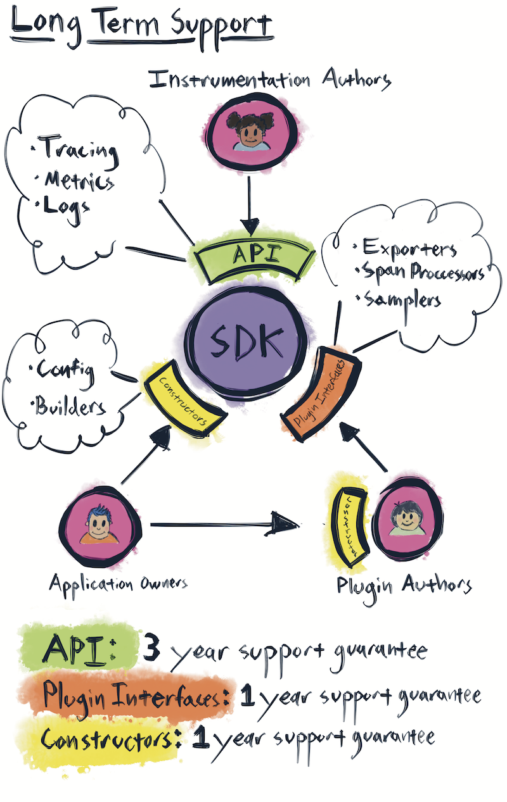

OpenTelemetry Enhancement Proposal (OTEP)


Evolving OpenTelemetry at the speed of Markdown
OpenTelemetry uses an "OTEP" (similar to a RFC) process for proposing changes to the OpenTelemetry specification.
Table of Contents
- OpenTelemetry Enhancement Proposal (OTEP)
What changes require an OTEP
The OpenTelemetry OTEP process is intended for changes that are cross-cutting - that is, applicable across languages and implementations - and either introduce new behaviour, change desired behaviour, or otherwise modify requirements.
In practice, this means that OTEPs should be used for such changes as:
- New tracer configuration options
- Additions to span data
- New metric types
- Modifications to extensibility requirements
On the other hand, they do not need to be used for such changes as:
- Bug fixes
- Rephrasing, grammatical fixes, typos, etc.
- Refactoring
- Things that affect only a single language or implementation
Note: The above lists are intended only as examples and are not meant to be exhaustive. If you don't know whether a change requires an OTEP, please feel free to ask!
Extrapolating cross-cutting changes
Sometimes, a change that is only immediately relevant within a single language or implementation may be indicative of a problem upstream in the specification. We encourage you to add an OTEP if and when you notice such cases.
OTEP scope
While OTEPs are intended for "significant" changes, we recommend trying to keep each OTEP's scope as small as makes sense. A general rule of thumb is that if the core functionality proposed could still provide value without a particular piece, then that piece should be removed from the proposal and used instead as an example (and, ideally, given its own OTEP!).
For example, an OTEP proposing configurable sampling and various samplers should instead be split into one OTEP proposing configurable sampling as well as an OTEP per sampler.
Writing an OTEP
- First, fork this repo.
- Copy
0000-template.mdtotext/0000-my-OTEP.md, wheremy-OTEPis a title relevant to your proposal, and0000is the OTEP ID. Leave the number as is for now. Once a Pull Request is made, update this ID to match the PR ID. - Fill in the template. Put care into the details: It is important to present convincing motivation, demonstrate an understanding of the design's impact, and honestly assess the drawbacks and potential alternatives.
Submitting the OTEP
- An OTEP is
proposedby posting it as a PR. Once the PR is created, update the OTEP file name to use the PR ID as the OTEP ID. - An OTEP is
approvedwhen four reviewers github-approve the PR. The OTEP is then merged. - If an OTEP is
rejectedorwithdrawn, the PR is closed. Note that these OTEPs submissions are still recorded, as Github retains both the discussion and the proposal, even if the branch is later deleted. - If an OTEP discussion becomes long, and the OTEP then goes through a major revision, the next version of the OTEP can be posted as a new PR, which references the old PR. The old PR is then closed. This makes OTEP review easier to follow and participate in.
Integrating the OTEP into the Spec
- Once an OTEP is
approved, an issue is created in the specification repo to integrate the OTEP into the spec. - When reviewing the spec PR for the OTEP, focus on whether the spec is written clearly, and reflects the changes approved in the OTEP. Please abstain from relitigating the approved OTEP changes at this stage.
- An OTEP is
integratedwhen four reviewers github-approve the spec PR. The PR is then merged, and the spec is versioned.
Implementing the OTEP
- Once an OTEP is
integratedinto the spec, an issue is created in the backlog of every relevant OpenTelemetry implementation. - PRs are made until the all the requested changes are implemented.
- The status of the OpenTelemetry implementation is updated to reflect that it is implementing a new version of the spec.
Changes to the OTEP process
The hope and expectation is that the OTEP process will evolve with the OpenTelemetry. The process is by no means fixed.
Have suggestions? Concerns? Questions? Please raise an issue or raise the matter on our community chat.
Background on the OpenTelemetry OTEP process
Our OTEP process borrows from the Rust RFC and Kubernetes Enhancement Proposal processes, the former also being very influential on the latter; as well as the OpenTracing OTEP process. Massive kudos and thanks to the respective authors and communities for providing excellent prior art 💖
(Open) Telemetry Without Manual Instrumentation
Cross-language requirements for automated approaches to extracting portable telemetry data with zero source code modification.
Motivation
The purpose of OpenTelemetry is to make robust, portable telemetry a built-in feature of cloud-native software. For some software and some situations, that instrumentation can literally be part of the source code. In other situations, it’s not so simple: for example, we can’t necessarily edit or even recompile some of our software, the OpenTelemetry instrumentation only exists as a plugin, or instrumentation just never rises to the top of the priority list for a service-owner. Furthermore, there is occasionally a desire to disable instrumentation for a single plugin or module at runtime, again without requiring developers to make changes to source code.
One way to navigate situations like these is with a software layer that adds OpenTelemetry instrumentation to a service without modifying the source code for that service. (In the conventional APM world, these software layers are often called “agents”, though that term is overloaded and ambiguous so we try avoid it in this document.)
Why “cross-language”?
Many people have correctly observed that “agent” design is highly language-dependent. This is certainly true, but there are still higher-level “product” objectives for OpenTelemetry that can guide the design choices we make across languages and help users form a consistent impression of what OpenTelemetry provides (and what it does not).
Suggested reading
- This GitHub issue: Propose an "Auto-Instrumentation SIG"
- Rough notes from the June 11, 2019 meeting following this ^^ issue
- The rough draft for this RFC, including the comments
Proposed guidelines
Requirements
Without further ado, here are a set of requirements for “official” OpenTelemetry efforts to accomplish zero-source-code-modification instrumentation (i.e., “OpenTelemetry agents”) in any given language:
- Manual source code modifications "very strongly discouraged", with an exception for languages or environments that leave no credible alternatives. Any code changes must be trivial and
O(1)per source file (rather than per-function, etc). - Licensing must be permissive (e.g., ASL / BSD)
- Packaging must allow vendors to “wrap” or repackage the portable (OpenTelemetry) library into a single asset that’s delivered to customers
- That is, vendors do not want to require users to comprehend both an OpenTelemetry package and a vendor-specific package
- Explicit, whitebox OpenTelemetry instrumentation must interoperate with the “automatic” / zero-source-code-modification / blackbox instrumentation.
- If the blackbox instrumentation starts a Span, whitebox instrumentation must be able to discover it as the active Span (and vice versa)
- Relatedly, there also must be a way to discover and avoid potential conflicts/overlap/redundancy between explicit whitebox instrumentation and blackbox instrumentation of the same libraries/packages
- That is, if a developer has already added the “official” OpenTelemetry plugin for, say, gRPC, then when the blackbox instrumentation effort adds gRPC support, it should not “double-instrument” it and create a mess of extra spans/etc
- From the standpoint of the actual telemetry being gathered, the same standards and expectations (about tagging, metadata, and so on) apply to "whitebox" instrumentation and automatic instrumentation
- The code in the OpenTelemetry package must not take a hard dependency on any particular vendor/vendors (that sort of functionality should work via a plugin or registry mechanism)
- Further, the code in the OpenTelemetry package must be isolated to avoid possible conflicts with the host application (e.g., shading in Java, etc)
Nice-to-have properties
- Run-time integration (vs compile-time integration)
- Automated and modular testing of individual library/package plugins
- Note that this also makes it easy to test against multiple different versions of any given library
- A fully pluggable architecture, where plugins can be registered at runtime without requiring changes to the central repo at github.com/open-telemetry
- E.g., for ops teams that want to write a plugin for a proprietary piece of legacy software they are unable to recompile
- Augemntation of whitebox instrumentation by blackbox instrumentation (or, perhaps, vice versa). That is, not only can the trace context be shared by these different flavors of instrumentation, but even things like in-flight Span objects can be shared and co-modified (e.g., to use runtime interposition to grab local variables and attach them to a manually-instrumented span).
Trade-offs and mitigations
Approaching a problem this language-specific at the cross-language altitude is intrinsically challenging since "different languages are different" – e.g., in Go there is no way to perform the kind of runtime interpositioning that's possible in Python, Ruby, or even Java.
There is also a school of thought that we should only be focusing on the bits and bytes that actually escape the running process and ignore how that's actually accomplished. This has a certain elegance to it, but it also runs afoul of the need to have manual instrumentation interoperate with the zero-touch instrumentation, especially when it comes to the (shared) distributed context itself.
Proposal
What is our desired end state for OpenTelemetry end-users?
To reiterate much of the above:
- First and foremost, portable OpenTelemetry instrumentation can be installed without manual source code modification
- There’s one “clear winner” when it comes to portable, automatic instrumentation; just like with OpenTracing and OpenCensus, this is a situation where choice is not necessarily a good thing. End-users who wish to contribute instrumentation plugins should not have their enthusiasm and generosity diluted across competing projects.
- As much as such a thing is possible, consistency across languages
- Broad coverage / “plugin support”
- Broad vendor support for OpenTelemetry
- All other things being equal, get all of these ^^ benefits ASAP!
What's the basic proposal?
Given the desired end state, the Datadog tracers seem like the closest-fit, permissively-licensed option out there today. We asked Datadog's leadership whether they would be interested in donating that code to OpenTelemetry, and they were receptive to the idea. (I.e., this would not be a "hard fork" that must be maintained in parallel forever)
The overarching (technical) process, per-language
- Start with the Datadog
dd-trace-footracers - For each language:
- Fork the Datadog
datadog/dd-trace-foorepo into aopen-telemetry/auto-instr-fooOpenTelemetry repo (exact naming TBD) - In parallel:
- The
dd-trace-foocodebases already do a good job separating Datadog-specific functionality from general-purpose functionality. Where needed, make that boundary even more explicit through an API (or "SPI", really). - Create a new
dd-trace-foolib that wrapsauto-instr-fooand includes the Datadog-specific pieces factored out above - Show that it’s also possible to bind to arbitrary OpenTelemetry-based tracers to the above API/SPI
- The
- Declare the forked
auto-instr-foorepository ready for production beta use - For some (ideally brief) period:
- When new plugins are added to Datadog's (original) repo, merge them over into the
auto-instr-foorepo - Allow Datadog end-users to bind to either for some period of time (ultimately Datadog's decision on timeline here, and does not prevent other tracers from using
auto-instr-foo) - Finally, when the combination of
auto-instr-fooand a Datadog wrapper is functionally equivalent to thedd-trace-foomainline, the latter can be safely replaced by the former.- Note that, by design, this is not expected to affect Datadog end-users
- When new plugins are added to Datadog's (original) repo, merge them over into the
- Moved repo is GA’d: all new plugins (and improvements to the auto-instrumentation core) happen in the
auto-instr-foorepo
- Fork the Datadog
There are some languages that will have OpenTelemetry support before they have Datadog dd-trace-foo support. In those situations, we will fall back to the requirements in this OTEP and leave the technical determinations up to the language SIG and the OpenTelemetry TC.
Governance of the auto-instrumentation libraries
Each auto-instr-foo repository must have at least one Maintainer in common with the main opentelemetry-foo language repository. There are no other requirements or constraints about the set of maintainers/approvers for the main language repository and the respective auto-instrumentation repository; in particular, there may be maintainers/approvers of the main language repository that are not maintainers/approvers for the auto-instrumentation repository, and vice versa.
Mini-FAQ about this proposal
Will this be the only auto-instrumentation story for OpenTelemetry? It need not be. The auto-instrumentation libraries described above will have no privileged access to OpenTelemetry APIs, and as such they have no exclusive advantage over any other auto-instrumentation libraries.
What about auto-instrumenting Project X? Why aren't we using that instead?? First of all, there's nothing preventing any of us from taking great ideas from Project X and incorporating them into these auto-instrumentation libraries. We propose that we start with the Datadog codebases and iterate from there as need be. If there are improvements to be made in any given language, they will be welcomed by all.
Prior art and alternatives
There are many proprietary APM language agents – no need to survey them all here. There is a much smaller list of "APM agents" (or other auto-instrumentation efforts) that are already permissively-licensed OSS. For instance, when we met to discuss options for JVM (longer notes here), we came away with the following list:
The most obvious "alternative approach" would be to choose "starting points" independently in each language. This has several problems:
- Higher likelihood of "hard forks": we want to avoid an end state where two projects (the OpenTelemetry version, and the original version) evolve – and diverge – independently
- Higher likelihood of "concept divergence" across languages: while each language presents unique requirements and challenges, the Datadog auto-instrumentation libraries were written by a single organization with some common concepts and architectural requirements (they were also written to be OpenTracing-compatible, which greatly increases our odds of success given the similarities to OpenTelemetry)
- Datadog would also like a uniform strategy here, and this donation requires their consent (unless we want to do a hard fork, which is suboptimal for everyone). So starting with the Datadog libraries in "all but one" (or "all but two", etc) languages makes this less palatable for them
Remove SpanData
Remove and replace SpanData by adding span start and end options.
Motivation
SpanData represents an immutable span object, creating a fairly large API for all of the fields (12 to be exact). It exposes what feels like an SDK concern and implementation detail to the API surface. As a user, this is another API I need to learn how to use, and ID generation might also need to be exposed. As an implementer, it is a new data type that needs to be supported. The primary motivation for removing SpanData revolves around the desire to reduce the size of the tracing API.
Explanation
SpanData has a couple of use cases.
The first use case revolves around creating a span synchronously but needing to change the start time to a more accurate timestamp. For example, in an HTTP server, you might record the time the first byte was received, parse the headers, determine the span name, and then create the span. The moment the span was created isn't representative of when the request actually began, so the time the first byte was received would become the span's start time. Since the current API doesn't allow start timestamps, you'd need to create a SpanData object. The big downside is that you don't end up with an active span object.
The second use case comes from the need to construct and report out of band spans, meaning that you're creating "custom" spans for an operation you don't own. One good example of this is a span sink that takes in structured logs that contain correlation IDs and a duration (e.g. from splunk) and converts them to spans for your tracing system. Another example is running a sidecar on an HAProxy machine, tailing the request logs, and creating spans. SpanData allows you to report the out of band reporting case, whereas you can’t with the current Span API as you cannot set the start and end timestamp.
I'd like to propose getting rid of SpanData and tracer.recordSpanData() and replacing it by allowing tracer.startSpan() to accept a start timestamp option and span.end() to accept end timestamp option. This reduces the API surface, consolidating on a single span type. Options would meet the requirements for out of band reporting.
Internal details
startSpan() would change so you can include an optional start timestamp, span ID, and resource. When you have a span sink, out of band spans may have different resources than the tracer they are being reported to, so you want to pass an explicit resource. For span.end() you would have an optional end timestamp. The exact implementation would be language specific, so some would use an options pattern with function overloading or variadic parameters, or add these options to the span builder.
Trade-offs and mitigations
From https://github.com/open-telemetry/opentelemetry-specification/issues/71: If the underlying SDK automatically adds tags to spans such as thread-id, stacktrace, and cpu-usage when a span is started, they would be incorrect for out of band spans as the tracer would not know the difference between in and out of band spans. This can be mitigated by indicating that the span is out of band to prevent attaching incorrect information, possibly with an isOutOfBand() option on startSpan().
Prior art and alternatives
The OpenTracing specification for tracer.startSpan() includes an optional start timestamp and zero or more tags. It also calls out an optional end timestamp and bulk logging for span.end().
Open questions
There also seems to be some hidden dependency between SpanData and the sampler API. For example, given a complete SpanData object with a start and end timestamp, I imagine there's a use case where the sampler can look at the that and decide "this took a long time" and sample it. Is this a real use case? Is there a requirement to be able to provide complete span objects to the sampler?
Future Work
We might want to include attributes as a start option to give the underlying sampler more information to sample with. We also might want to include optional events, which would be for bulk adding events with explicit timestamps.
We will also want to ensure, assuming the span or subtrace is being created in the same process, that the timestamps use the same precision and are monotonic.
Related Issues
Removing SpanData would resolve open-telemetry/opentelemetry-specification#71.
Options would solve open-telemetry/opentelemetry-specification#139.
By removing SpanData, open-telemetry/opentelemetry-specification#92 can be resolved and closed.
open-telemetry/opentelemetry-specification#68 can be closed. An optional resource can provide a different resource for out of band spans, otherwise the tracer can provide the default resource.
open-telemetry/opentelemetry-specification#60 can be closed due to removal of SpanData.
Consolidate pre-aggregated and raw metrics APIs
Foreword
A working group convened on 8/21/2019 to discuss and debate the two metrics RFCs (0003 and 0004) and several surrounding concerns. This document has been revised with related updates that were agreed upon during this working session. See the meeting notes.
Overview
Introduce a Measure kind of metric object that supports a Record API method. Like existing Gauge and Cumulative metrics, the new Measure metric supports pre-defined labels. A new RecordBatch measurement API is introduced for recording multiple metric observations simultaneously.
Terminology
This RFC changes how "Measure" is used in the OpenTelemetry metrics specification. Before, "Measure" was the name of a series of raw measurements. After, "Measure" is the kind of a metric object used for recording a series raw measurements.
Since this document will be read in the future after the proposal has been written, uses of the word "current" lead to confusion. For this document, the term "preceding" refers to the state that was current prior to these changes.
The preceding specification used the term TimeSeries to describe an instrument bound with a set of pre-defined labels. In this document, the term "Handle" is used to describe an instrument with bound labels. In a future OTEP this will be again changed to "Bound instrument". The term "Handle" is used throughout this document to refer to a bound instrument.
Motivation
In the preceding Metric.GetOrCreateTimeSeries API for Gauges and Cumulatives, the caller obtains a TimeSeries handle for repeatedly recording metrics with certain pre-defined label values set. This enables an important optimization for exporting pre-aggregated metrics, since the implementation is able to compute the aggregate summary "entry" using a pointer or fast table lookup. The efficiency gain requires that the aggregation keys be a subset of the pre-defined labels.
Application programs with long-lived objects and associated Metrics can take advantage of pre-defined labels by computing label values once per object (e.g., in a constructor), rather than once per call site. In this way, the use of pre-defined labels improves the usability of the API as well as makes an important optimization possible to the implementation.
The preceding raw statistics API did not specify support for pre-defined labels. This RFC replaces the raw statistics API by a new, general-purpose kind of metric, MeasureMetric, generally intended for recording individual measurements like the preceding raw statistics API, with explicit support for pre-defined labels.
The preceding raw statistics API supported all-or-none recording for interdependent measurements using a common label set. This RFC introduces a RecordBatch API to support recording batches of measurements in a single API call, where a Measurement is now defined as a pair of MeasureMetric and Value (integer or floating point).
Explanation
The common use for MeasureMetric, like the preceding raw statistics API, is for reporting information about rates and distributions over structured, numerical event data. Measure metrics are the most general-purpose of metrics. Informally, the individual metric event has a logical format expressed as one primary key=value (the metric name and a numerical value) and any number of secondary key=values (the labels, resources, and context).
metric_name=_number_
pre_defined1=_any_value_
pre_defined2=_any_value_
...
resource1=_any_value_
resource2=_any_value_
...
context_tag1=_any_value_
context_tag2=_any_value_
...
Here, "pre_defined" keys are those captured in the metrics handle, "resource" keys are those configured when the SDK was initialized, and "context_tag" keys are those propagated via context.
Events of this form can logically capture a single update to a named metric, whether a cumulative, gauge, or measure kind of metric. This logical structure defines a low-level encoding of any metric event, across the three kinds of metric. An SDK could simply encode a stream of these events and the consumer, provided access to the metric definition, should be able to interpret these events according to the semantics prescribed for each kind of metric.
Metrics API concepts
The Meter interface represents the metrics portion of the OpenTelemetry API.
There are three kinds of metric instrument, CumulativeMetric, GaugeMetric, and MeasureMetric.
Metric instruments are constructed through the Meter API. Constructing an instrument automatically registers it with the SDK. The common attributes of a metric instrument are:
| Field | Description |
|---|---|
| Name | A string. |
| Kind | One of Cumulative, Gauge, or Measure. |
| Recommended Keys | Default aggregation keys. |
| Unit | The unit of measurement being recorded. |
| Description | Information about this metric. |
See the specification for more information on these fields, including formatting and uniqueness requirements. To define a new metric, use one of the Meter API methods (e.g., with names like NewCumulativeMetric, NewGaugeMetric, or NewMeasureMetric).
Metric instrument Handles combine a metric instrument with a set of pre-defined labels. Handles are obtained by calling a language-specific API method (e.g., GetHandle) on the metric instrument with certain label values. Handles may be used to Set(), Add(), or Record() metrics according to their kind.
Selecting Metric Kind
By separation of API and implementation in OpenTelemetry, we know that an implementation is free to do anything in response to a metric API call. By the low-level interpretation defined above, all metric events have the same structural representation, only their logical interpretation varies according to the metric definition. Therefore, we select metric kinds based on two primary concerns:
- What should be the default implementation behavior? Unless configured otherwise, how should the implementation treat this metric variable?
- How will the program source code read? Each metric uses a different verb, which helps convey meaning and describe default behavior. Cumulatives have an
Add()method. Gauges have aSet()method. Measures have aRecord()method.
To guide the user in selecting the right kind of metric for an application, we'll consider the following questions about the primary intent of reporting given data. We use "of primary interest" here to mean information that is almost certainly useful in understanding system behavior. Consider these questions:
- Does the measurement represent a quantity of something? Is it also non-negative?
- Is the sum a matter of primary interest?
- Is the event count a matter of primary interest?
- Is the distribution (p50, p99, etc.) a matter of primary interest?
The specification will be updated with the following guidance.
Cumulative metric
Likely to be the most common kind of metric, cumulative metric events express the computation of a sum. Choose this kind of metric when the value is a quantity, the sum is of primary interest, and the event count and distribution are not of primary interest. To raise (or lower) a cumulative metric, call the Add() method.
If the quantity in question is always non-negative, it implies that the sum is monotonic. This is the common case, Monotonic(true), where cumulative sums only rise, and these metric instruments serve to compute a rate. For this reason, cumulative metrics have a Monotonic(false) option to be declared as allowing negative inputs, the uncommon case. The SDK should reject negative inputs to monotonic cumulative metrics, but it is not required to.
For cumulative metrics, the default OpenTelemetry implementation exports the sum of event values taken over an interval of time.
Gauge metric
Gauge metrics express a pre-calculated value that is either Set() by explicit instrumentation or observed through a callback. Generally, this kind of metric should be used when the metric cannot be expressed as a sum or a rate because the measurement interval is arbitrary. Use this kind of metric when the measurement is a computed value and the sum and event count are not of interest.
Only the gauge kind of metric supports observing the metric via a gauge Observer callback (as an option, see 0008-metric-observer.md). Semantically, there is an important difference between explicitly setting a gauge and observing it through a callback. In case of setting the gauge explicitly, the Set() call happens inside of an implicit or explicit context. The implementation is free to associate the explicit Set() event with a context, for example. When observing gauge metrics via a callback, there is no context associated with the event.
As a special case, to support existing metrics infrastructure and the Observer pattern, a gauge metric may be declared as a precomputed, monotonic sum using the Monotonic(true) option, in which case it is may be used to define a rate. The initial value is presumed to be zero. The SDK should reject descending updates to monotonic gauges, but it is not required to.
For gauge metrics, the default OpenTelemetry implementation exports the last value that was explicitly Set(), or if using a callback, the current value from the Observer.
Measure metric
Measure metrics express a distribution of measured values. This kind of metric should be used when the count or rate of events is meaningful and either:
- The sum is of interest in addition to the count (rate)
- Quantile information is of interest.
The key property of a measure metric event is that computing quantiles and/or summarizing a distribution (e.g., via a histogram) may be expensive. Not only will implementations have various capabilities and algorithms for this task, users may wish to control the quality and cost of aggregating measure metrics.
Like cumulative metrics, non-negative measures are an important case because they support rate calculations. Measure metrics are described as Absolute(true) when the inputs are non-negative. As an option, measure metrics may be declared as Absolute(false) to support positive and negative values. The SDK should reject negative measurements for Absolute measures, but it is not required to.
Option to disable metrics by default
Metric instruments are enabled by default, meaning that SDKs will export metric data for this instrument without configuration. Metric instruments support a Disabled option, marking them as verbose sources of information that may be configured on an as-needed basis to control cost (e.g., using a "views" API).
Kind-specific option summary
The kind-specific optional properties of a metric instrument are:
| Property | Description | Metric kind |
|---|---|---|
| Monotonic(true) | Indicates a cumulative that accepts only non-negative values | Cumulative (default) |
| Indicate a gauge supports ascending value sequences starting at 0 | Gauge | |
| Monotonic(false) | Indicates a cumulative that accepts positive and negative values | Cumulative |
| Indicate a gauge that expresses a monotonic cumulative value | Gauge (default) | |
| Absolute(true) | Indicates a measure that accepts non-negative values | Measure (default) |
| Absolute(false) | Indicates a measure that accepts positive and negative values | Measure |
RecordBatch API
Applications sometimes want to act upon multiple metric instruments in a single API call, either because the values are inter-related to each other, or because it lowers overhead. RecordBatch logically updates each instrument in the batch using the supplied value. A single label set applies to the batch.
A single measurement is defined as:
- Instrument: the measure instrument (not a Handle)
- Value: the recorded floating point or integer data
The batch measurement API uses a language-specific method name (e.g., RecordBatch). The entire batch of measurements takes place within a (implicit or explicit) context.
Prior art and alternatives
Prometheus supports the notion of vector metrics, which are those that support pre-defined labels for a specific set of required keys. The vector-metric API supports a variety of methods like WithLabelValues to associate labels with a metric handle, similar to GetHandle in OpenTelemetry. As in this proposal, Prometheus supports a vector API for all metric types.
Open questions
GetHandle argument ordering
Argument ordering has been proposed as the way to pass pre-defined label values in GetHandle. The argument list must match the parameter list exactly, and if it doesn't we generally find out at runtime or not at all. This model has more optimization potential, but is easier to misuse than the alternative. The alternative approach is to always pass label:value pairs to GetOrCreateTimeseries, as opposed to an ordered list of values.
RecordBatch argument ordering
The discussion above can be had for the proposed RecordBatch method. It can be declared with an ordered list of metrics, then the Record API takes only an ordered list of numbers. Alternatively, and less prone to misuse, the RecordBatch API has been declared with a list of metric:number pairs.
Eliminate GetDefaultHandle()
Instead of a mechanism to obtain a default handle, some languages may prefer to simply operate on the metric instrument directly in this case. Should OpenTelemetry eliminate GetDefaultHandle and instead specify that cumulative, gauge, and measure metric instruments implement Add(), Set(), and Record() with the same interpretation?
If we eliminate GetDefaultHandle(), the SDK may keep a map of metric instrument to default handle on its own.
RecordBatch support for all metrics
In the 8/21 working session, we agreed to limit RecordBatch to recording of simultaneous measure metrics, meaning to exclude cumulatives and gauges from batch recording. There are arguments in favor of supporting batch recording for all metric instruments.
- If atomicity (i.e., the all-or-none property) is the reason for batch reporting, it makes sense to include all the metric instruments in the API
RecordBatchsupport for cumulatives and gauges will be natural for SDKs that act as forwarders for metric events . The natural implementation forAdd()andSet()methods will beRecordBatchwith a single event.- Likewise, it is simple for an SDK that acts as an aggregator (not a forwarder) to redirect
Add()andSet()APIs to the handle-specificAdd()andSet()methods; while the SDK, as the implementation, still may (not must) treat these cumulative and gauge updates as atomic.
Arguments against batch recording for all metric instruments:
- The
RecordinRecordBatchsuggests it is to be applied to measure metrics. This is due to measure metrics being the most general-purpose of metric instruments.
Issues addressed
Raw vs. other metrics / measurements are unclear
Eliminate Measurement class to save on allocations
Implement three more types of Metric
Global SDK initialization
Status: proposed
Specify the behavior of OpenTelemetry APIs and implementations at startup.
Motivation
OpenTelemetry is designed with a separation between the API and the SDK which implements it, allowing an application to configure and bind any compatible SDK at runtime. OpenTelemetry is designed to support "zero touch" instrumentation for third party libraries through the use of a global instance.
In many programming environments, it is possible for libraries of code to auto-initialize, allowing them to begin operation concurrently with the main program, e.g., while initializing static program state. This presents a set of opposing requirements: (1) the API supports a configurable SDK; (2) third party libraries may use OpenTelemetry without configuration.
Explanation
There are several acceptable ways to address this situation. The feasibility of each approach varies by language. The implementation must select one of the following strategies:
Service provider mechanism
Where the language provides a commonly accepted way to inject SDK components, it should be preferred. The Java SPI supports loading and configuring the global SDK before it is first used, and because of this property the service provider mechanism case leaves little else to specify.
Explicit initializer
When it is not possible to ensure the SDK is installed and configured before the API is first used, loading the SDK is handed off to the user "at the right time", as stated in Ruby issue 19. In this case, a number of requirements must be specified, as discussed next.
Requirements: Explicit initializer
OpenTelemetry specifies that the default implementation is non-operational (i.e., a "no-op"), requiring that API method calls result in effectively zero instrumentation overhead. We expect third party libraries to use the global SDK before it is installed, which is addressed in a requirement stated below.
The explicit initializer method should take independent Tracer and
Meter objects (e.g., opentelemetry.Init(Tracer, Meter)). The SDK
may be installed no more than once. After the first SDK installed,
subsequent calls to the explicit initializer shall log console
warnings.
In common language, uses of the global SDK instance (i.e., the Tracer and Meter) must "begin working" once the SDK is installed, with the following stipulations:
Tracer
There may be loss of spans at startup.
Spans that are started before the SDK is installed are not recovered, they continue as No-op spans.
Meter
There may be loss of metrics at startup.
Metric SubMeasure objects (i.e., metrics w/ predefined labels) initialized before the SDK is installed will redirect to the global SDK after it is installed.
Concrete types
Keys, tags, attributes, labels, resources, span context, and distributed context are specified as pure API objects, therefore do not depend on the SDK being installed.
Trade-offs and mitigations
Testing support
Testing should be performed without depending on the global SDK.
Synchronization
Since the global Tracer and Meter objects are required to begin working once the SDK is installed, there is some implied synchronization overhead at startup, overhead we expect to fall after the SDK is installed. We recommend explicitly installing a No-op SDK to fully disable instrumentation, as this approach will have a lower overhead than leaving the OpenTelemetry library uninitialized.
Prior art and alternatives
As an example that does not qualify as "commonly accepted", see Go
issue 52
which demonstrates using the Go plugin package to load a
configurable SDK prior to first use.
Open questions
What other options should be passed to the explicit global initializer?
Is there a public test for "is the SDK installed; is it a no-op"?
Sampling API
TL;DR
This section tries to summarize all the changes proposed in this RFC:
- Move the
Samplerinterface from the API to SDK package. Apply some minor changes to theSamplerAPI. - Add capability to record
Attributesthat can be used for sampling decision during theSpancreation time. - Remove
addLinkAPIs from theSpaninterface, and allow recording links only during the span construction time.
Motivation
Different users of OpenTelemetry, ranging from library developers, packaged infrastructure binary developers, application developers, operators, and telemetry system owners, have separate use cases for OpenTelemetry that have gotten muddled in the design of the original Sampling API. Thus, we need to clarify what APIs each should be able to depend upon, and how they will configure sampling and OpenTelemetry according to their needs.
+----------+ +-----------+
grpc | Library | | |
Django | Devs +---------->| OTel API |
Express | | +------>| |
+----------+ | +--->+-----------+ +---------+
| | ^ | OTel |
| | | +->| Proxy +---+
| | | | | | |
+----------+ | | +-----+-----+------------+ | +---------+ |
| | | | | | OTel Wire | | |
Hbase | Infra | | | | | Export |+-+ v
Envoy | Binary +---+ | | OTel | | | +----v-----+
| Devs | | | SDK +------------+ | | |
+----------+---------->| | | +---------->| Backend |
+------>| | Custom | +---------->| |
| | | | Export | | +----------+
+----------+ | | | | |+-+ ^
| +---+ | +-----------+------------+ |
| App +------+ ^ ^ |
| Devs + | | +------------+-+
| | | | | |
+----------+ +---+----+ +----------+ Telemetry |
| SRE | | Owner |
| | | |
+--------+ +--------------+
Lightstep
Honeycomb
Explanation
We outline five different use cases (who may be overlapping sets of people), and how they should interact with OpenTelemetry:
Library developer
Examples: gRPC, Express, Django developers.
- They must only depend upon the OpenTelemetry API and not upon the SDK.
- For testing only they may depend on the SDK with InMemoryExporter.
- They are shipping source code that will be linked into others' applications.
- They have no explicit runtime control over the application.
- They know some signal about what traces may be interesting (e.g. unusual control plane requests) or uninteresting (e.g. health-checks), but have to write fully generically.
Solution:
- For the moment, the OpenTelemetry API will not offer any
SamplingHintfunctionality for the last use case. This is intentional to avoid premature optimizations, and it is based on the fact that changing an API is backwards incompatible compared to adding a new API.
Infrastructure package/binary developer
Examples: HBase, Envoy developers.
- They are shipping self-contained binaries that may accept YAML or similar run-time configuration, but are not expected to support extensibility/plugins beyond the default OpenTelemetry SDK, OpenTelemetry SDKTracer, and OpenTelemetry wire format exporter.
- They may have their own recommendations for sampling rates, but don't run the binaries in production, only provide packaged binaries. So their sampling rate configs, and sampling strategies need to be a finite "built in" set from OpenTelemetry's SDK.
- They need to deal with upstream sampling decisions made by services that call them.
Solution:
- Allow different sampling strategies by default in OpenTelemetry SDK, all configurable easily via YAML or feature flags. See default samplers.
Application developer
These are the folks we've been thinking the most about for OpenTelemetry in general.
- They have full control over the OpenTelemetry implementation or SDK configuration. When using the SDK they can configure custom exporters, custom code/samplers, etc.
- They can choose to implement runtime configuration via a variety of means (e.g. baking in feature flags, reading YAML files, etc.), or even configure the library in code.
- They make heavy usage of OpenTelemetry for instrumenting application-specific behavior, beyond what may be provided by the libraries they use such as gRPC, Django, etc.
Solution:
- Allow application developers to link in custom samplers or write their own when using the
official SDK.
- These might include dynamic per-field sampling to achieve a target rate (e.g. https://github.com/honeycombio/dynsampler-go)
- Sampling decisions are made within the start Span operation, after attributes relevant to the span have been added to the Span start operation but before a concrete Span object exists (so that either a NoOpSpan can be made, or an actual Span instance can be produced depending upon the sampler's decision).
- Span.IsRecording() needs to be present to allow costly span attribute/log computation to be skipped if the span is a NoOp span.
Application operator
Often the same people as the application developers, but not necessarily
- They care about adjusting sampling rates and strategies to meet operational needs, debugging, and cost.
Solution:
- Use config files or feature flags written by the application developers to control the application sampling logic.
- Use the config files to configure libraries and infrastructure package behavior.
Telemetry infrastructure owner
They are the people who provide an implementation for the OpenTelemetry API by using the SDK with
custom Exporters, Samplers, hooks, etc. or by writing a custom implementation, as well as
running the infrastructure for collecting exported traces.
- They care about a variety of things, including efficiency, cost effectiveness, and being able to gather spans in a way that makes sense for them.
Solution:
- Infrastructure owners receive information attached to the span, after sampling hooks have already been run.
Internal details
In Dapper based systems (or systems without a deferred sampling decision) all exported spans are stored to the backend, thus some of these systems usually don't scale to a high volume of traces, or the cost to store all the Spans may be too high. In order to support this use-case and to ensure the quality of the data we send, OpenTelemetry needs to natively support sampling with some requirements:
- Send as many complete traces as possible. Sending just a subset of the spans from a trace is less useful because in this case the interaction between the spans may be missing.
- Allow application operator to configure the sampling frequency.
For new modern systems that need to collect all the Spans and later may or may not make a deferred sampling decision, OpenTelemetry needs to natively support a way to configure the library to collect and export all the Spans. This is possible (even though OpenTelemetry supports sampling) by setting a default config to always collect all the spans.
Sampling flags
OpenTelemetry API has two flags/properties:
RecordEvents- This property is exposed in the
Spaninterface (e.g.Span.isRecordingEvents()). - If
truethe currentSpanrecords tracing events (attributes, events, status, etc.), otherwise all tracing events are dropped. - Users can use this property to determine if expensive trace events can be avoided.
- This property is exposed in the
SampledFlag- This flag is propagated via the
TraceOptionsto the child Spans (e.g.TraceOptions.isSampled()). For more details see the w3c definition here. - In Dapper based systems this is equivalent to
Spanbeingsampledand exported.
- This flag is propagated via the
The flag combination SampledFlag == false and RecordEvents == true means that the current Span
does record tracing events, but most likely the child Span will not. This combination is
necessary because:
- Allow users to control recording for individual Spans.
- OpenCensus has this to support z-pages, so we need to keep backwards compatibility.
The flag combination SampledFlag == true and RecordEvents == false can cause gaps in the
distributed trace, and because of this OpenTelemetry API should NOT allow this combination.
It is safe to assume that users of the API should only access the RecordEvents property when
instrumenting code and never access SampledFlag unless used in context propagators.
Sampler interface
The interface for the Sampler class that is available only in the OpenTelemetry SDK:
TraceIDSpanID- Parent
SpanContextif any Links- Span name
SpanKind- Initial set of
Attributesfor theSpanbeing constructed
It produces an output called SamplingResult that includes:
- A
SamplingDecisionenum [NOT_RECORD,RECORD,RECORD_AND_PROPAGATE]. - A set of span Attributes that will also be added to the
Span.- These attributes will be added after the initial set of
Attributes.
- These attributes will be added after the initial set of
- (under discussion in separate RFC) the SamplingRate float.
Default Samplers
These are the default samplers implemented in the OpenTelemetry SDK:
- ALWAYS_ON
- ALWAYS_OFF
- ALWAYS_PARENT
- Trust parent sampling decision (trusting and propagating parent
SampledFlag). - For root Spans (no parent available) returns
NOT_RECORD.
- Trust parent sampling decision (trusting and propagating parent
- Probability
- Allows users to configure to ignore the parent
SampledFlag. - Allows users to configure if probability applies only for "root spans", "root spans and remote
parent", or "all spans".
- Default is to apply only for "root spans and remote parent".
- Remote parent property should be added to the SpanContext see specs PR/216
- Sample with 1/N probability
- Allows users to configure to ignore the parent
Root Span Decision:
| Sampler | RecordEvents | SampledFlag |
|---|---|---|
| ALWAYS_ON | True | True |
| ALWAYS_OFF | False | False |
| ALWAYS_PARENT | False | False |
| Probability | Same as SampledFlag | Probability |
Child Span Decision:
| Sampler | RecordEvents | SampledFlag |
|---|---|---|
| ALWAYS_ON | True | True |
| ALWAYS_OFF | False | False |
| ALWAYS_PARENT | ParentSampledFlag | ParentSampledFlag |
| Probability | Same as SampledFlag | ParentSampledFlag OR Probability |
Links
This RFC proposes that Links will be recorded only during the start Span operation, because:
- Link's
SampledFlagcan be used in the sampling decision. - OpenTracing supports adding references only during the
Spancreation. - OpenCensus supports adding links at any moment, but this was mostly used to record child Links which are not supported in OpenTelemetry.
- Allowing links to be recorded after the sampling decision is made will cause samplers to not work correctly and unexpected behaviors for sampling.
When does sampling happen
The sampling decision will happen before a real Span object is returned to the user, because:
- If child spans are created they need to know the 'SampledFlag'.
- If
SpanContextis propagated on the wire the 'SampledFlag' needs to be set. - If user records any tracing event the
Spanobject needs to know if the data are kept or not. It may be possible to always collect all the events until the sampling decision is made but this is an important optimization.
There are two important use-cases to be considered:
- All information that may be used for sampling decisions are available at the moment when the
logical
Spanoperation should start. This is the most common case. - Some information that may be used for sampling decision are NOT available at the moment when the
logical
Spanoperation should start (e.g.http.routemay be determine later).
The current span creation logic facilitates the first use-case very well, but
the second use-case requires users to record the logical start_time and collect all the
information necessarily to start the Span in custom objects, then when all the properties are
available call the span creation API.
The RFC proposes that we keep the current span creation logic as it is and we will address the delayed sampling in a different RFC when that becomes a high priority.
The SDK must call the Sampler every time a Span is created during the start span operation.
Alternatives considerations:
- We considered, to offer a delayed span construction mechanism:
- For languages where a
Builderpattern is used to construct aSpan, to allow users to create aBuilderwhere the start time of the Span is considered when theBuilderis created. - For languages where no intermediate object is used to construct a
Span, to allow users maybe via aStartSpanOptionobject to start aSpan. TheStartSpanOptionallows users to set all the startSpanproperties. - Pros:
- Would resolve the second use-case posted above.
- Cons:
- We could not identify too many real case examples for the second use-case and decided to postpone the decision to avoid premature decisions.
- For languages where a
- We considered, instead of requiring that sampling decision happens before the
Spanis created to add an explicitMakeSamplingDecision(SamplingHint)on theSpan. Attempts to create a childSpan, or to access theSpanContextwould fail ifMakeSamplingDecision()had not yet been run.- Pros:
- Simplifies the case when all the attributes that may be used for sampling are not available
when the logical
Spanoperation should start.
- Simplifies the case when all the attributes that may be used for sampling are not available
when the logical
- Cons:
- The most common case would have required an extra API call.
- Error prone, users may forget to call the extra API.
- Unexpected and hard to find errors if user tries to create a child
Spanbefore calling MakeSamplingDecision().
- Pros:
- We considered allowing the sampling decision to be arbitrarily delayed, but guaranteed before
any child
Spanis created, orSpanContextis accessed, or beforeSpan.end()finished.- Pros:
- Similar and smaller API that supports both use-cases defined ahead.
- Cons:
- If
SamplingHintneeds to also be delayed recorded then an extra API on Span is required to set this. - Does not allow optimization to not record tracing events, all tracing events MUST be recorded before the sampling decision is made.
- If
- Pros:
Prior art and alternatives
Prior art for Zipkin, and other Dapper based systems: all client-side sampling decisions are made at head. Thus, we need to retain compatibility with this.
Open questions
This RFC does not necessarily resolve the question of how to propagate sampling rate values between different spans and processes. A separate RFC will be opened to cover this case.
Future possibilities
In the future, we propose that library developers may be able to defer the decision on whether to recommend the trace be sampled or not sampled until mid-way through execution;
Related Issues
- opentelemetry-specification/189
- opentelemetry-specification/187
- opentelemetry-specification/164
- opentelemetry-specification/125
- opentelemetry-specification/87
- opentelemetry-specification/66
- opentelemetry-specification/65
- opentelemetry-specification/53
- opentelemetry-specification/33
- opentelemetry-specification/32
- opentelemetry-specification/31
Remove support to report out-of-band telemetry from the API
TL;DR
This section tries to summarize all the changes proposed in this RFC:
- Remove API requirement to support reporting out-of-band telemetry.
- Move Resource to SDK, API will always report telemetry for the current application so no need to allow configuring the Resource in any instrumentation.
- New APIs should be designed without this requirement.
Motivation
Currently the API package is designed with a goal to support reporting out-of-band telemetry, but
this requirements forces a lot of trade-offs and unnecessary complicated APIs (e.g. Resource must
be exposed in the API package to allow telemetry to be associated with the source of the telemetry).
Reporting out-of-band telemetry is a required for the OpenTelemetry ecosystem, but this can be done via a few different other options that does not require to use the API package:
- The OpenTelemetry Service, users can write a simple receiver that parses and produces the OpenTelemetry data.
- Using the SDK's exporter framework, users can write directly OpenTelemetry data.
Internal details
Here is a list of decisions and trade-offs related to supporting out-of-band reporting:
- Add
Resourceconcept into the API.- Example in the create metric we need to allow users to specify the resource, see here. The developer that writes the instrumentation has no knowledge about where the monitored resource is deployed so there is no way to configure the right resource.
- RFC removes support to report SpanData.
- This will require that the trace API has to support all the possible fields to be configured
via the API, for example need to allow users to set a pre-generated
SpanIdthat can be avoided if we do not support out-of-band reporting.
- This will require that the trace API has to support all the possible fields to be configured
via the API, for example need to allow users to set a pre-generated
- Sampling logic for out-of-band spans will get very complicated because it will be incorrect to sample these data.
- Associating the source of the telemetry with the telemetry data gets very simple. All data produced by one instance of the API implementation belongs to only one Application.
This can be rephrased as "one API implementation instance" can report telemetry about only the current Application.
Resource changes
This RFC does not suggest to remove the Resource concept or to modify any API in this interface,
it only suggests to move this concept to the SDK level.
Every implementation of the API (SDK in OpenTelemetry case) instance will have one Resource that
describes the running Application. There may be cases where in the same binary there are multiple
Application running (e.g. Java application server), every application will have it's own SDK
instance configured with it's own Resource.
Related Issues
Metrics observer specification
Status: Superceded entirely by 0072-metric-observer
Propose metric Observer callbacks for context-free access to current Gauge instrument values on demand.
Motivation
The current specification describes metric callbacks as an alternate means of generating metrics for the SDK, allowing the application to generate metrics only as often as desired by the monitoring infrastructure. This proposal limits callback metrics to only support gauge Observer callbacks, arguably the only important case.
Explanation
Gauge metric instruments are typically used to reflect properties that are pre-computed by a system, where the measurement interval is arbitrary. When selecting a gauge, as opposed to the cumulative or measure kind of metric instrument, there could be significant computational cost in computing the current value. When this is the case, it is understandable that we are interested in computing them on demand to minimize cost.
Why are gauges different than cumulative and measure instruments? Measure instruments, by definition, carry information in the individual event, so the callback cannot optimize any better than the SDK can in this case. Cumulative instruments are more commonly used to record amounts that are readily available, such as the number of bytes read or written, and while this may not always be true, recall the special case of NonDescending gauges.
NonDescending gauges owe their existence to this case, that we support non-negative cumulative metrics which, being expensive to compute, are recommended for use with Observer callbacks. For example, if it requires a system call or more to compute a non-descending sum, such as the cpu seconds consumed by the process, we should declare a non-descending gauge Observer for the instrument, instead of a cumulative. This allows the cost of the metric to be reduced according to the desired monitoring frequency.
One significant difference between gauges that are explicitly Set(), as compared with observer callbacks, is that Set() happens inside a context, whereas the observer callback does not.
Details
Observer callbacks are only supported for gauge metric instruments. Use the language-specific constructor for an Observer gauge (e.g., metric.NewFloat64Observer()). Observer gauges support the NonDescending option.
Callbacks return a map from label set to gauge value. Gauges declared with observer callbacks cannot also be Set.
Callbacks should avoid blocking. The implementation may be required to cancel computation if the callback blocks for too long.
Callbacks must not be called synchronously with application code via any OpenTelemetry API. Implementations that cannot provide this guarantee should prefer not to implement observer callbacks.
Callbacks may be called synchronously in the SDK on behalf of an exporter.
Callbacks should avoid calling OpenTelemetry APIs, but we recognize this may be impossible to enforce.
Trade-offs and mitigations
Callbacks are a relatively dangerous programming pattern, which may require care to avoid deadlocks between the application and the API or the SDK. Implementations may consider preventing deadlocks through runtime callstack introspection, to make these interfaces absolutely safe.
Metric Handle API specification
Specify the behavior of the Metrics API "Handle" type, for efficient repeated-use of metric instruments.
Motivation
The specification currently names this concept "TimeSeries", the type returned by GetOrCreateTimeseries, which supports binding a metric to a pre-defined set of labels for repeated use. This proposal renames these "Handle" and GetHandle, respectively, and adds further detail to the API specification for handles.
Explanation
The TimeSeries is referred to as a "Handle", as the former name suggests an implementation, not an API concept. "Handle", we feel, is more descriptive of the intended use. Likewise with GetOrCreateTimeSeries to GetHandle and GetDefaultTimeSeries to GetDefaultHandle, these names suggest an implementation and not the intended use.
Applications are encouraged to re-use metric handles for efficiency.
Handles are useful to reduce the cost of repeatedly recording a metric instrument (cumulative, gauge, or measure) with a pre-defined set of label values.
GetHandle gets a new handle given a LabelSet.
As a language-optional feature, the API may provide an ordered form of the API for supplying labels in known order. The ordered label-value API is provided as a (language-optional) potential optimization that facilitates a simple lookup for the SDK. In this ordered-value form, the API is permitted to throw an exception or return an error when there is a mismatch in the arguments to GetHandle, although languages without strong type-checking may wish to omit this feature. When label values are accepted in any order, SDKs may be forced to canonicalize the labels in order to find an existing metrics handle, but they must not throw exceptions.
GetHandle supports arbitrary label sets. There is no requirement that the LabelSet used to construct a handle covers the recommended aggregation keys of a metric instrument.
Internal details
Because each of the metric kinds supports a different operation (Add(), Set(), and Record()), there are logically distinct kinds of handle. The names of the distinct handle types should reflect their instrument kind.
The names (Handle, GetHandle, ...) are just language-neutral recommendations. Language APIs should feel free to choose type and method names with attention to the language's style.
Metric Attachment support
OpenCensus has the notion of a metric attachment, allowing the application to include additional information associated with the event, for sampling purposes. Any label value not used for aggregation may be used as a sample "attachment", including the OpenTelemetry span context, to associate sample trace context with exported metrics.
Issues addressed
Agreements reached on handles and naming in the working group convened on 8/21/2019.
record should take a generic Attachment class instead of having tracing dependency
Rename "Cumulative" to "Counter" in the metrics API
Prefer the name "Counter" as opposed to "Cumulative".
Motivation
Informally speaking, it seems that OpenTelemetry community members would prefer to call Cumulative metric instruments "Counters". During conversation (e.g., in the 8/21 working session), this has become clear.
Counter is a noun, like the other kinds Gauge and Measure. Cumulative is an adjective, so while "Cumulative instrument" makes sense, it describes a "Counter".
Explanation
This will eliminate the cognitive cost of mapping "cumulative" to "counter" when speaking about these APIs.
This is the term used for a cumulative metric instrument, for example, in Statsd and Prometheus.
However, we have identified important sub-cases of Counter that are treated as follows. Counters have an option:
- True-cumulative Counter: By default,
Add()arguments must be >= 0. - Bi-directional Counter: As an option,
Add()arguments must be +/-0.
Gauges are sometimes used to monitoring non-descending quantities (e.g., cpu usage), as an option:
- Bi-directional Gauge: By default,
Set()arguments may by +/- 0. - Uni-directional Gauge: As an option,
Set()arguments must change by >= 0.
Uni-directional Gauge instruments are typically used in metric Observer callbacks where the observed value is cumulative.
Trade-offs and mitigations
Other ways to describe the distinction between true-cumulative and bi-directional Counters are:
- Additive (vs. Cumulative)
- GaugeDelta (vs. Gauge)
It is possible that reducing all of these cases into the broad term "Counter" creates more confusion than it addresses.
Internal details
Simply replace every "Cumulative" with "Counter", then edit for grammar.
Prior art and alternatives
In a survey of existing metrics libraries, Counter is far more common.
Named Tracers and Meters
Associate Tracers and Meters with the name and version of the instrumentation library which reports telemetry data by parameterizing the API which the library uses to acquire the Tracer or Meter.
Suggested reading
Motivation
The mechanism of "Named Tracers and Meters" proposed here is motivated by the following scenarios:
Faulty or expensive instrumentation
For an operator of an application using OpenTelemetry, there is currently no way to influence the amount of data produced by instrumentation libraries. Instrumentation libraries can easily "spam" backend systems, deliver bogus data, or -- in the worst case -- crash or slow down applications. These problems might even occur suddenly in production environments because of external factors such as increasing load or unexpected input data.
Instrumentation library identification
If an instrumentation library hasn't implemented semantic conventions correctly or those conventions change over time, it's currently hard to interpret and sanitize data produced by it selectively. The produced Spans or Metrics cannot later be associated with the library which reported them, either in the processing pipeline or the backend.
Disable instrumentation of pre-instrumented libraries
It is the eventual goal of OpenTelemetry that library vendors implement the OpenTelemetry API, obviating the need to auto-instrument their library. An operator should be able to disable the telemetry that is built into some database driver or other library and provide their own integration if the built-in telemetry is lacking in some way. This should be possible even if the developer of that database driver has not provided a configuration to disable telemetry.
Solution
This proposal attempts to solve the stated problems by introducing the concept of:
- Named Tracers and Meters which are associated with the name (e.g. "io.opentelemetry.contrib.mongodb") and version (e.g."semver:1.0.0") of the library which acquired them.
- A
TracerProvider/MeterProvideras the only means of acquiring a Tracer or Meter.
Based on the name and version, a Provider could provide a no-op Tracer or Meter to specific instrumentation libraries, or a Sampler could be implemented that discards Spans or Metrics from certain libraries. Also, by providing custom Exporters, Span or Metric data could be sanitized before it gets processed in a back-end system. However, this is beyond the scope of this proposal, which only provides the fundamental mechanisms.
Explanation
From a user perspective, working with Named Tracers / Meters and TracerProvider / MeterProvider is conceptually similar to how e.g. the Java logging API and logging frameworks like log4j work. In analogy to requesting Logger objects through LoggerFactories, an instrumentation library would create specific Tracer / Meter objects through a TracerProvider / MeterProvider.
New Tracers or Meters can be created by providing the name and version of an instrumentation library. The version (following the convention proposed in https://github.com/open-telemetry/oteps/pull/38) is basically optional but should be supplied since only this information enables following scenarios:
- Only a specific range of versions of a given instrumentation library need to be suppressed, while other versions are allowed (e.g. due to a bug in those specific versions).
- Go modules allow multiple versions of the same middleware in a single build so those need to be determined at runtime.
// Create a tracer/meter for a given instrumentation library in a specific version.
Tracer tracer = OpenTelemetry.getTracerProvider().getTracer("io.opentelemetry.contrib.mongodb", "semver:1.0.0");
Meter meter = OpenTelemetry.getMeterProvider().getMeter("io.opentelemetry.contrib.mongodb", "semver:1.0.0");
These factories (TracerProvider and MeterProvider) replace the global Tracer / Meter singleton objects as ubiquitous points to request Tracer and Meter instances.
The name used to create a Tracer or Meter must identify the instrumentation libraries (also referred to as integrations) and not the library being instrumented. These instrumentation libraries could be libraries developed in an OpenTelemetry repository, a 3rd party implementation, or even auto-injected code (see Open Telemetry Without Manual Instrumentation OTEP). See also the examples for identifiers at the end.
If a library (or application) has instrumentation built-in, it is both the instrumenting and instrumented library and should pass its own name here. In all other cases (and to distinguish them from that case), the distinction between instrumenting and instrumented library is very important. For example, if an HTTP library com.example.http is instrumented by either io.opentelemetry.contrib.examplehttp, then it is important that the Tracer is not named com.example.http, but io.opentelemetry.contrib.examplehttp after the actual instrumentation library.
If no name (null or empty string) is specified, following the suggestions in "error handling proposal", a "smart default" will be applied and a default Tracer / Meter implementation is returned.
Examples (of Tracer and Meter names)
Since Tracer and Meter names describe the libraries which use those Tracers and Meters, their names should be defined in a way that makes them as unique as possible. The name of the Tracer / Meter should represent the identity of the library, class or package that provides the instrumentation.
Examples (based on existing contribution libraries from OpenTracing and OpenCensus):
io.opentracing.contrib.spring.rabbitmqio.opentracing.contrib.jdbcio.opentracing.thriftio.opentracing.contrib.asynchttpclientio.opencensus.contrib.http.servletio.opencensus.contrib.spring.sleuth.v1xio.opencesus.contrib.http.jaxrsgithub.com/opentracing-contrib/go-amqp(Go)github.com/opentracing-contrib/go-grpc(Go)OpenTracing.Contrib.NetCore.AspNetCore(.NET)OpenTracing.Contrib.NetCore.EntityFrameworkCore(.NET)
Internal details
By providing a TracerProvider / MeterProvider and Named Tracers / Meters, a vendor or OpenTelemetry implementation gains more flexibility in providing Tracers and Meters and which attributes they set in the resulting Spans and Metrics that are produced.
On an SDK level, the SpanData class and its Metrics counterpart are extended with a getLibraryResource function that returns the resource associated with the Tracer / Meter that created it.
Glossary of Terms
Instrumentation library
Also known as the trace/metrics reporter, this may be either a library/module/plugin provided by OpenTelemetry that instruments an existing library, a third party integration which instruments some library, or a library that has implemented the OpenTelemetry API in order to instrument itself. In any case, the instrumentation library is the library which provides tracing and metrics data to OpenTelemetry.
examples:
@opentelemetry/plugin-httpio.opentelemetry.redisredis-client(in this case,redis-clienthas instrumented itself with the OpenTelemetry API)
Tracer / Meter name and version
When an instrumentation library acquires a Tracer/Meter, it provides its own name and version to the Tracer/Meter Provider. This name/version two-tuple is said to be the Tracer/Meter's name and version. Note that this is the name and version of the library which acquires the Tracer/Meter, and not the library it is monitoring. In cases where the library is instrumenting itself using the OpenTelemetry API, they may be the same.
example: If the http version semver:3.0.0 library is being instrumented by a library with the name io.opentelemetry.contrib.http and version semver:1.3.2, then the tracer name and version are also io.opentelemetry.contrib.http and semver:1.3.2. If that same http library has built-in instrumentation through use of the OpenTelemetry API, then the tracer name and version would be http and semver:3.0.0.
Meter namespace
Meter name is used as a namespace for all metrics created by it. This allows a telemetry library to register a metric using any name, such as latency, without worrying about collisions with a metric registered under the same name by a different library.
example: The libraries redis and io.opentelemetry.redis may both register metrics with the name latency. These metrics can still be uniquely identified even though they have the same name because they are registered under different namespaces (redis and io.opentelemetry.redis respectively). In this case, the operator may disable one of these metrics because they are measuring the same thing.
Prior art and alternatives
This proposal originates from an opentelemetry-specification proposal on components since having a concept of named Tracers would automatically enable determining this semantic component property.
Alternatively, instead of having a TracerProvider, existing (global) Tracers could return additional indirection objects (called e.g. TraceComponent), which would be able to produce spans for specifically named traced components.
TraceComponent traceComponent = OpenTelemetry.Tracing.getTracer().componentBuilder("io.opentelemetry.contrib.mongodb", "semver:1.0.0");
Span span = traceComponent.spanBuilder("someMethod").startSpan();
Overall, this would not change a lot compared to the TracerProvider since the levels of indirection until producing an actual span are the same.
Instead of setting the component property based on the given Tracer names, those names could also be used as prefixes for produced span names (e.g. <TracerName-SpanName>). However, with regard to data quality and semantic conventions, a dedicated component set on spans is probably preferred.
Instead of using plain strings as an argument for creating new Tracers, a Resource identifying an instrumentation library could be used. Such resources must have a version and a name label (there could be semantic convention definitions for those labels). This implementation alternative mainly depends on the availability of the Resource data type on an API level (see https://github.com/open-telemetry/opentelemetry-specification/pull/254).
// Create resource for given instrumentation library information (name + version)
Map<String, String> libraryLabels = new HashMap<>();
libraryLabels.put("name", "io.opentelemetry.contrib.mongodb");
libraryLabels.put("version", "1.0.0");
Resource libraryResource = Resource.create(libraryLabels);
// Create tracer for given instrumentation library.
Tracer tracer = OpenTelemetry.getTracerProvider().getTracer(libraryResource);
Those given alternatives could be applied to Meters and Metrics in the same way.
Future possibilities
Based on the Resource information identifying a Tracer or Meter these could be configured (enabled / disabled) programmatically or via external configuration sources (e.g. environment).
Based on this proposal, future "signal producers" (i.e. logs) can use the same or a similar creation approach.
OpenTelemetry Protocol Specification
Author: Tigran Najaryan, Omnition Inc.
OpenTelemetry Protocol (OTLP) specification describes the encoding, transport and delivery mechanism of telemetry data between telemetry sources, intermediate nodes such as collectors and telemetry backends.
Table of Contents
- Motivation
- Protocol Details
- Implementation Recommendations
- Trade-offs and mitigations
- Future Versions and Interoperability
- Prior Art, Alternatives and Future Possibilities
- Open Questions
- Appendix A - Protocol Buffer Definitions
- Appendix B - Performance Benchmarks
- Glossary
- Acknowledgements
Motivation
OTLP is a general-purpose telemetry data delivery protocol designed in the scope of OpenTelemetry project. It is an incremental improvement of OpenCensus protocol. Compared to OpenCensus protocol OTLP has the following improvements:
-
Ensures high reliability of data delivery and clear visibility when the data cannot be delivered. OTLP uses acknowledgements to implement reliable delivery.
-
It is friendly to Level 7 Load Balancers and allows them to correctly map imbalanced incoming traffic to a balanced outgoing traffic. This allows to efficiently operate large networks of nodes where telemetry data generation rates change over time.
-
Allows backpressure signalling from telemetry data destinations to sources. This is important for implementing reliable multi-hop telemetry data delivery all the way from the source to the destination via intermediate nodes, each having different processing capacity and thus requiring different data transfer rates.
Protocol Details
OTLP defines the encoding of telemetry data and the protocol used to exchange data between the client and the server.
This specification defines how OTLP is implemented over gRPC and specifies corresponding Protocol Buffers schema. Future extensions to OTLP may define implementations over other transports. For details of gRPC service definition see section gRPC Transport.
OTLP is a request/response style protocols: the clients send requests, the server replies with corresponding responses. This document defines one requests and response type: Export.
Export Request and Response
After establishing the underlying transport the client starts sending telemetry data using Export requests. The client continuously sends a sequence of Export requests to the server and expects to receive a response to each request:

Note: this protocol is concerned with reliability of delivery between one pair of client/server nodes and aims to ensure that no data is lost in-transit between the client and the server. Many telemetry collection systems have intermediary nodes that the data must travel across until reaching the final destination (e.g. application -> agent -> collector -> backend). End-to-end delivery guarantees in such systems is outside of the scope of OTLP. The acknowledgements described in this protocol happen between a single client/server pair and do not span intermediary nodes in multi-hop delivery paths.
OTLP over gRPC
For gRPC transport OTLP uses Unary RPC to send export requests and receives responses.
After sending the request the client MAY wait until the response is received from the server. In that case there will be at most only one request in flight that is not yet acknowledged by the server.

Sequential operation is recommended when simplicity of implementation is desirable and when the client and the server are connected via very low-latency network, such as for example when the client is an instrumented application and the server is a OpenTelemetry Service running as a local daemon.
The implementations that need to achieve high throughput SHOULD support concurrent Unary calls to achieve higher throughput. The client SHOULD send new requests without waiting for the response to the earlier sent requests, essentially creating a pipeline of requests that are currently in flight that are not acknowledged.

The number of concurrent requests SHOULD be configurable.
The maximum achievable throughput is max_concurrent_requests * max_request_size / (network_latency + server_response_time). For example if the request can contain at most 100 spans, network roundtrip latency is 200ms and server response time is 300 ms, then the maximum achievable throughput with one concurrent request is 100 spans / (200ms+300ms) or 200 spans per second. It is easy to see that in high latency networks or when the server response time is high to achieve good throughput the requests need to be very big or a lot concurrent requests must be done.
If the client is shutting down (e.g. when the containing process wants to exit) the client will optionally wait until all pending acknowledgements are received or until an implementation specific timeout expires. This ensures reliable delivery of telemetry data. The client implementation SHOULD expose an option to turn on and off the waiting during shutdown.
If the client is unable to deliver a certain request (e.g. a timer expired while waiting for acknowledgements) the client SHOULD record the fact that the data was not delivered.
Export Response
The server may respond with either a success or an error to export requests.
The success response indicates telemetry data is successfully processed by the server. If the server receives an empty request (a request that does not carry any telemetry data) the server SHOULD respond with success.
When using gRPC transport, success response is returned via ExportResponse message.
When an error is returned by the server it falls into 2 broad categories: retryable and not-retryable:
-
Retryable errors indicate that processing of telemetry data failed and the client SHOULD record the error and may retry exporting the same data. This can happen when the server is temporarily unable to process the data.
-
Not-retryable errors indicate that processing of telemetry data failed and the client MUST NOT retry sending the same telemetry data. The telemetry data MUST be dropped. This can happen, for example, when the request contains bad data and cannot be deserialized or otherwise processed by the server. The client SHOULD maintain a counter of such dropped data.
When using gRPC transport the server SHOULD indicate retryable errors using code Unavailable and MAY supply additional details via status using RetryInfo containing 0 value of RetryDelay. Here is a sample Go code to illustrate:
// Do this on server side.
st, err := status.New(codes.Unavailable, "Server is unavailable").
WithDetails(&errdetails.RetryInfo{RetryDelay: &duration.Duration{Seconds: 0}})
if err != nil {
log.Fatal(err)
}
return st.Err()
To indicate not-retryable errors the server is recommended to use code InvalidArgument and MAY supply additional details via status using BadRequest. Other gRPC status code may be used if it is more appropriate. Here is a sample Go code to illustrate:
// Do this on server side.
st, err := status.New(codes.InvalidArgument, "Invalid Argument").
WithDetails(&errdetails.BadRequest{})
if err != nil {
log.Fatal(err)
}
return st.Err()
The server MAY use other gRPC codes to indicate retryable and not-retryable errors if those other gRPC codes are more appropriate for a particular erroneous situation. The client SHOULD interpret gRPC status codes as retryable or not-retryable according to the following table:
| gRPC Code | Retryable? |
|---|---|
| CANCELLED | Yes |
| UNKNOWN | No |
| INVALID_ARGUMENT | No |
| DEADLINE_EXCEEDED | Yes |
| NOT_FOUND | No |
| ALREADY_EXISTS | No |
| PERMISSION_DENIED | No |
| UNAUTHENTICATED | No |
| RESOURCE_EXHAUSTED | Yes |
| FAILED_PRECONDITION | No |
| ABORTED | Yes |
| OUT_OF_RANGE | Yes |
| UNIMPLEMENTED | No |
| INTERNAL | No |
| UNAVAILABLE | Yes |
| DATA_LOSS | Yes |
When retrying, the client SHOULD implement a backoff strategy. An exception to this is the Throttling case explained below, which provides explicit instructions about retrying interval.
Throttling
OTLP allows backpressure signalling.
If the server is unable to keep up with the pace of data it receives from the client then it SHOULD signal that fact to the client. The client MUST then throttle itself to avoid overwhelming the server.
To signal backpressure when using gRPC transport, the server SHOULD return an error with code Unavailable and MAY supply additional details via status using RetryInfo. Here is a sample Go code to illustrate:
// Do this on server side.
st, err := status.New(codes.Unavailable, "Server is unavailable").
WithDetails(&errdetails.RetryInfo{RetryDelay: &duration.Duration{Seconds: 30}})
if err != nil {
log.Fatal(err)
}
return st.Err()
...
// Do this on client side.
st := status.Convert(err)
for _, detail := range st.Details() {
switch t := detail.(type) {
case *errdetails.RetryInfo:
if t.RetryDelay.Seconds > 0 || t.RetryDelay.Nanos > 0 {
// Wait before retrying.
}
}
}
When the client receives this signal it SHOULD follow the recommendations outlined in documentation for RetryInfo:
// Describes when the clients can retry a failed request. Clients could ignore
// the recommendation here or retry when this information is missing from error
// responses.
//
// It's always recommended that clients should use exponential backoff when
// retrying.
//
// Clients should wait until `retry_delay` amount of time has passed since
// receiving the error response before retrying. If retrying requests also
// fail, clients should use an exponential backoff scheme to gradually increase
// the delay between retries based on `retry_delay`, until either a maximum
// number of retires have been reached or a maximum retry delay cap has been
// reached.
The value of retry_delay is determined by the server and is implementation dependant. The server SHOULD choose a retry_delay value that is big enough to give the server time to recover, yet is not too big to cause the client to drop data while it is throttled.
gRPC Service Definition
Export requests and responses are delivered using unary gRPC calls.
This is OTLP over gRPC Service definition:
service UnaryExporter {
rpc ExportTraces(TraceExportRequest) returns (ExportResponse) {}
rpc ExportMetrics(MetricExportRequest) returns (ExportResponse) {}
}
Appendix A contains Protocol Buffer definitions for TraceExportRequest, MetricExportRequest and ExportResponse.
Other Transports
OTLP can work over any other transport that supports message request/response capabilities. Additional transports supported by OTLP can be specified in future RFCs that extend OTLP.
Implementation Recommendations
Multi-Destination Exporting
When the telemetry data from one client must be sent to more than one destination server there is an additional complication that must be accounted for. When one of the servers acknowledges the data and the other server does not (yet) acknowledges the client needs to make a decision about how to move forward.
In such situation the the client SHOULD implement queuing, acknowledgement handling and retrying logic per destination. This ensures that servers do not block each other. The queues SHOULD reference shared, immutable data to be sent, thus minimizing the memory overhead caused by having multiple queues.

This ensures that all destination servers receive the data regardless of their speed of reception (within the available limits imposed by the size of the client-side queue).
Trade-offs and mitigations
Request Acknowledgements
Duplicate Data
In edge cases (e.g. on reconnections, network interruptions, etc) the client has no way of knowing if recently sent data was delivered if no acknowledgement was received yet. The client will typically choose to re-send such data to guarantee delivery, which may result in duplicate data on the server side. This is a deliberate choice and is considered to be the right tradeoff for telemetry data.
Partial Success
The protocol does not attempt to communicate partial reception success from the server to the client (i.e. when part of the data can be received by the server and part of it cannot). Attempting to do so would complicate the protocol and implementations significantly and is left out as a possible future area of work.
Future Versions and Interoperability
OTLP will evolve and change over time. Future versions of OTLP must be designed and implemented in a way that ensures that clients and servers that implement different versions of OTLP can interoperate and exchange telemetry data. Old clients must be able to talk to new servers and vice versa. If new versions of OTLP introduce new functionality that cannot be understood and supported by nodes implementing the old versions of OTLP the protocol must regress to the lowest common denominator from functional perspective.
When possible the interoperability SHOULD be ensured between all versions of OTLP that are not declared obsolete.
OTLP does not use explicit protocol version numbering. OTLP's interoperability of clients and servers of different versions is based on the following concepts:
-
OTLP (current and future versions) defines a set of capabilities, some of which are mandatory, others are optional. Clients and servers must implement mandatory capabilities and can choose implement only a subset of optional capabilities.
-
For minor changes to the protocol future versions and extension of OTLP are encouraged to use the ability of Protocol Buffers to evolve message schema in backwards compatible manner. Newer versions of OTLP may add new fields to messages that will be ignored by clients and servers that do not understand these fields. In many cases careful design of such schema changes and correct choice of default values for new fields is enough to ensure interoperability of different versions without nodes explicitly detecting that their peer node has different capabilities.
-
More significant changes must be explicitly defined as new optional capabilities in future RFCs. Such capabilities SHOULD be discovered by client and server implementations after establishing the underlying transport. The exact discovery mechanism SHOULD be described in future RFCs which define the new capabilities and typically can be implemented by making a discovery request/response message exchange from the client to server. The mandatory capabilities defined by this specification are implied and do not require a discovery. The implementation which supports a new, optional capability MUST adjust its behavior to match the expectation of a peer that does not support a particular capability.
The current version of OTLP is the initial version that describes mandatory capabilities only. Implementations of this specification SHOULD NOT attempt to detect the capabilities of their peers and should operate as defined in this document.
Prior Art, Alternatives and Future Possibilities
We have considered using gRPC streaming instead of Unary RPC calls. This would require implementations to manually perform stream closing and opening periodically to be L7 Load Balancer friendly. Reference implementation using gRPC Streaming has shown that it results in significantly more complex and error prone code without significant benefits. Because of this Unary RPC was chosen.
OTLP is an evolution of OpenCensus protocol based on the research and testing of its modifications in production at Omnition. The modifications include changes to data formats (see RFC0059), use of Unary PRC and backpressure signaling capability.
OTLP uses Protocol Buffers for data encoding. Two other encodings were considered as alternative approaches: FlatBuffers and Capnproto. Both alternatives were rejected. FlatBuffers was rejected because it lacks required functionality in all languages except C++, particularly lack of verification of decoded data and inability to mutate in-memory data. Capnproto was rejected because it is not yet considered production ready, the API is not yet stable and like FlatBuffers it lacks ability mutate in-memory data.
Both FlatBuffers and Capnproto are worth to be re-evaluated for future versions of OpenTelemetry protocol if they overcome currently known limitations.
It is also worth researching transports other than gRPC. Other transports are not included in this RFC due to time limitations.
Experimental implementation of OTLP over WebSockets exists and was researched as an alternate. WebSockets were not chosen as the primary transport for OTLP due to lack or immaturity of certain capabilities (such as lack of universal support for RFC 7692 message compression extension). Despite limitations the experimental implementation demonstrated good performance and WebSocket transport will be considered for inclusion in a future OTLP Extensions RFC.
Open Questions
One of the goals for telemetry protocol is reducing CPU usage and memory pressure in garbage collected languages. These goals were not addressed as part of this RFC and remain open. One of the promising future ways to address this is finding a more CPU and memory efficient encoding mechanism.
Another goal for telemetry protocol is achieving high compression ratios for telemetry data while keeping CPU consumption low. OTLP uses compression provided by gRPC transport. No further improvements to compression were considered as part of this RFC and are a future area of work.
Appendix A - Protocol Buffer Definitions
This is Protocol Buffers schema for Export request and response:
// A request from client to server containing trace data to export.
message TraceExportRequest {
// Telemetry data. An array of ResourceSpans.
repeated ResourceSpans resourceSpans = 2;
}
// A request from client to server containing metric data to export.
message MetricExportRequest {
// Telemetry data. An array of ResourceMetrics.
repeated ResourceMetrics resourceMetrics = 2;
}
// A response to ExportRequest.
message ExportResponse {
// Response in an empty message.
}
// A list of spans from a Resource.
message ResourceSpans {
Resource resource = 1;
repeated Span spans = 2;
}
// A list of metrics from a Resource.
message ResourceMetrics {
Resource resource = 1;
repeated Metric metrics = 2;
}
Span, Metric and Resource schema definitions are defined in RFCNNNN (RFC number to be defined and linked from here).
Appendix B - Performance Benchmarks
Benchmarking of OTLP vs other telemetry protocols was done using reference implementation in Go.
Throughput - Sequential vs Concurrent
Using 20 concurrent requests shows the following throughput advantage in benchmarks compared to sequential for various values of network roundtrip latency:
+-----------+-----------------------+
+ Latency | Concurrent/Sequential |
+ | Throughput Factor |
+-----------+-----------------------+
+ 0.02 ms | 1.7 |
+ 2 ms | 2.1 |
+ 20 ms | 4.9 |
+ 200 ms | 6.9 |
+-----------+-----------------------+
Benchmarking is done using Export requests each carrying 500 spans, each span containing 10 small attributes.
CPU Usage - gRPC vs WebSocket/Experimental
Experimental implementation using WebSocket transport demonstrated about 30% less CPU usage on small batches compared to gRPC transport and about 7% less CPU usage on large batches.
This shows that exploring different transports with less overhead is a promising future direction.
Benchmarking Raw Results
The following is the benchmarking result, running on on a system with i7 7500U processor, 16 GB RAM. (Note that the benchmarking script sets "performance" CPU governor during execution and sets nice value of the process for more consistent results).
====================================================================================
Legend:
GRPC/Stream/LBTimed/Sync - GRPC, streaming, load balancer friendly, close stream every 30 sec, with ack
GRPC/Stream/LBTimed/Async/N - OTLP Streaming. GRPC, N streams, load balancer friendly, close stream every 30 sec, with async ack
GRPC/Unary - OTLP Unary. One request per batch, load balancer friendly, with ack
GRPC/Unary/Async - GRPC, unary async request per batch, load balancer friendly, with ack
GRPC/OpenCensus - OpenCensus protocol, streaming, not load balancer friendly, without ack
GRPC/OpenCensusWithAck - OpenCensus-like protocol, streaming, not load balancer friendly, with ack
GRPC/Stream/NoLB - GRPC, streaming, not load balancer friendly, with ack
GRPC/Stream/LBAlways/Sync - GRPC, streaming, load balancer friendly, close stream after every batch, with ack
GRPC/Stream/LBSrv/Async - OTLP Streaming. Load balancer friendly, server closes stream every 30 sec or 1000 batches, with async ack
WebSocket/Stream/Sync - WebSocket, streaming, unknown load balancer friendliness, with sync ack
WebSocket/Stream/Async - WebSocket, streaming, unknown load balancer friendliness, with async ack
WebSocket/Stream/Async/zlib - WebSocket, streaming, unknown load balancer friendliness, with async ack, zlib compression
8000 small batches, 100 spans per batch, 4 attrs per span
GRPC/Stream/LBTimed/Async/1 800000 spans, CPU time 12.4 sec, wall time 5.3 sec, 645.7 batches/cpusec, 1510.0 batches/wallsec
GRPC/Stream/LBTimed/Async/10 800000 spans, CPU time 12.3 sec, wall time 3.9 sec, 650.9 batches/cpusec, 2058.4 batches/wallsec
GRPC/Unary 800000 spans, CPU time 15.3 sec, wall time 9.5 sec, 523.2 batches/cpusec, 840.0 batches/wallsec
GRPC/Unary/Async 800000 spans, CPU time 14.1 sec, wall time 4.0 sec, 565.8 batches/cpusec, 1986.3 batches/wallsec
GRPC/OpenCensus 800000 spans, CPU time 21.7 sec, wall time 10.6 sec, 368.7 batches/cpusec, 751.5 batches/wallsec
GRPC/OpenCensusWithAck 800000 spans, CPU time 23.4 sec, wall time 19.0 sec, 342.3 batches/cpusec, 420.8 batches/wallsec
GRPC/Stream/NoLB 800000 spans, CPU time 13.6 sec, wall time 9.4 sec, 588.2 batches/cpusec, 848.7 batches/wallsec
GRPC/Stream/LBAlways/Sync 800000 spans, CPU time 16.1 sec, wall time 10.0 sec, 495.7 batches/cpusec, 798.8 batches/wallsec
GRPC/Stream/LBTimed/Sync 800000 spans, CPU time 13.7 sec, wall time 9.5 sec, 585.7 batches/cpusec, 845.1 batches/wallsec
GRPC/Stream/LBSrv/Async 800000 spans, CPU time 12.7 sec, wall time 12.5 sec, 628.9 batches/cpusec, 639.8 batches/wallsec
WebSocket/Stream/Sync 800000 spans, CPU time 8.4 sec, wall time 8.3 sec, 949.0 batches/cpusec, 965.3 batches/wallsec
WebSocket/Stream/Async 800000 spans, CPU time 9.4 sec, wall time 5.4 sec, 852.0 batches/cpusec, 1492.0 batches/wallsec
WebSocket/Stream/Async/zlib 800000 spans, CPU time 23.3 sec, wall time 16.5 sec, 343.8 batches/cpusec, 484.0 batches/wallsec
800 large batches, 500 spans per batch, 10 attrs per span
GRPC/Stream/LBTimed/Async/1 400000 spans, CPU time 11.4 sec, wall time 7.1 sec, 70.2 batches/cpusec, 113.1 batches/wallsec
GRPC/Stream/LBTimed/Async/10 400000 spans, CPU time 12.2 sec, wall time 5.8 sec, 65.8 batches/cpusec, 138.4 batches/wallsec
GRPC/Unary 400000 spans, CPU time 10.7 sec, wall time 9.6 sec, 74.7 batches/cpusec, 83.2 batches/wallsec
GRPC/Unary/Async 400000 spans, CPU time 11.9 sec, wall time 5.6 sec, 67.0 batches/cpusec, 141.8 batches/wallsec
GRPC/OpenCensus 400000 spans, CPU time 23.9 sec, wall time 14.1 sec, 33.5 batches/cpusec, 56.8 batches/wallsec
GRPC/OpenCensusWithAck 400000 spans, CPU time 22.0 sec, wall time 21.1 sec, 36.4 batches/cpusec, 38.0 batches/wallsec
GRPC/Stream/NoLB 400000 spans, CPU time 10.7 sec, wall time 9.8 sec, 74.9 batches/cpusec, 81.8 batches/wallsec
GRPC/Stream/LBAlways/Sync 400000 spans, CPU time 11.5 sec, wall time 10.2 sec, 69.9 batches/cpusec, 78.2 batches/wallsec
GRPC/Stream/LBTimed/Sync 400000 spans, CPU time 11.1 sec, wall time 10.2 sec, 71.9 batches/cpusec, 78.4 batches/wallsec
GRPC/Stream/LBSrv/Async 400000 spans, CPU time 11.3 sec, wall time 7.0 sec, 70.5 batches/cpusec, 113.6 batches/wallsec
WebSocket/Stream/Sync 400000 spans, CPU time 10.3 sec, wall time 10.1 sec, 78.0 batches/cpusec, 79.4 batches/wallsec
WebSocket/Stream/Async 400000 spans, CPU time 10.5 sec, wall time 7.2 sec, 76.2 batches/cpusec, 111.2 batches/wallsec
WebSocket/Stream/Async/zlib 400000 spans, CPU time 29.0 sec, wall time 22.1 sec, 27.6 batches/cpusec, 36.1 batches/wallsec
2ms network roundtrip latency
800 large batches, 500 spans per batch, 10 attrs per span
GRPC/Stream/LBTimed/Async/1 400000 spans, CPU time 11.1 sec, wall time 7.0 sec, 71.9 batches/cpusec, 114.9 batches/wallsec
GRPC/Stream/LBTimed/Async/10 400000 spans, CPU time 11.4 sec, wall time 5.4 sec, 70.5 batches/cpusec, 148.0 batches/wallsec
GRPC/Unary 400000 spans, CPU time 11.5 sec, wall time 11.8 sec, 69.5 batches/cpusec, 68.1 batches/wallsec
GRPC/Unary/Async 400000 spans, CPU time 11.3 sec, wall time 5.3 sec, 70.5 batches/cpusec, 150.4 batches/wallsec
GRPC/OpenCensus 400000 spans, CPU time 23.1 sec, wall time 13.6 sec, 34.6 batches/cpusec, 58.7 batches/wallsec
GRPC/OpenCensusWithAck 400000 spans, CPU time 21.9 sec, wall time 22.6 sec, 36.6 batches/cpusec, 35.4 batches/wallsec
GRPC/Stream/NoLB 400000 spans, CPU time 11.1 sec, wall time 11.6 sec, 72.3 batches/cpusec, 69.2 batches/wallsec
GRPC/Stream/LBAlways/Sync 400000 spans, CPU time 11.5 sec, wall time 11.6 sec, 69.8 batches/cpusec, 68.9 batches/wallsec
GRPC/Stream/LBTimed/Sync 400000 spans, CPU time 11.3 sec, wall time 11.7 sec, 71.0 batches/cpusec, 68.2 batches/wallsec
GRPC/Stream/LBSrv/Async 400000 spans, CPU time 11.1 sec, wall time 6.9 sec, 72.0 batches/cpusec, 115.1 batches/wallsec
WebSocket/Stream/Sync 400000 spans, CPU time 10.8 sec, wall time 12.0 sec, 74.1 batches/cpusec, 66.5 batches/wallsec
WebSocket/Stream/Async 400000 spans, CPU time 10.6 sec, wall time 7.2 sec, 75.5 batches/cpusec, 111.8 batches/wallsec
WebSocket/Stream/Async/zlib 400000 spans, CPU time 28.6 sec, wall time 21.9 sec, 27.9 batches/cpusec, 36.6 batches/wallsec
20ms network roundtrip latency
400 large batches, 500 spans per batch, 10 attrs per span
GRPC/Stream/LBTimed/Async/1 200000 spans, CPU time 6.2 sec, wall time 4.1 sec, 64.9 batches/cpusec, 96.7 batches/wallsec
GRPC/Stream/LBTimed/Async/10 200000 spans, CPU time 6.2 sec, wall time 3.0 sec, 64.0 batches/cpusec, 132.9 batches/wallsec
GRPC/Unary 200000 spans, CPU time 6.2 sec, wall time 13.5 sec, 64.3 batches/cpusec, 29.6 batches/wallsec
GRPC/Unary/Async 200000 spans, CPU time 5.9 sec, wall time 3.0 sec, 68.0 batches/cpusec, 132.9 batches/wallsec
GRPC/OpenCensus 200000 spans, CPU time 12.6 sec, wall time 7.5 sec, 31.8 batches/cpusec, 53.3 batches/wallsec
GRPC/OpenCensusWithAck 200000 spans, CPU time 12.0 sec, wall time 19.5 sec, 33.4 batches/cpusec, 20.5 batches/wallsec
GRPC/Stream/NoLB 200000 spans, CPU time 5.9 sec, wall time 13.3 sec, 68.3 batches/cpusec, 30.0 batches/wallsec
GRPC/Stream/LBAlways/Sync 200000 spans, CPU time 5.9 sec, wall time 13.3 sec, 68.0 batches/cpusec, 30.2 batches/wallsec
GRPC/Stream/LBTimed/Sync 200000 spans, CPU time 5.8 sec, wall time 13.3 sec, 69.3 batches/cpusec, 30.1 batches/wallsec
GRPC/Stream/LBSrv/Async 200000 spans, CPU time 5.5 sec, wall time 3.7 sec, 73.4 batches/cpusec, 107.3 batches/wallsec
WebSocket/Stream/Sync 200000 spans, CPU time 5.8 sec, wall time 14.6 sec, 69.4 batches/cpusec, 27.4 batches/wallsec
WebSocket/Stream/Async 200000 spans, CPU time 5.5 sec, wall time 3.9 sec, 72.3 batches/cpusec, 102.1 batches/wallsec
WebSocket/Stream/Async/zlib 200000 spans, CPU time 14.7 sec, wall time 11.2 sec, 27.3 batches/cpusec, 35.7 batches/wallsec
200ms network roundtrip latency
40 large batches, 500 spans per batch, 10 attrs per span
GRPC/Stream/LBTimed/Async/1 20000 spans, CPU time 0.5 sec, wall time 3.1 sec, 74.1 batches/cpusec, 12.7 batches/wallsec
GRPC/Stream/LBTimed/Async/10 20000 spans, CPU time 0.7 sec, wall time 3.1 sec, 61.5 batches/cpusec, 12.8 batches/wallsec
GRPC/Unary 20000 spans, CPU time 0.6 sec, wall time 9.9 sec, 65.6 batches/cpusec, 4.0 batches/wallsec
GRPC/Unary/Async 20000 spans, CPU time 0.6 sec, wall time 3.6 sec, 65.6 batches/cpusec, 11.1 batches/wallsec
GRPC/OpenCensus 20000 spans, CPU time 1.1 sec, wall time 3.5 sec, 35.1 batches/cpusec, 11.3 batches/wallsec
GRPC/OpenCensusWithAck 20000 spans, CPU time 1.2 sec, wall time 10.2 sec, 32.8 batches/cpusec, 3.9 batches/wallsec
GRPC/Stream/NoLB 20000 spans, CPU time 0.6 sec, wall time 9.5 sec, 67.8 batches/cpusec, 4.2 batches/wallsec
GRPC/Stream/LBAlways/Sync 20000 spans, CPU time 0.6 sec, wall time 9.5 sec, 63.5 batches/cpusec, 4.2 batches/wallsec
GRPC/Stream/LBTimed/Sync 20000 spans, CPU time 0.6 sec, wall time 9.5 sec, 66.7 batches/cpusec, 4.2 batches/wallsec
GRPC/Stream/LBSrv/Async 20000 spans, CPU time 0.5 sec, wall time 3.3 sec, 74.1 batches/cpusec, 12.0 batches/wallsec
WebSocket/Stream/Sync 20000 spans, CPU time 0.6 sec, wall time 13.5 sec, 69.0 batches/cpusec, 3.0 batches/wallsec
WebSocket/Stream/Async 20000 spans, CPU time 0.5 sec, wall time 6.1 sec, 74.1 batches/cpusec, 6.5 batches/wallsec
WebSocket/Stream/Async/zlib 20000 spans, CPU time 1.5 sec, wall time 2.0 sec, 26.3 batches/cpusec, 19.8 batches/wallsec
400 large batches, 500 spans per batch, 10 attrs per span
200ms network roundtrip latency
GRPC/OpenCensus 200000 spans, CPU time 11.9 sec, wall time 10.1 sec, 33.6 batches/cpusec, 39.6 batches/wallsec
GRPC/Stream/LBTimed/Async/1 200000 spans, CPU time 5.3 sec, wall time 9.5 sec, 76.0 batches/cpusec, 41.9 batches/wallsec
GRPC/Stream/LBTimed/Async/10 200000 spans, CPU time 6.4 sec, wall time 8.9 sec, 62.3 batches/cpusec, 44.7 batches/wallsec
GRPC/Unary/Async 200000 spans, CPU time 5.8 sec, wall time 12.0 sec, 68.6 batches/cpusec, 33.3 batches/wallsec
WebSocket/Stream/Async 200000 spans, CPU time 5.3 sec, wall time 11.2 sec, 75.3 batches/cpusec, 35.7 batches/wallsec
WebSocket/Stream/Async/zlib 200000 spans, CPU time 15.1 sec, wall time 12.0 sec, 26.5 batches/cpusec, 33.4 batches/wallsec
====================================================================================
Glossary
There are 2 parties involved in telemetry data exchange. In this document the party that is the source of telemetry data is called the Client, the party that is the destination of telemetry data is called the Server.

Examples of a Client are instrumented applications or sending side of telemetry collectors, examples of Servers are telemetry backends or receiving side of telemetry collectors (so a Collector is typically both a Client and a Server depending on which side you look from).
Both the Client and the Server are also a Node. This term is used in the document when referring to either one.
Acknowledgements
Special thanks to Owais Lone who helped to conduct experiments with Load Balancers, to Paulo Janotti, Bogdan Drutu and Yuri Shkuro for thoughtful discussions around the protocol.
Version Semantic Attribute
Add a standard version semantic attribute.
Motivation
When creating trace data or metrics, it can be extremely useful to know the specific version that
emitted the iota of span or measurement being viewed. However, versions can mean different things
to different systems and users. In addition, downstream analysis systems may wish to expose
functionality related to the type of a version (such as detecting when versions are newer or older).
To support this, we should standardize a version attribute with optional hints as to the type of the
version.
Explanation
A version is a semantic attribute that can be applied to other resources, such as Service,
Component, Library, Device, Platform, etc. A version attribute is optional, but recommended.
The definition of a version is a key-value attribute pair of string to string, with naming schemas
available to hint at the type of a version, such as the following:
version=semver:1.2.3 (a semantic version)
version=git:8ae73a (a git sha hash)
version=0.0.4.2.20190921 (a untyped version)
Internal details
Since this is just an attribute pair, no special handling is required, although SDKs may provide helper methods to construct schema-appropriate values.
Prior art and alternatives
Tagging service resources with their version is generally suggested by analysis tools -- see JAEGER_TAGS for an example -- but lacks standardization.
Metric LabelSet specification
Introduce a first-class LabelSet API type as a handle on a pre-defined set of labels for the Metrics API.
Motivation
Labels are the term for key-value pairs used in the OpenTelemetry Metrics API. Treatment of labels in the Metrics API is especially important for performance across a variety of export strategies.
Label serialization is often one of the most expensive tasks when processing metric events. Creating a LabelSet once and re-using it many times can greatly reduce the overall cost of processing many events.
The Metrics API supports three calling conventions: the Handle convention, the Direct convention, and the Batch convention. Each of these conventions stands to benefit when a LabelSet is re-used, as it allows the SDK to process the label set once instead of once per call. Whenever more than one handle will be created with the same labels, more than one instrument will be called directly with the same labels, or more than one batch of metric events will be recorded with the same labels, re-using a LabelSet makes it possible for the SDK to improve performance.
Explanation
Metric instrument APIs which presently take labels in the form { Key: Value, ... } will be updated to take an explicit LabelSet. The Meter.Labels() API method supports getting a LabelSet from the API, allowing the programmer to acquire a pre-defined label set. Here are several examples of LabelSet re-use. Assume we have two instruments:
var (
cumulative = metric.NewFloat64Cumulative("my_counter")
gauge = metric.NewFloat64Gauge("my_gauge")
)
Use a LabelSet to construct multiple Handles:
var (
labels = meter.Labels({ "required_key1": value1, "required_key2": value2 })
chandle = cumulative.GetHandle(labels)
ghandle = gauge.GetHandle(labels)
)
for ... {
// ...
chandle.Add(...)
ghandle.Set(...)
}
Use a LabelSet to make multiple Direct calls:
labels := meter.Labels({ "required_key1": value1, "required_key2": value2 })
cumulative.Add(quantity, labels)
gauge.Set(quantity, labels)
Of course, repeated calls to Meter.RecordBatch() could re-use a LabelSet as well.
Ordered LabelSet option
As a language-level decision, APIs may support ordered LabelSet
construction, in which a pre-defined set of ordered label keys is
defined such that values can be supplied in order. This allows a
faster code path to construct the LabelSet. For example,
var rpcLabelKeys = meter.OrderedLabelKeys("a", "b", "c")
for _, input := range stream {
labels := rpcLabelKeys.Values(1, 2, 3) // a=1, b=2, c=3
// ...
}
This is specified as a language-optional feature because its safety,
and therefore its value as an input for monitoring, depends on the
availability of type-checking in the source language. Passing
unordered labels (i.e., a list of bound keys and values) to
Meter.Labels(...) is considered the safer alternative.
Interaction with "Named" Meters
LabelSet values may be used with any named Meter originating from the same Meter provider. That is, LabelSets acquired through a named Meter may be used by any Meter from the same Meter provider.
Internal details
Metric SDKs that do not or cannot take advantage of the LabelSet optimizations are not especially burdened by having to support these APIs. It is trivial to supply an implementation of LabelSet that simply stores a list of labels. This may not be acceptable in performance-critical applications, but this is the common case in many metrics and diagnostics APIs today.
Trade-offs and mitigations
In languages where overloading is a standard convenience, the metrics API may elect to offer alternate forms that elide the call to Meter.Labels(), for example:
instrument.GetHandle({ Key: Value, ... })
as opposed to this:
instrument.GetHandle(meter.Labels({ Key: Value, ... }))
A key distinction between LabelSet and similar concepts in existing metrics libraries is that it is a write-only structure. LabelSet allows the developer to input metric labels without being able to read them back. This avoids forcing the SDK to retain a reference to memory that is not required.
Prior art and alternatives
Some existing metrics APIs support this concept. For example, see Scope in the Tally metric API for Go.
Some libraries take LabelSet one step further. In the future, we may add to the the LabelSet API a method to extend the label set with additional labels. For example:
serviceLabels := meter.Labels({ "k1": "v1", "k2": "v2" })
// ...
requestLabels := serviceLabels.With({ "k3": "v3", "k4": "v4" })
OTLP Trace Data Format
Author: Tigran Najaryan, Splunk
OTLP Trace Data Format specification describes the structure of the trace data that is transported by OpenTelemetry Protocol (RFC0035).
Motivation
This document is a continuation of OpenTelemetry Protocol RFC0035 and is necessary part of OTLP specification.
Explanation
OTLP Trace Data Format is primarily inherited from OpenCensus protocol. Several changes are introduced with the goal of more efficient serialization. Notable differences from OpenCensus protocol are:
- Removed
Nodeas a concept. - Extended
Resourceto better describe the source of the telemetry data. - Replaced attribute maps by lists of key/value pairs.
- Eliminated unnecessary additional nesting in various values.
Changes 1-2 are conceptual, changes 3-4 improve performance.
Internal details
This section specifies data format in Protocol Buffers.
Resource
// Resource information. This describes the source of telemetry data.
message Resource {
// labels is a collection of attributes that describe the resource. See OpenTelemetry
// specification semantic conventions for standardized label names:
// https://github.com/open-telemetry/opentelemetry-specification/blob/master/specification/data-resource-semantic-conventions.md
repeated AttributeKeyValue labels = 1;
// dropped_labels_count is the number of dropped labels. If the value is 0, then
// no labels were dropped.
int32 dropped_labels_count = 2;
}
Span
// Span represents a single operation within a trace. Spans can be
// nested to form a trace tree. Spans may also be linked to other spans
// from the same or different trace and form graphs. Often, a trace
// contains a root span that describes the end-to-end latency, and one
// or more subspans for its sub-operations. A trace can also contain
// multiple root spans, or none at all. Spans do not need to be
// contiguous - there may be gaps or overlaps between spans in a trace.
//
// The next field id is 18.
message Span {
// trace_id is the unique identifier of a trace. All spans from the same trace share
// the same `trace_id`. The ID is a 16-byte array. An ID with all zeroes
// is considered invalid.
//
// This field is semantically required. If empty or invalid trace_id is received:
// - The receiver MAY reject the invalid data and respond with the appropriate error
// code to the sender.
// - The receiver MAY accept the invalid data and attempt to correct it.
bytes trace_id = 1;
// span_id is a unique identifier for a span within a trace, assigned when the span
// is created. The ID is an 8-byte array. An ID with all zeroes is considered
// invalid.
//
// This field is semantically required. If empty or invalid span_id is received:
// - The receiver MAY reject the invalid data and respond with the appropriate error
// code to the sender.
// - The receiver MAY accept the invalid data and attempt to correct it.
bytes span_id = 2;
// TraceStateEntry is the entry that is repeated in tracestate field (see below).
message TraceStateEntry {
// key must begin with a lowercase letter, and can only contain
// lowercase letters 'a'-'z', digits '0'-'9', underscores '_', dashes
// '-', asterisks '*', and forward slashes '/'.
string key = 1;
// value is opaque string up to 256 characters printable ASCII
// RFC0020 characters (i.e., the range 0x20 to 0x7E) except ',' and '='.
// Note that this also excludes tabs, newlines, carriage returns, etc.
string value = 2;
}
// tracestate conveys information about request position in multiple distributed tracing graphs.
// It is a collection of TracestateEntry with a maximum of 32 members in the collection.
//
// See the https://github.com/w3c/distributed-tracing for more details about this field.
repeated TraceStateEntry tracestate = 3;
// parent_span_id is the `span_id` of this span's parent span. If this is a root span, then this
// field must be omitted. The ID is an 8-byte array.
bytes parent_span_id = 4;
// resource that is associated with this span. Optional. If not set, this span
// should be part of a ResourceSpans message that does include the resource information,
// unless resource information is unknown.
Resource resource = 5;
// name describes the span's operation.
//
// For example, the name can be a qualified method name or a file name
// and a line number where the operation is called. A best practice is to use
// the same display name at the same call point in an application.
// This makes it easier to correlate spans in different traces.
//
// This field is semantically required to be set to non-empty string.
//
// This field is required.
string name = 6;
// SpanKind is the type of span. Can be used to specify additional relationships between spans
// in addition to a parent/child relationship.
enum SpanKind {
// Unspecified. Do NOT use as default.
// Implementations MAY assume SpanKind to be INTERNAL when receiving UNSPECIFIED.
SPAN_KIND_UNSPECIFIED = 0;
// Indicates that the span represents an internal operation within an application,
// as opposed to an operations happening at the boundaries. Default value.
INTERNAL = 1;
// Indicates that the span covers server-side handling of an RPC or other
// remote network request.
SERVER = 2;
// Indicates that the span describes a request to some remote service.
CLIENT = 3;
// Indicates that the span describes a producer sending a message to a broker.
// Unlike CLIENT and SERVER, there is often no direct critical path latency relationship
// between producer and consumer spans. A PRODUCER span ends when the message was accepted
// by the broker while the logical processing of the message might span a much longer time.
PRODUCER = 4;
// Indicates that the span describes consumer receiving a message from a broker.
// Like the PRODUCER kind, there is often no direct critical path latency relationship
// between producer and consumer spans.
CONSUMER = 5;
}
// kind field distinguishes between spans generated in a particular context. For example,
// two spans with the same name may be distinguished using `CLIENT` (caller)
// and `SERVER` (callee) to identify network latency associated with the span.
SpanKind kind = 7;
// start_time_unixnano is the start time of the span. On the client side, this is the time
// kept by the local machine where the span execution starts. On the server side, this
// is the time when the server's application handler starts running.
//
// This field is semantically required and it is expected that end_time >= start_time.
//
// This field is required.
int64 start_time_unixnano = 8;
// end_time_unixnano is the end time of the span. On the client side, this is the time
// kept by the local machine where the span execution ends. On the server side, this
// is the time when the server application handler stops running.
//
// This field is semantically required and it is expected that end_time >= start_time.
//
// This field is required.
int64 end_time_unixnano = 9;
// attributes is a collection of key/value pairs. The value can be a string,
// an integer, a double or the Boolean values `true` or `false`. Note, global attributes
// like server name can be set using the resource API. Examples of attributes:
//
// "/http/user_agent": "Mozilla/5.0 (Macintosh; Intel Mac OS X 10_14_2) AppleWebKit/537.36 (KHTML, like Gecko) Chrome/71.0.3578.98 Safari/537.36"
// "/http/server_latency": 300
// "abc.com/myattribute": true
// "abc.com/score": 10.239
repeated AttributeKeyValue attributes = 10;
// dropped_attributes_count is the number of attributes that were discarded. Attributes
// can be discarded because their keys are too long or because there are too many
// attributes. If this value is 0, then no attributes were dropped.
int32 dropped_attributes_count = 11;
// TimedEvent is a time-stamped annotation of the span, consisting of either
// user-supplied key-value pairs, or details of a message sent/received between Spans.
message TimedEvent {
// time_unixnano is the time the event occurred.
int64 time_unixnano = 1;
// name is a user-supplied description of the event.
string name = 2;
// attributes is a collection of attribute key/value pairs on the event.
repeated AttributeKeyValue attributes = 3;
// dropped_attributes_count is the number of dropped attributes. If the value is 0,
// then no attributes were dropped.
int32 dropped_attributes_count = 4;
}
// timed_events is a collection of TimedEvent items.
repeated TimedEvent timed_events = 12;
// dropped_timed_events_count is the number of dropped timed events. If the value is 0,
// then no events were dropped.
int32 dropped_timed_events_count = 13;
// Link is a pointer from the current span to another span in the same trace or in a
// different trace. For example, this can be used in batching operations,
// where a single batch handler processes multiple requests from different
// traces or when the handler receives a request from a different project.
// See also Links specification:
// https://github.com/open-telemetry/opentelemetry-specification/blob/master/specification/overview.md#links-between-spans
message Link {
// trace_id is a unique identifier of a trace that this linked span is part of.
// The ID is a 16-byte array.
bytes trace_id = 1;
// span_id is a unique identifier for the linked span. The ID is an 8-byte array.
bytes span_id = 2;
// tracestate is the trace state associated with the link.
repeated TraceStateEntry tracestate = 3;
// attributes is a collection of attribute key/value pairs on the link.
repeated AttributeKeyValue attributes = 4;
// dropped_attributes_count is the number of dropped attributes. If the value is 0,
// then no attributes were dropped.
int32 dropped_attributes_count = 5;
}
// links is a collection of Links, which are references from this span to a span
// in the same or different trace.
repeated Link links = 14;
// dropped_links_count is the number of dropped links after the maximum size was
// enforced. If this value is 0, then no links were dropped.
int32 dropped_links_count = 15;
// status is an optional final status for this span. Semantically when status
// wasn't set it is means span ended without errors and assume Status.Ok (code = 0).
Status status = 16;
// child_span_count is an optional number of local child spans that were generated while this
// span was active. If set, allows an implementation to detect missing child spans.
int32 child_span_count = 17;
}
// The Status type defines a logical error model that is suitable for different
// programming environments, including REST APIs and RPC APIs.
message Status {
// StatusCode mirrors the codes defined at
// https://github.com/open-telemetry/opentelemetry-specification/blob/master/specification/api-tracing.md#statuscanonicalcode
enum StatusCode {
Ok = 0;
Cancelled = 1;
UnknownError = 2;
InvalidArgument = 3;
DeadlineExceeded = 4;
NotFound = 5;
AlreadyExists = 6;
PermissionDenied = 7;
ResourceExhausted = 8;
FailedPrecondition = 9;
Aborted = 10;
OutOfRange = 11;
Unimplemented = 12;
InternalError = 13;
Unavailable = 14;
DataLoss = 15;
Unauthenticated = 16;
};
// The status code. This is optional field. It is safe to assume 0 (OK)
// when not set.
StatusCode code = 1;
// A developer-facing human readable error message.
string message = 2;
}
AttributeKeyValue
// AttributeKeyValue is a key-value pair that is used to store Span attributes, Resource
// labels, etc.
message AttributeKeyValue {
// ValueType is the enumeration of possible types that value can have.
enum ValueType {
STRING = 0;
BOOL = 1;
INT64 = 2;
DOUBLE = 3;
};
// key part of the key-value pair.
string key = 1;
// The type of the value.
ValueType type = 2;
// Only one of the following fields is supposed to contain data (determined by `type` field value).
// This is deliberately not using Protobuf `oneof` for performance reasons (verified by benchmarks).
// A string value.
string string_value = 3;
// A 64-bit signed integer.
int64 int64_value = 4;
// A Boolean value represented by `true` or `false`.
bool bool_value = 5;
// A double value.
double double_value = 6;
}
Trade-offs and mitigations
Timestamps were changed from google.protobuf.Timestamp to a int64 representation in Unix epoch nanoseconds. This change reduces the type-safety but benchmarks show that for small spans there is 15-20% encoding/decoding CPU speed gain. This is the right trade-off to make because encoding/decoding CPU consumption tends to dominate many workloads (particularly in OpenTelemetry Service).
Prior art and alternatives
OpenCensus and Jaeger protocol buffer data schemas were used as the inspiration for this specification. OpenCensus was the starting point, Jaeger provided performance improvement ideas.
Open questions
A follow up RFC is required to define the data format for metrics.
One of the original aspiring goals for OTLP was to "support very fast pass-through mode (when no modifications to the data are needed), fast augmenting or tagging of data and partial inspection of data". This particular goal was not met directly (although performance improvements over OpenCensus encoding make OTLP more suitable for these tasks). This goal remains a good direction of future research and improvement.
Appendix A - Benchmarking
The following shows benchmarking of encoding/decoding in Go using various schemas.
Legend:
- OpenCensus - OpenCensus protocol schema.
- OTLP/AttrMap - OTLP schema using map for attributes.
- OTLP/AttrList - OTLP schema using list of key/values for attributes and with reduced nesting for values.
- OTLP/AttrList/TimeWrapped - Same as OTLP/AttrList, except using google.protobuf.Timestamp instead of int64 for timestamps.
Suffixes:
- Attributes - a span with 3 attributes.
- TimedEvent - a span with 3 timed events.
BenchmarkEncode/OpenCensus/Attributes-8 10 605614915 ns/op
BenchmarkEncode/OpenCensus/TimedEvent-8 10 1025026687 ns/op
BenchmarkEncode/OTLP/AttrAsMap/Attributes-8 10 519539723 ns/op
BenchmarkEncode/OTLP/AttrAsMap/TimedEvent-8 10 841371163 ns/op
BenchmarkEncode/OTLP/AttrAsList/Attributes-8 50 128790429 ns/op
BenchmarkEncode/OTLP/AttrAsList/TimedEvent-8 50 175874878 ns/op
BenchmarkEncode/OTLP/AttrAsList/TimeWrapped/Attributes-8 50 153184772 ns/op
BenchmarkEncode/OTLP/AttrAsList/TimeWrapped/TimedEvent-8 30 232705272 ns/op
BenchmarkDecode/OpenCensus/Attributes-8 10 644103382 ns/op
BenchmarkDecode/OpenCensus/TimedEvent-8 5 1132059855 ns/op
BenchmarkDecode/OTLP/AttrAsMap/Attributes-8 10 529679038 ns/op
BenchmarkDecode/OTLP/AttrAsMap/TimedEvent-8 10 867364162 ns/op
BenchmarkDecode/OTLP/AttrAsList/Attributes-8 50 228834160 ns/op
BenchmarkDecode/OTLP/AttrAsList/TimedEvent-8 20 321160309 ns/op
BenchmarkDecode/OTLP/AttrAsList/TimeWrapped/Attributes-8 30 277597851 ns/op
BenchmarkDecode/OTLP/AttrAsList/TimeWrapped/TimedEvent-8 20 443386880 ns/op
The benchmark encodes/decodes 1000 batches of 100 spans, each span containing 3 attributes or 3 timed events. The total uncompressed, encoded size of each batch is around 20KBytes.
The results show OTLP/AttrList is 5-6 times faster than OpenCensus in encoding and about 3 times faster in decoding.
Using google.protobuf.Timestamp instead of int64-encoded unix timestamp results in 1.18-1.32 times slower encoding and 1.21-1.38 times slower decoding (depending on what the span contains).
Context Propagation: A Layered Approach

A proposal to refactor OpenTelemetry into a set of separate cross-cutting concerns which operate on a shared context propagation mechanism.
Motivation
This RFC addresses the following topics:
Separation of concerns
- Cleaner package layout results in an easier to learn system. It is possible to understand Context Propagation without needing to understand Observability.
- Allow for multiple types of context propagation, each self contained with different rules. For example, TraceContext may be sampled, while CorrelationContext never is.
- Allow the Observability and Context Propagation to have different defaults. The Observability systems ships with a no-op implementation and a pluggable SDK, the context propagation system ships with a canonical, working implementation.
Extensibility
- A clean separation allows the context propagation mechanisms to be used on their own, so they may be consumed by other systems which do not want to depend on an observability tool for their non-observability concerns.
- Allow developers to create new applications for context propagation. For example: A/B testing, authentication, and network switching.
OpenTelemetry layered architecture
The design of OpenTelemetry is based on the principles of aspect-oriented programming, adopted to the needs of distributed systems.
Some concerns "cut across" multiple abstractions in a program. Logging exemplifies aspect orientation because a logging strategy necessarily affects every logged part of the system. Logging thereby "cross-cuts" across all logged classes and methods. Distributed tracing takes this strategy to the next level, and cross-cuts across all classes and methods in all services in the entire transaction. This requires a distributed form of the same aspect-oriented programming principles in order to be implemented cleanly.
OpenTelemetry approaches this by separating it's design into two layers. The top layer contains a set of independent cross-cutting concerns, which intertwine with a program's application logic and cannot be cleanly encapsulated. All concerns share an underlying distributed context propagation layer, for storing state and accessing data across the lifespan of a distributed transaction.
Cross-Cutting Concerns
Observability API
Distributed tracing is one example of a cross-cutting concern. Tracing code is interleaved with regular code, and ties together independent code modules which would otherwise remain encapsulated. Tracing is also distributed, and requires transaction-level context propagation in order to execute correctly.
The various observability APIs are not described here directly. However, in this new design, all observability APIs would be modified to make use of the generalized context propagation mechanism described below, rather than the tracing-specific propagation system it uses today.
Note that OpenTelemetry APIs calls should always be given access to the entire context object, and never just a subset of the context, such as the value in a single key. This allows the SDK to make improvements and leverage additional data that may be available, without changes to all of the call sites.
The following are notes on the API, and not meant as final.
StartSpan(context, options) -> context
When a span is started, a new context is returned, with the new span set as the
current span.
GetSpanPropagator() -> (HTTP_Extractor, HTTP_Injector)
When a span is extracted, the extracted value is stored in the context seprately
from the current span.
Correlations API
In addition to trace propagation, OpenTelemetry provides a simple mechanism for propagating indexes, called the Correlations API. Correlations are intended for indexing observability events in one service with attributes provided by a prior service in the same transaction. This helps to establish a causal relationship between these events. For example, determining that a particular browser version is associated with a failure in an image processing service.
The Correlations API is based on the W3C Correlation-Context specification, and implements the protocol as it is defined in that working group. There are few details provided here as it is outside the scope of this OTEP to finalize this API.
While Correlations can be used to prototype other cross-cutting concerns, this mechanism is primarily intended to convey values for the OpenTelemetry observability systems.
For backwards compatibility, OpenTracing Baggage is propagated as Correlations when using the OpenTracing bridge. New concerns with different criteria should be modeled separately, using the same underlying context propagation layer as building blocks.
The following is an example API, and not meant as final.
GetCorrelation(context, key) -> value
To access the value for a label set by a prior event, the Correlations API
provides a function which takes a context and a key as input, and returns a
value.
SetCorrelation(context, key, value) -> context
To record the value for a label, the Correlations API provides a function which
takes a context, a key, and a value as input, and returns an updated context
which contains the new value.
RemoveCorrelation(context, key) -> context
To delete a label, the Correlations API provides a function
which takes a context and a key as input, and returns an updated context which
no longer contains the selected key-value pair.
ClearCorrelations(context) -> context
To avoid sending any labels to an untrusted process, the Correlation API
provides a function to remove all Correlations from a context.
GetCorrelationPropagator() -> (HTTP_Extractor, HTTP_Injector)
To deserialize the previous labels set by prior processes, and to serialize the
current total set of labels and send them to the next process, the Correlations
API provides a function which returns a Correlation-specific implementation of
the HTTPExtract and HTTPInject functions found in the Propagation API.
Context Propagation
Context API
Cross-cutting concerns access data in-process using the same, shared context object. Each concern uses its own namespaced set of keys in the context, containing all of the data for that cross-cutting concern.
The following is an example API, and not meant as final.
CreateKey(name) -> key
To allow concerns to control access to their data, the Context API uses keys
which cannot be guessed by third parties which have not been explicitly handed
the key. It is recommended that concerns mediate data access via an API, rather
than provide direct public access to their keys.
GetValue(context, key) -> value
To access the local state of an concern, the Context API provides a function
which takes a context and a key as input, and returns a value.
SetValue(context, key, value) -> context
To record the local state of a cross-cutting concern, the Context API provides a
function which takes a context, a key, and a value as input, and returns a
new context which contains the new value. Note that the new value is not present
in the old context.
RemoveValue(context, key) -> context
RemoveValue returns a new context with the key cleared. Note that the removed
value still remains present in the old context.
Optional: Automated Context Management
When possible, the OpenTelemetry context should automatically be associated with the program execution context. Note that some languages do not provide any facility for setting and getting a current context. In these cases, the user is responsible for managing the current context.
GetCurrent() -> context
To access the context associated with program execution, the Context API
provides a function which takes no arguments and returns a Context.
SetCurrent(context)
To associate a context with program execution, the Context API provides a
function which takes a Context.
Propagation API
Cross-cutting concerns send their state to the next process via propagators: functions which read and write context into RPC requests. Each concern creates a set of propagators for every type of supported medium - currently only HTTP requests.
The following is an example API, and not meant as final.
Extract(context, []http_extractor, headers) -> context
In order to continue transmitting data injected earlier in the transaction,
the Propagation API provides a function which takes a context, a set of
HTTP_Extractors, and a set of HTTP headers, and returns a new context which
includes the state sent from the prior process.
Inject(context, []http_injector, headers) -> headers
To send the data for all concerns to the next process in the transaction, the
Propagation API provides a function which takes a context, a set of
HTTP_Injectors, and adds the contents of the context in to HTTP headers to
include an HTTP Header representation of the context.
HTTP_Extractor(context, headers) -> context
Each concern must implement an HTTP_Extractor, which can locate the headers
containing the http-formatted data, and then translate the contents into an
in-memory representation, set within the returned context object.
HTTP_Injector(context, headers) -> headers
Each concern must implement an HTTP_Injector, which can take the in-memory
representation of its data from the given context object, and add it to an
existing set of HTTP headers.
Optional: Global Propagators
It may be convenient to create a list of propagators during program initialization, and then access these propagators later in the program. To facilitate this, global injectors and extractors are optionally available. However, there is no requirement to use this feature.
GetExtractors() -> []http_extractor
To access the global extractor, the Propagation API provides a function which
returns an extractor.
SetExtractors([]http_extractor)
To update the global extractor, the Propagation API provides a function which
takes an extractor.
GetInjectors() -> []http_injector
To access the global injector, the Propagation API provides a function which
returns an injector.
SetInjectors([]http_injector)
To update the global injector, the Propagation API provides a function which
takes an injector.
Prototypes
Erlang: https://github.com/open-telemetry/opentelemetry-erlang-api/pull/4
Go: https://github.com/open-telemetry/opentelemetry-go/pull/381
Java: https://github.com/open-telemetry/opentelemetry-java/pull/655
Python: https://github.com/open-telemetry/opentelemetry-python/pull/325
Ruby: https://github.com/open-telemetry/opentelemetry-ruby/pull/147
C#/.NET: https://github.com/open-telemetry/opentelemetry-dotnet/pull/399
Examples
It might be helpful to look at some examples, written in pseudocode. Note that the pseudocode only uses simple functions and immutable values. Most mutable, object-orient languages will use objects, such as a Span object, to encapsulate the context object and hide it from the user in most cases.
Let's describe
a simple scenario, where service A responds to an HTTP request from a client
with the result of a request to service B.
client -> service A -> service B
Now, let's assume the client in the above system is version 1.0. With version
v2.0 of the client, service A must call service C instead of service B
in order to return the correct data.
client -> service A -> service C
In this example, we would like service A to decide on which backend service
to call, based on the client version. We would also like to trace the entire
system, in order to understand if requests to service C are slower or faster
than service B. What might service A look like?
Global initialization
First, during program initialization, service A configures correlation and tracing
propagation, and include them in the global list of injectors and extractors.
Let's assume this tracing system is configured to use B3, and has a specific
propagator for that format. Initializing the propagators might look like this:
func InitializeOpentelemetry() {
// create the propagators for tracing and correlations.
bagExtract, bagInject = Correlations::HTTPPropagator()
traceExtract, traceInject = Tracer::B3Propagator()
// add the propagators to the global list.
Propagation::SetExtractors(bagExtract, traceExtract)
Propagation::SetInjectors(bagInject, traceInject)
}
Extracting and injecting from HTTP headers
These propagators can then be used in the request handler for service A. The
tracing and correlations concerns use the context object to handle state without
breaking the encapsulation of the functions they are embedded in.
func ServeRequest(context, request, project) -> (context) {
// Extract the context from the HTTP headers. Because the list of
// extractors includes a trace extractor and a correlations extractor, the
// contents for both systems are included in the request headers into the
// returned context.
extractors = Propagation::GetExtractors()
context = Propagation::Extract(context, extractors, request.Headers)
// Start a span, setting the parent to the span context received from
// the client process. The new span will then be in the returned context.
context = Tracer::StartSpan(context, [span options])
// Determine the version of the client, in order to handle the data
// migration and allow new clients access to a data source that older
// clients are unaware of.
version = Correlations::GetCorrelation( context, "client-version")
switch( version ){
case "v1.0":
data, context = FetchDataFromServiceB(context)
case "v2.0":
data, context = FetchDataFromServiceC(context)
}
context = request.Response(context, data)
// End the current span
Tracer::EndSpan(context)
return context
}
func FetchDataFromServiceB(context) -> (context, data) {
request = NewRequest([request options])
// Inject the contexts to be propagated. Note that there is no direct
// reference to tracing or correlations.
injectors = Propagation::GetInjectors()
request.Headers = Propagation::Inject(context, injectors, request.Headers)
// make an http request
data = request.Do()
return data
}
Simplify the API with automated context propagation
In this version of pseudocode above, we assume that the context object is explicit, and is pass and returned from every function as an ordinary parameter. This is cumbersome, and in many languages, a mechanism exists which allows context to be propagated automatically.
In this version of pseudocode, assume that the current context can be stored as a thread local, and is implicitly passed to and returned from every function.
func ServeRequest(request, project) {
extractors = Propagation::GetExtractors()
Propagation::Extract(extractors, request.Headers)
Tracer::StartSpan([span options])
version = Correlations::GetCorrelation("client-version")
switch( version ){
case "v1.0":
data = FetchDataFromServiceB()
case "v2.0":
data = FetchDataFromServiceC()
}
request.Response(data)
Tracer::EndSpan()
}
func FetchDataFromServiceB() -> (data) {
request = newRequest([request options])
injectors = Propagation::GetInjectors()
Propagation::Inject(request.Headers)
data = request.Do()
return data
}
Implementing a propagator
Digging into the details of the tracing system, what might the internals of a span context propagator look like? Here is a crude example of extracting and injecting B3 headers, using an explicit context.
func B3Extractor(context, headers) -> (context) {
context = Context::SetValue( context,
"trace.parentTraceID",
headers["X-B3-TraceId"])
context = Context::SetValue( context,
"trace.parentSpanID",
headers["X-B3-SpanId"])
return context
}
func B3Injector(context, headers) -> (headers) {
headers["X-B3-TraceId"] = Context::GetValue( context, "trace.parentTraceID")
headers["X-B3-SpanId"] = Context::GetValue( context, "trace.parentSpanID")
return headers
}
Implementing a concern
Now, have a look at a crude example of how StartSpan might make use of the context. Note that this code must know the internal details about the context keys in which the propagators above store their data. For this pseudocode, let's assume again that the context is passed implicitly in a thread local.
func StartSpan(options) {
spanData = newSpanData()
spanData.parentTraceID = Context::GetValue( "trace.parentTraceID")
spanData.parentSpanID = Context::GetValue( "trace.parentSpanID")
spanData.traceID = newTraceID()
spanData.spanID = newSpanID()
Context::SetValue( "trace.parentTraceID", spanData.traceID)
Context::SetValue( "trace.parentSpanID", spanData.spanID)
// store the spanData object as well, for in-process propagation. Note that
// this key will not be propagated, it is for local use only.
Context::SetValue( "trace.currentSpanData", spanData)
return
}
The scope of current context
Let's look at a couple other scenarios related to automatic context propagation.
When are the values in the current context available? Scope management may be different in each language, but as long as the scope does not change (by switching threads, for example) the current context follows the execution of the program. This includes after a function returns. Note that the context objects themselves are immutable, so explicit handles to prior contexts will not be updated when the current context is changed.
func Request() {
emptyContext = Context::GetCurrent()
Context::SetValue( "say-something", "foo")
secondContext = Context::GetCurrent()
print(Context::GetValue("say-something")) // prints "foo"
DoWork()
thirdContext = Context::GetCurrent()
print(Context::GetValue("say-something")) // prints "bar"
print( emptyContext.GetValue("say-something") ) // prints ""
print( secondContext.GetValue("say-something") ) // prints "foo"
print( thirdContext.GetValue("say-something") ) // prints "bar"
}
func DoWork(){
Context::SetValue( "say-something", "bar")
}
Referencing multiple contexts
If context propagation is automatic, does the user ever need to reference a context object directly? Sometimes. Even when automated context propagation is an available option, there is no restriction which says that concerns must only ever access the current context.
For example, if a concern wanted to merge the data between two contexts, at least one of them will not be the current context.
mergedContext = MergeCorrelations( Context::GetCurrent(), otherContext)
Context::SetCurrent(mergedContext)
Falling back to explicit contexts
Sometimes, suppling an additional version of a function which uses explicit contexts is necessary, in order to handle edge cases. For example, in some cases an extracted context is not intended to be set as current context. An alternate extract method can be added to the API to handle this.
// Most of the time, the extract function operates on the current context.
Extract(headers)
// When a context needs to be extracted without changing the current
// context, fall back to the explicit API.
otherContext = ExtractWithContext(Context::GetCurrent(), headers)
Internal details

Example Package Layout
Context
ContextAPI
Observability
Correlations
CorrelationAPI
HttpInjector
HttpExtractor
Metrics
MetricAPI
Trace
TracerAPI
HttpInjector
HttpExtractor
Propagation
Registry
HttpInjectorInterface
HttpExtractorInterface
Edge Cases
There are some complications that can arise when managing a span context extracted off the wire and in-process spans for tracer operations that operate on an implicit parent. In order to ensure that a context key references an object of the expected type and that the proper implicit parent is used, the following conventions have been established:
Extract
When extracting a remote context, the extracted span context MUST be stored separately from the current span.
Default Span Parentage
When a new span is created from a context, a default parent for the span can be assigned. The order is of assignment is as follows:
- The current span.
- The extracted span.
- The root span.
Inject
When injecting a span to send over the wire, the default order is of assignment is as follows:
- The current span.
- The extracted span.
Default HTTP headers
OpenTelemetry currently uses two standard header formats for context propagation. Their properties and requirements are integrated into the OpenTelemetry APIs.
Span Context - The OpenTelemetry Span API is modeled on the traceparent
and tracestate headers defined in the W3C Trace Context specification.
Correlation Context - The OpenTelemetry Correlations API is modeled on the
Correlation-Context headers defined in the W3C Correlation Context specification.
Context management and in-process propagation
In order for Context to function, it must always remain bound to the execution of code it represents. By default, this means that the programmer must pass a Context down the call stack as a function parameter. However, many languages provide automated context management facilities, such as thread locals. OpenTelemetry should leverage these facilities when available, in order to provide automatic context management.
Pre-existing context implementations
In some languages, a single, widely used context implementation exists. In other
languages, there many be too many implementations, or none at all. For example,
Go has a the context.Context object, and widespread conventions for how to
pass it down the call stack. Java has MDC, along with several other context
implementations, but none are so widely used that their presence can be
guaranteed or assumed.
In the cases where an extremely clear, pre-existing option is not available, OpenTelemetry should provide its own context implementation.
FAQ
What about complex propagation behavior
Some OpenTelemetry proposals have called for more complex propagation behavior. For example, falling back to extracting B3 headers if W3C Trace-Context headers are not found. "Fallback propagators" and other complex behavior can be modeled as implementation details behind the Propagator interface. Therefore, the propagation system itself does not need to provide an mechanism for chaining together propagators or other additional facilities.
Prior art and alternatives
Prior art:
- OpenTelemetry distributed context
- OpenCensus propagators
- OpenTracing spans
- gRPC context
Risks
The Correlations API is related to the W3C Correlation-Context specification. Work on this specification has begun, but is not complete. While unlikely, it is possible that this W3C specification could diverge from the design or guarantees needed by the Correlations API.
Future possibilities
Cleanly splitting OpenTelemetry into Aspects and Context Propagation layer may allow us to move the Context Propagation layer into its own, stand-alone project. This may facilitate adoption, by allowing us to share Context Propagation with gRPC and other projects.
Rename metric instrument Handles to "Bound Instruments"
The OpenTelemetry metrics API specification refers to a concept known
as "metric handles", which is a metric
instrument bound to a LabelSet. This OTEP proposes to change that
term to "bound instruments" to avoid the more-generic term "handle".
The corresponding method to create a bound instrument will be renamed "Bind" as opposed to "GetHandle".
Motivation
The term "Handle" is widely seen as too general for its purpose in the
metrics API. Rather than re-use a widely-used noun for this concept,
we instead will re-use the metric "instrument" noun and apply an
adjective, "bound" to convey that it has been bound to a LabelSet.
Explanation
"Handle" has been confusing from the start. However it was preceded by other potentially confusing terms (e.g., "TimeSeries", "Entry"). The term "Bound instrument" was initially suggested here and widely accepted.
Internal details
This is a simple renaming. All uses of "handle" will be replaced by
"bound instrument" in the specification. All uses of the GetHandle
method become Bind.
Note that the phrase "bound instrument" may not appear directly in the
user-facing API, nor is it required to, whereas the method GetHandle
is a specified method on metric instruments.
The newly-named Bind() method returns a bound instrument type. The
name of the returned type may simply take the name of its instrument
with the prefix Bound. For example, an Int64Counter instrument's
Bind() method should return a BoundInt64Counter type.
As usual, the spelling and capitalization of these names are just recommendations, individual language committees should select names that are well suited to their language and existing API style.
Trade-offs and mitigations
This is widely seen as an improvement, based on informal discussions.
Prior art and alternatives
The OpenCensus libraries named this concept "Entries", with a
GetEntry method, as they are entries some kind of map.
The earliest appearance in OpenTelemetry renamed these "TimeSeries", hoping to improve matters, but "TimeSeries" more commonly refers to the output the bound instruments, after aggregation. "Handle" was decided upon in an August 2019 working group on metrics.
The Prometheus library refers to unbound instruments as "Vectors" and supports a variety of "With" methods to bind labels with the vector to yield a bound instrument.
Metric observer specification (refinement)
The metric observer gauge was described in OTEP 0008 but left out of the current metrics specification because the prior OTEP did not clarify the valid calling conventions for observer gauge metric instruments. This proposal completely replaces OTEP 0008.
Motivation
An earlier version of the metrics specification described metric callbacks as an alternate means of generating metric events, allowing the application to generate metric events only as often as desired by the collection interval. It specified this support for all instrument kinds.
This proposal restores the ability to use callbacks only with a
dedicated Observer kind of instrument with the same semantics as
Gauge instruments. Like a Gauge instrument, Observer instruments are
used to report the current value of a variable.
We may ask, why should Observer instruments be a first-class part of the API, as opposed to simply registering non-instrument-specific callbacks to call user-level code on the metrics collection interval? That would permit the use of ordinary Gauge instruments as a stand-in for the Observer instrument proposed here. The approach proposed here is more flexible because it permits the Meter implementation to control the collection interval on a per-instrument basis as well as to disable instruments.
Explanation
Gauge metric instruments are typically used to reflect properties that are pre-computed or instantaneously read by a system, where the measurement interval is arbitrary. When selecting a Gauge, as opposed to the Counter or measure kind of metric instrument, there could be significant computational cost in computing or reading the current value. When this is the case, it is understandable that we are interested in providing values on demand, as an optimization.
The optimization aspect of Observer instruments is critical to their
purpose. If the simpler alternative suggested above--registering
non-instrument-specific callbacks--were implemented instead, callers
would demand a way to ask whether an instrument was "recording" or
not, similar to the Span.IsRecording
API.
Observer instruments are semantically equivalent to gauge instruments,
except they support callbacks instead of a Set() operation.
Observer callbacks support Observe() instead. Why support callbacks
with Gauge semantics but not do the same for Counter and Measure
semantics?
Why not Measure callbacks?
Measure instruments, by definition, carry information about the individual measurements, so there is no benefit to be had in deferring evaluation to a callback. Observer callbacks are designed to reduce the number of measurements, which is incompatible with the semantics of Measure instruments.
Why not Counter callbacks?
Counter instruments can be expressed as Observer instruments when they are expensive to pre-compute or will be instantaneously read. There are two ways these can be treated using Observer instrument semantics.
Observer instruments, like Gauge instruments, use a "last value"
aggregation by default. With this default interpretation in mind, a
monotonic Counter can be expressed as a monotonic Observer instrument
simply by reporting the current sum from Observe(), in which case
the "last value" may be interpreted directly as a sum. Systems with
support for rate calculations over current sums (e.g., Prometheus)
will be able to use these metrics directly. Non-monotonic Counters
may be expressed as their current value, but they cannot meaningfully
be aggregated in this way.
The preferred way to Observe() Counter-like data from an Observer
instrument callback is to report deltas in the callback and configure
a Sum aggregation in the exporter. Data reported in this way will
support rate calculations just as if they were true Counters.
Differences between Gauge and Observer
One significant difference between gauges that are explicitly Set(),
as compared with observer callbacks, is that Set() happens inside a
context (i.e., its distributed context), whereas the observer callback
does not execute with any distributed context.
Whereas Gauge values do have context at the moment Set() is called,
Observer callbacks do not. Observer instruments are appropriate for
reporting values that are not request specific.
Details
Observer instruments are semantically equivalent to Gauge instruments
but use different calling conventions. Use the language-specific
constructor for an Observer instrument (e.g.,
metric.NewFloat64Observer()). Observer instruments support the
Monotonic and NonMonotonic options, the same as Gauge instruments.
Callbacks should avoid blocking. The implementation may be required to cancel computation if the callback blocks for too long.
Callbacks must not be called synchronously with application code via any OpenTelemetry API. This prevents the application from potentially deadlocking itself by being called synchronously from its own thread. Implementations that cannot provide this guarantee should prefer not to implement Observer instrsuments.
Callbacks may be called synchronously in the SDK on behalf of an exporter, provided it does not contradict the requirement above.
Callbacks should avoid calling OpenTelemetry APIs other than the
interface provided to Observe(). This prevents the SDK from
potentially deadlocking itself by being called synchronously from its
own thread. We recognize this may be impossible or expensive to
enforce. SDKs should document how they respond to such attempts at
re-entry.
Observer calling conventions
Observer callbacks are called with an ObserverResult, an interface
that supports capturing events directly in the callback, as follows.
To capture an observation with a specific LabelSet, call the
ObserverResult directly using ObserverResult.Observe(value, LabelSet).
There is no equivalent of a "bound" observer instrument as there is with Counter, Gauge, and Measure instruments. A bound calling convention is not needed for Observer instruments because there is little if any performance benefit in doing so (as Observer instruments are called during collection, there is no need to maintain "active" records concurrent with collection).
Multiple observations are permitted in a single callback invocation.
The ObserverResult passed to a callback should not be used outside the
invocation to which it is passed.
One callback per instrument
The API could support registering independent callbacks tied to registered ("bound") label sets, instead it takes the approach of supporting one callback per instrument. There are two cases to consider: (a) where the source of an instrument's values provides one value at a time, (b) where the source of an instrument's values provides several values at once.
The decision to support one callback per instrument is justified because it is relatively easy in case (a) above to call the source multiple times for multiple values, while it is relatively difficult in case (b) above to call the source once and report values from multiple callbacks.
Pseudocode
An example:
class YourClass {
private static final Meter meter = ...;
private static final ObserverDouble cpuLoad = ...;
void init() {
LabelSet labelSet = meter.createLabelSet("low_power", isLowPowerMode());
cpuLoad.setCallback(
new ObserverDouble.Callback<ObserverDouble.Result>() {
@Override
public void update(Result result) {
result.Observe(getCPULoad(), labelSet);
});
}
}
Trade-offs and mitigations
Callbacks are a relatively dangerous programming pattern, which may require care to avoid deadlocks between the application and the API or the SDK. Implementations SHOULD consider preventing deadlocks through any means that are safe and economical.
Remove the Metric API Gauge instrument
The Observer instrument is semantically identical to the metric Gauge instrument, only it is reported via a callback instead of synchronous API calls. Implementation has shown that Gauge instruments are difficult to reason about because the semantics of a "last value" Aggregator have to address questions about statefulness--the SDK's ability to recall old values. Observer instruments avoid some of these concerns because they are reported once per collection period, making it easier to reason about "all values" in an aggregator.
Motivation
Observer instruments improve on our ability to compute well-defined sum and average-value aggregations over a set of last-value aggregated data, compared with the existing Gauge instrument. Using data from an Observer instrument, we are easily able to pose queries about the current sum of all current values as well as the number of distinct values, which together define the average value.
To do the same with synchronous Gauge instruments, the SDK would potentially be required to maintain state outside a single collection window, which complicates memory management. The SDK is required to maintain state about all distinct label sets over the query evaluation interval.
The question is: how long should the SDK remember a gauge value? Observer instruments do not pose this complication, because observations are synchronized with collection instead of with the application.
Unlike with Gauge instruments, Observer instruments naturally define the current set of all values for a single collection period, making sum and average-value aggregations possible without mention of the query evaluation interval, and without the implied additional state management.
Explanation
The Gauge instrument's most significant feature is that its
measurement interval is arbitrary -- controlled by the application
through explicit, synchronous calls to Set(). It is used to report
a current value in a synchronous context, meaning the metric event is
associated with a label set determined by some "request".
This proposal recommends that synchronously reporting Gauge values can always be accomplished using one of the three other kinds of instrument.
It was already recommended in the specification that if the instrument reports values you would naturally sum, you should have used a Counter in the first place. These are not really "current" values when reported, they are current contributions to the sum. We still recommend Counters in this case.
If the gauge reports values, where you would naturally average the last value across distinct label sets, use a Measure instrument. Configure the instrument for last-value aggregation. Since last-value aggregation is not the default for Measure instruments, this will be non-standard and require extra configuration.
If the gauge reports values, where you would naturally sum the last value across distinct label sets, use an Observer instrument. The current set of entities (e.g., shards, active users, etc) constributes a last value that should be summed. These are different from Counter instruments because we are not interested in a sum across time, we are interested in a sum across distinct instances.
Example: Reporting per-request CPU usage
Use a counter to report a quantity that is naturally summed over time, such as CPU usage.
Example: Reporting per-shard memory holdings
There are a number of current shards holding variable amounts of memory by a widely-used library. Observe the current allocation per shard using an Observer instrument. These can be aggregated across hosts to compute cluster-wide memory holdings by shard, for example.
It does not make sense to compute a sum of memory holdings over multiple periods, as these are not additive quantities. It does makes sense to sum the last value across hosts.
Example: Reporting a per-request finishing account balance
There's a number that rises and falls such as a bank account balance.
This was being Set() at the finish of all transactions. Replace it
with a Measure instrument and Record() the last value.
Similar cases: report a cpu load, specific temperature, fan speed, or altitude measurement associated with a request.
Internal details
The Gauge instrument will be removed from the specification at the same time the Observer instrument is added. This will make the transition easier because in many cases, Observer instruments simply replace Gauge instruments in the text.
Trade-offs and mitigations
Not much is lost to the user from removing Gauge instruments.
There may be situations where an Observer instrument is the natural choice but it is undesirable to be interrupted by the Metric SDK in order to execute an Observer callback. Situations where Observer semantics are correct (not Counter, not Measure) but a synchronous API is more acceptable are expected to be very rare.
To address such rare cases, here are two possibilities:
- Implement a Gauge Set instrument backed by an Observer instrument. The Gauge Set's job is to maintain the current set of label sets (e.g., explicitly managed or by time-limit) and their last value, to be reported by the Observer at each collection interval.
- Implement an application-specific metric collection API that would allow the application to synchronize with the SDK on collection intervals. For example, a transactional API allowing the application to BEGIN and END synchronously reporting Observer instrument observations.
Prior art and alternatives
Many existing Metric libraries support both synchronous and asynchronous Gauge-like instruments.
See the initial discussion in Spec issue 412.
InstrumentationLibrary
Introducing the notion of InstrumentationLibrary as a first class concept in
OpenTelemetry which describes the named Tracer|Meter in the data model.
Motivation
The main motivation for this is to better model telemetry coming from different
instrumentation libraries inside an Application (Resource). This change
affects only the OpenTelemetry protocol and exporters, and it does not require
any API changes.
The proposal is to make InstrumentationLibrary a first class concept in
OpenTelemetry, with a scope defined by the named Tracer|Meter. It describes
all telemetry generated by one named Tracer|Meter.
Explanation
Application
+--------------------------------------------------------------------------+
| TracerProvider(Resource) |
| MeterProvider(Resource) |
| |
| Instrumentation Library 1 Instrumentation Library 2 |
| +--------------------------------+ +--------------------------------+ |
| | Tracer(InstrumentationLibrary) | | Tracer(InstrumentationLibrary) | |
| | Meter(InstrumentationLibrary) | | Meter(InstrumentationLibrary) | |
| +--------------------------------+ +--------------------------------+ |
| |
| Instrumentation Library 3 Instrumentation Library 4 |
| +--------------------------------+ +--------------------------------+ |
| | Tracer(InstrumentationLibrary) | | Tracer(InstrumentationLibrary) | |
| | Meter(InstrumentationLibrary) | | Meter(InstrumentationLibrary) | |
| +--------------------------------+ +--------------------------------+ |
| |
+--------------------------------------------------------------------------+
Every application has one TracerProvider and one MeterProvider which have a
Resource associated with them that describes the Application.
Every instrumentation library has one Tracer and one Meter which have a
InstrumentationLibrary associated with them that describes the instrumentation
library.
In case of multi-application deployments like Spring boot (or old Java
Application servers) every Application will have it's own TracerProvider and
MeterProvider instances.
Internal details
This proposal affects only the OpenTelemtry protocol, and proposes a way to represent the telemetry data in a structured way. For example, here is the protobuf definition for metrics: metrics:
// Resource information.
message Resource {
// Set of labels that describe the resource.
repeated opentelemetry.proto.common.v1.AttributeKeyValue attributes = 1;
}
// InstrumentationLibrary is a message representing the instrumentation library
// informations such as the fully qualified name and version.
message InstrumentationLibrary {
string name = 1;
string version = 2;
// Can be extended with attributes.
}
// A collection of InstrumentationLibraryMetrics from a Resource.
message ResourceMetrics {
// The Resource for the metrics in this message.
// If this field is not set then no Resource is known.
Resource resource = 1;
// A list of metrics that originate from a Resource.
repeated InstrumentationLibraryMetrics instrumentation_library_metrics = 2;
}
// A collection of Metrics from a InstrumentationLibrary.
message InstrumentationLibraryMetrics {
// The Instrumentation library information for the metrics in this message.
// If this field is not set then no InstrumentationLibrary is known.
InstrumentationLibrary instrumentation_library = 1;
// A list of metrics that originate from a Instrumentation library.
repeated Metric metrics = 2;
}
Trade-offs and mitigations
Adding a new concept into the OpenTelemetry protocol and the exporter framework may be overkill, but this concept maps easily to an already existing concept in the API, and it is easy to explain to users.
Prior art and alternatives
An alternative approach was proposed in the proto PR comment
which suggested to enclose Resource at multiple levels including the
named Tracer|Meter.
Open questions
- Should we support more than name and version for the InstrumentationLibrary now?
Future possibilities
In the future the InstrumentationLibrary can be extended to support multiple
properties (attributes) that apply to the specific instance of the
instrumenting library.
Also, information about the instrumented library could be added, but that will require additional consideration about grouping, like grouping by the pair (instrumenting lib, instrumenting lib) instead of just by instrumenting lib.
Metric Instruments
Removes the optional semantic declarations Monotonic and Absolute
for metric instruments, declares the Measure and Observer instruments
as foundational, and introduces a process for standardizing new
instrument refinements.
Note that OTEP 93 contains a final proposal for the set of instruments, of which there are seven. Note that OTEP 96 contains a final proposal for the names of the seven standard instruments. These three OTEPs will be applied as a group to the specification, using the names finalized in OTEP 96.
Motivation
With the removal of Gauge instruments and the addition of Observer
instruments in the specification, the existing Monotonic and
Absolute options began to create confusion. For example, a Counter
instrument is used for capturing changes in a Sum, and we could say
that non-negative-valued metric events define a monotonic Counter, in
the sense that its Sum is monotonic. The confusion arises, in this
case, because Absolute refers to the captured values, whereas
Monotonic refers to the semantic output.
From a different perspective, Counter instruments might be treated as
refinements of the Measure instrument. Whereas the Measure instrument
is used for capturing all-purpose synchronous measurements, the
Counter instrument is used specifically for synchronously capturing
measurements of changes in a sum, therefore it uses Add() instead of
Record(), and it specifies Sum as the standard aggregation.
What this illustrates is that we have modeled this space poorly. This proposal does not propose to change any existing metrics APIs, only our understanding of the three instruments currently included in the specification: Measure, Observer, and Counter.
Explanation
The Measure and Observer instrument are defined as foundational here, in the sense that any kind of metric instrument must reduce to one of these. The foundational instruments are unrestricted, in the sense that metric events support any numerical value, positive or negative, zero or infinity.
The distinction between the two foundational instruments is whether they are synchronous. Measure instruments are called synchronously by the user, while Observer instruments are called asynchronously by the implementation. Synchronous instruments (Measure and its refinements) have three calling patterns (Bound, Unbound, and Batch) to capture measurements. Asynchronous instruments (Observer and its refinements) use callbacks to capture measurements.
All measurement APIs produce metric events consisting of timestamp, instrument descriptor, label set, and numerical value. Synchronous instrument events additionally have Context, describing properties of the associated trace and distributed correlation values.
Terminology: Kinds of Aggregation
Aggregation refers to the technique used to summarize many measurements and/or observations into some kind of summary of the data. As detailed in the metric SDK specification (TODO: WIP), there are generally two relevant modes of aggregation:
- Within one collection interval, for one label set, the SDK's
Aggregator.Add()interface method incorporates one new measurement value into the current aggregation value. This happens at run time, therefore is referred to as temporal aggregation. This mode applies only to Measure instruments. - Within one collection interval, when combining label sets, the
SDK's
Aggregator.Merge()interface method incorporates two aggregation values into one aggregation value. This is referred to as spatial aggregation. This mode applies to both Measure and Observer instruments.
As discussed below, we are especially interested in aggregating rate information, which sometimes requires that temporal and spatial aggregation be treated differently.
Last-value relationship
Observer instruments have a well-defined Last Value measured by the instrument, that can be useful in defining aggregations. The Last Value of an Observer instrument is the value that was captured during the last-completed collection interval, and it is a useful relationship because it is defined without relation to collection interval timing. The Last Value of an Observer is determined by the single most-recently completed collection interval--it is not necessary to consider prior collection intervals. The Last Value of an Observer is undefined when it is not observed during a collection interval.
To maintain this property, we impose a requirement: two or more
Observe() calls with an identical LabelSet during a single Observer
callback invocation are treated as duplicates of each other, where the
last call to Observe() wins.
Based on the Last Value relationship, we can ask and answer questions such as "what is the average last value of a metric at a point in time?". Observer instruments define the Last Value relationship without referring to the collection interval and without ambiguity.
Last-value and Measure instruments
Measure instruments do not define a Last Value relationship. One reason is that synchronous events can happen simultaneously.
For Measure instruments, it is possible to compute an aggregation that computes the last-captured value in a collection interval, but it is potentially not unique and the result will vary depending on the timing of the collection interval. For example, a synchronous metric event that last took place one minute ago will appear as the last value for collection intervals one minute or longer, but the last value will be undefined if the collection interval is shorter than one minute.
Aggregating changes to a sum: Rate calculation
The former Monotonic option had been introduced in order to support
reporting of a current sum, such that a rate calculation is implied.
Here we defined Rate as an aggregation, defined for a subset of
instruments, that may be calculated differently depending on how the
instrument is defined. The rate aggregation outputs the amount of
change in a quantity divided by the amount of change in time.
A rate can be computed from values that are reported as differences, referred to as delta reporting here, or as sums, referred to as cumulative reporting here. The primary goal of the instrument refinements introduced in this proposal is to facilitate rate calculations in more than one way.
When delta reporting, a rate is calculated by summing individual measurements or observations. When cumulative reporting, a rate is calculated by computing a difference between individual values.
Note that cumulative-reported metric data requires special treatment of the time dimension when computing rates. When aggregating across the time dimension, the difference should be computed. When aggregating across spatial dimensions, the sum should be computed.
Standard implementation of Measure and Observer
OpenTelemetry specifies how the default SDK should treat metric
events, by default, when asked to export data from an instrument.
Measure and Observer instruments compute Sum and Count
aggregations, by default, in the standard implementation. This pair
of measurements, of course, defines an average value. There are no
restrictions placed on the numerical value in an event for the two
foundational instruments.
Refinements to Measure and Observer
The Monotonic and Absolute options were removed in the 0.3
specification. Here, we propose to regain the equivalent effects
through instrument refinements. Instrument refinements are added to
the foundational instruments, yielding new instruments with the same
calling patterns as the foundational instrument they refine. These
refinements support adding either a different standard implementation
or a restriction of the input domain to the instrument.
We have done away with instrument options, in other words, in favor of optional metric instruments. Here we discuss four significant instrument refinements.
Non-negative
For some instruments, such as those that measure real quantities, negative values are meaningless. For example, it is impossible for a person to weigh a negative amount.
A non-negative instrument refinement accepts only non-negative values. For instruments with this property, negative values are considered measurement errors. Both Measure and Observer instruments support non-negative refinements.
Sum-only
A sum-only instrument is one where only the sum is considered to be of
interest. For a sum-only instrument refinement, we have a semantic
property that two events with numeric values M and N are
semantically equivalent to a single event with value M+N. For
example, in a sum-only count of users arriving by bus to an event, we
are not concerned with the number of buses that arrived.
A sum-only instrument is one where the number of events is not
counted, only the Sum. A key property of sum-only instruments is
that they always support a Rate aggregation, whether reporting delta-
or cumulative-values. Both Measure and Observer instruments support
sum-only refinements.
Precomputed-sum
A precomputed-sum refinement indicates that values reported through an instrument are observed or measured in terms of a sum that changes over time. Pre-computed sum instruments support cumulative reporting, meaning the rate aggregation is defined by computing a difference across timestamps or collection intervals.
A precomputed sum refinement implies a sum-only refinement. Note that values associated with a precomputed sum are still sums. Precomputed sum values are combined using addition, when aggregating over the spatial dimensions; only the time dimension receives special treatment.
Non-negative-rate
A non-negative-rate instrument refinement states that rate aggregation produces only non-negative results. There are non-negative-rate cases of interest for delta reporting and cumulative reporting, as follows.
For delta reporting, any non-negative and sum-only instrument is also a non-negative-rate instrument.
For cumulative reporting, a sum-only and pre-computed sum instrument
does not necessarily have a non-negative rate, but adding an explicit
non-negative-rate refinement makes it the equivalent of Monotonic in
the 0.2 specification.
For example, the CPU time used by a process, as read in successive collection intervals, cannot change by a negative amount, because it is impossible to use a negative amount of CPU time. CPU time a typical value to report through an Observer instrument, so the rate for a specific set of labels is defined by subtracting the prior observation from the current observation. Using a non-negative-rate refinement asserts that the values increases by a non-negative amount on subsequent collection intervals.
Discussion: Additive vs. Non-Additive numbers
The refinements proposed above may leave us wondering about the distinction between an unrefined Measure and the UpDownCumulativeCounter. Both values are unrestricted, in terms of range, so why should they be treated differently?
The UpDownCumulativeCounter has sum-only and precomputed-sum
refinements, which indicate that the numbers being observed are the
result of addition. These instruments have the additive property that
observing N and M separately is equivalent to observing N+M.
When performing spatial aggregation over data with these additive
properties, it is natural to compute the sum.
When performing spatial aggregation over data without additive properties, it is natural to combine the distributions. The distinction is about how we interpret the values when aggregating. Use one of the sum-only refinments to report a sum in the default configuration, otherwise use one of the non-sum-only instruments to report a distribution.
Language-level refinements
OpenTelemetry implementations may wish to add instrument refinements
to accommodate built-in types. Languages with distinct integer and
floating point should offer instrument refinements for each, leading
to type names like Int64Measure and Float64Measure.
A language with support for unsigned integer types may wish to create
dedicated instruments to report these values, leading to type names
like UnsignedInt64Observer and UnsignedFloat64Observer. These
would naturally apply a non-negative refinment.
Other uses for built-in type refinements involve the type for duration measurements. For example, where there is built-in type for the difference between two clock measurements, OpenTelemetry APIs should offer a refinement to automatically apply the correct unit of time to the measurement.
Counter refinement
Counter is a sum-only, non-negative, thus non-negative-rate refinement of the Measure instrument.
Standardizing new instruments
With these refinements we can exhaustively list each distinct kind of instrument. There are a total of twelve hypothetical instruments listed in the table below, of which only one has been standardized. Hypothetical future instrument names are italicized.
| Foundation instrument | Sum-only? | Precomputed-sum? | Non-negative? | Non-negative-rate? | Instrument name (hyptothetical) |
|---|---|---|---|---|---|
| Measure | sum-only | non-negative | non-negative-rate | Counter | |
| Measure | sum-only | precomputed-sum | non-negative-rate | CumulativeCounter | |
| Measure | sum-only | UpDownCounter | |||
| Measure | sum-only | precomputed-sum | UpDownCumulativeCounter | ||
| Measure | non-negative | AbsoluteDistribution | |||
| Measure | Distribution | ||||
| Observer | sum-only | non-negative | non-negative-rate | DeltaObserver | |
| Observer | sum-only | precomputed-sum | non-negative-rate | CumulativeObserver | |
| Observer | sum-only | UpDownDeltaObserver | |||
| Observer | sum-only | precomputed-sum | UpDownCumulativeObserver | ||
| Observer | non-negative | AbsoluteLastValueObserver | |||
| Observer | LastValueObserver |
To arrive at this listing, several assumptions have been made. For example, the precomputed-sum and non-negative-rate refeinments are only applicable in conjunction with a sum-only refinement.
For the precomputed-sum instruments, we technically do not care whether the inputs are non-negative, because rate aggregation computes differences. However, it is useful for other aggregations to assume that precomputed sums start at zero, and we will ignore the case where a precomputed sum has an initial value other than zero.
Gauge instrument
A Measure instrument with a default Last Value aggregation could be defined, hypothetically named a Gauge instrument. This would offer convenience for users that want this behavior, for there is otherwise no standard Measure refinement with Last Value aggregation.
Sum-only uses for this hypothetical instrument should instead use either CumulativeCounter or UpDownCumulativeCounter, since they are reporting a sum. This (hypothetical) Gauge instrument would be useful when a value is time-dependent and the average value is not of interest.
Internal details
This is a change of understanding. It does not request any new instruments be created or APIs be changed, but it does specify how we should think about adding new instruments.
No API changes are called for in this proposal.
Translation into well-known systems
Prometheus
The Prometheus system defines four kinds of synchronous metric instrument.
| System | Metric Kind | Operation | Aggregation | Notes |
|---|---|---|---|---|
| Prometheus | Counter | Inc() | Sum | Sum of positive deltas |
| Prometheus | Counter | Add() | Sum | Sum of positive deltas |
| Prometheus | Gauge | Set() | Last Value | Non-additive or monotonic cumulative |
| Prometheus | Gauge | Inc()/Dec() | Sum | Sum of deltas |
| Prometheus | Gauge | Add()/Sub() | Sum | Sum of deltas |
| Prometheus | Histogram | Observe() | Histogram | Non-negative values |
| Prometheus | Summary | Observe() | Summary | Aggregation does not merge |
Note that the Prometheus Gauge supports five methods (Set, Inc,
Dec, Add, and Sub), one which sets the last value while the
others modify the last value. This interface is not compatible with
OpenTelemetry, because it requires the SDK to maintain long-lived
state about Gauge values in order to compute the last value following
one of the additive methods (Inc, Dec, Add, and Sub).
If we restrict Prometheus Gauges to support only a Set method, or to
support only the additive methods, then we can model these two
instruments seprately, in a way that is compatible with OpenTelemetry.
A Prometheus Gauge that is used exclusively with Set() can be
modeled as a Measure instrument with Last Value aggregation. A
Prometheus Gauge that is used exclusively with the additive methods be
modeled as a UpDownCounter
Prometheus has support for asynchronous reporting via the "Collector" interface, but this is a low-level API to support directly exporting encoded metric data. The Prometheus "Collector" interface could be used to implement Observer-like instruments, but they are not natively supported in Prometheus.
Statsd
The Statsd system supports only synchronous reporting.
| System | Metric Event | Operation | Aggregation | Notes |
|---|---|---|---|---|
| Statsd | Count | Count() | Sum | Sum of deltas |
| Statsd | Gauge | Gauge() | Last Value | |
| Statsd | Histogram | Histogram() | Histogram | |
| Statsd | Distribution | Distribution() | Not specified | A distribution summary |
| Statsd | Timing | Timing() | Not specified | Non-negative, distribution summary, Millisecond units |
| Statsd | Set | Set() | Cardinality | Unique value count |
The Statsd Count operation translates into either a Counter, if increments are non-negative, or an UpDownCounter if values may be negative. The Statsd Gauge operation translates into a Measure instrument configured with Last Value aggregation.
The Histogram, Distribution, and Timing operations are semantically identical, but have different units and default behavior in statsd systems. Each of these distribution-valued instruments can be replaced using a Measure with a distribution-valued aggregation such as MinMaxSumCount, Histogram, Exact, or Summary.
The Set operation does not have a direct replacement in OpenTelemetry, however one can be constructed using a Measure or Observer instrument and a dummy value. Each distinct label set is naturally output each collection interval, whether reported synchronously or asynchronously, so the set size can be computed by using a metric label as the unique element and no aggregation operator.
OpenCensus
The OpenCensus system defines three kinds of instrument:
| System | Metric Kind | Operation | Aggregation | Notes |
|---|---|---|---|---|
| OpenCensus | Cumulative | Inc() | Sum | Positive deltas |
| OpenCensus | Gauge | Set() | LastValue | |
| OpenCensus | Gauge | Add() | Sum | Deltas |
| OpenCensus | Raw-Stats | Record() | Sum, Count, Mean, or Distribution |
OpenCensus departed from convention with the introduction of a Views API, which makes it possible to support fewer kinds of instrument directly, since they can be configured in multiple ways.
Like Prometheus, the combination of multiple APIs in the Gauge instrument is not compatible with OpenTelemetry. A Gauge used with Set() generally implies last-value aggregation, whereas a Gauge used with Add() is additive and uses Sum aggregation.
Raw statstistics can be aggregated using any aggregation, and all the OpenCensus aggregations have equivalents in OpenTelemetry.
OpenCensus supported callback-oriented asynchronous forms of both Cumulative and Gauge instruments. An asynchronous Cumulative instrument would be replaced by a CumulativeObserver in OpenTelemetry. An asynchronous Last-value Gauge would be replaced by AbsoluteObserver or just the unrestricted Observer. An asynchronous Additive Gauge would be replaced by a DeltaObserver.
Sample Proposal
The the information above will be used to propose a set of refinements for both synchronous and asynchronous instruments in a follow-on OTEP. What follows is a sample of the forthcoming proposal, to motivate the discussion here.
Synchronous instruments
The foundational Measure instrument without refinements or
restrictions will be called a Distribution instrument.
Along with Counter and Distribution, we recognize several less-common
but still important cases and reasons why they should be standardized:
- UpDownCounter: Support Prometheus additive Gauge instrument use
- Timing: Support Prometheus and Statsd timing measurements.
Instruments that are not standardized but may be in the future (and why):
- CumulativeCounter: Support a synchronous monotonic cumulative instrument
- AbsoluteDistribution: Support non-negative valued distributions
Instruments that are probably not seen as widely useful:
- UpDownCumulativeCounter: We believe this is better handled asynchronously.
Observer instruments
The foundational Observer instrument without refinements or
restrictions shall be called a LastValueObserver instrument.
We have identified important cases that should be standardized:
- CumulativeObserver: Support a cumulative monotone counter
- DeltaObserver: Support an asynchronous delta counter.
Observer refinements that could be standardized in the future:
- UpDownCumulativeObserver: Observe a non-monotonic cumluative counter
- UpDownDeltaObserver: Observe positive and negative deltas
- AbsoluteLastValueObserver: Observe non-negative current values.
Example: Observer aggregation
Suppose you wish to capture the CPU usage of a process broken down by
the CPU core ID. The operating system provides a mechanism to read
the current usage from the /proc file system, which will be reported
once per collection interval using an Observer instrument. Because
this is a precomputed sum with a non-negative rate, use a
CumulativeObserver to report this quantity with a metric label
indicating the CPU core ID.
It will be common to compute a rate of CPU usage over this data. The rate can be calculated for an individual CPU core by computing a difference between the value of two metric events. To compute the aggregate rate across all cores–a spatial aggregation–these differences are added together.
Open Questions
Are there still questions surrounding the former Monotonic refinement?
Should the CumulativeObserver instrument be named MonotonicObserver? In this proposal, we prefer Cumulative and UpDownCumulative. Cumulative is a good descriptive term in this setting (i.e., some additive values are cumulative, some are delta). Being Cumulative and not UpDownCumulative implies monotonicity in this proposal.
For synchronous instruments, this proposals does not standardize CumulativeCounter. Such an instrument might be named MonotonicCounter.
Trade-offs and mitigations
The trade-off explicitly introduced here is that we should prefer to create new instrument refinements, each for a dedicated purpose, rather than create generic instruments with support for multiple semantic options.
Prior art and alternatives
The optional behaviors Monotonic and Absolute were first discussed
in the August 2019 Metrics working group meeting.
Future possibilities
A future OTEP will request the introduction of two standard
refinements for the 0.4 API specification. This will be the
CumulativeObserver instrument described above plus a synchronous
timing instrument named TimingMeasure that is equivalent to
AbsoluteMeasure with the correct unit and a language-specific
duration type for measuring time.
If the above open question is decided in favor of treating the foundational instruments as abstract, instrument names like NonAbsoluteMeasure and NonAbsoluteCounter will need to be standardized.
Remove the LabelSet object from the metrics API
The proposal is to remove the current LabelSet
API and change all the current APIs that accept LabelSet to accept directly the
labels (list of key-values, or a map of key-values based on the language
capabilities).
Motivation
The LabelSet API type was added to serve as a
handle on a pre-defined set of labels for the Metrics API.
This API represents an optimization for the current metrics API that allows the implementations to avoid encoding and checking labels restrictions multiple times for the same set of lables. Usages and implementations of the metrics API have shown that LabelSet adds extra unnecessary complexity with little benefit.
Some users prefer to avoid this performance optimization for the benefit of a cleaner code and OpenTelemetry needs to address them as well, so this means that it is important for OpenTelemetry to support record APIs where users can pass directly the labels.
OpenTelementry can always add this optimization later (backwards compatible change) if we determine that it is very important to have.
Trade-offs and mitigations
In case where performance matters, here are the ways to achieve almost the same performance:
- In the current API if a
LabelSetis reused across multiple individual records across different instruments (one record to every instrument) then user can use the batch recording mechanism, so internally the SDK can do the labels encoding once. - In the current API if a
LabelSetis used multiple times to record to the same instrument then user can use instrument bindings. - In the current API if a
LabelSetis used across multiple batch recordings, and this pattern becomes very important, then OpenTelemetry can add support for batches to accept bindings.
To ensure that the current batch recording can help in scenarios where there are
some local conditions that control which measurements to be recorded, the
recommendation is to have the newBatchRecorder return an interface called
BatchRecorder that can be used to add measurement and when all entries are
added call record to record all the measurements.
Prior art and alternatives
Almost all the existing Metric libraries do not require users to create something like LabelSet when recording a value.
Logs: Vocabulary
This documents defines the vocabulary for logs to be used across OpenTelemetry project.
Motivation
We need a common language and common understanding of terms that we use to avoid the chaos experienced by the builders of the Tower of Babel.
Proposal
OpenTelemetry specification already contains a vocabulary for Traces, Metrics and other relevant concepts.
This proposal is to add the following concepts to the vocabulary.
Log Record
A recording of an event. Typically the record includes a timestamp indicating when the event happened as well as other data that describes what happened, where it happened, etc.
Also known as Log Entry.
Log
Sometimes used to refer to a collection of Log Records. May be ambiguous, since
people also sometimes use Log to refer to a single Log Record, thus this
term should be used carefully and in the context where ambiguity is possible
additional qualifiers should be used (e.g. Log Record).
Embedded Log
Log Records embedded inside a Span
object, in the Events list.
Standalone Log
Log Records that are not embedded inside a Span and are recorded elsewhere.
Log Attributes
Key/value pairs contained in a Log Record.
Structured Logs
Logs that are recorded in a format which has a well-defined structure that allows
to differentiate between different elements of a Log Record (e.g. the Timestamp,
the Attributes, etc). The Syslog protocol (RFC 5425),
for example, defines a structured-data format.
Flat File Logs
Logs recorded in text files, often one line per log record (although multiline records are possible too). There is no common industry agreement whether logs written to text files in more structured formats (e.g. JSON files) are considered Flat File Logs or not. Where such distinction is important it is recommended to call it out specifically.
OpenTelemetry Logs Vision
The following are high-level items that define our long-term vision for Logs support in OpenTelemetry project, what we aspire to achieve.
This a vision document that reflects our current desires. It is not a commitment to implement everything precisely as listed. The primary purpose of this document is to ensure all contributors work in alignment. As our vision changes over time maintainers reserve the right to add, modify, and remove items from this document.
This document uses vocabulary introduced in https://github.com/open-telemetry/oteps/pull/91.
First-class Citizen
Logs are a first-class citizen in observability, along with traces and metrics. We will aim to have best-in-class support for logs at OpenTelemetry.
Correlation
OpenTelemetry will define how logs will be correlated with traces and metrics and how this correlation information will be stored.
Correlation will work across 2 major dimensions:
- To correlate telemetry emitted for the same request (also known as Request or Trace Context Correlation),
- To correlate telemetry emitted from the same source (also known as Resource Context Correlation).
Logs Data Model
We will design a Log Data model that will aim to correctly represent all types of logs. The purpose of the data model is to have a common understanding of what a log record is, what data needs to be recorded, transferred, stored and interpreted by a logging system.
Existing log formats can be unambiguously mapped to this data model. Reverse mapping from this data model is also possible to the extent that the target log format has equivalent capabilities.
We will produce mapping recommendations for commonly used log formats.
Log Protocol
Armed with the Log Data model we will aim to design a high performance protocol for logs, which will pursue the same design goals as we had for the traces and metrics protocol.
Most notably the protocol will aim to be highly reliable, have low resource consumption, be suitable for all participant nodes, ensure high throughput, allow backpressure signalling and be load-balancer friendly (see the design goals link above for clarifications).
The reason for this design is to have a single OpenTelemetry protocol that can deliver logs, traces and metrics via one connection and satisfy all design goals.
Unified Collection
We aim to have high-performance, unified Collector that support logs, traces and metrics in one package, symmetrically and uniformly for all 3 types of telemetry data (see also Collector vision).
The unified Collector will support multiple log protocols including the newly designed OpenTelemetry log protocol.
Unified collection is important for the following reasons:
- One agent (or one collector) to deploy and manage.
- One place of configuration for target endpoints, authentication tokens, etc.
- Uniform tagging of all 3 types of telemetry data (enrichment by attributes of resources where the data comes from or by user-defined attributes), enabling correct correlation across Resource dimensions later on the backend.
Cloud Native
We will have best-in-class support for logs emitted in cloud native environments (e.g. Kubernetes, serverless, etc), including legacy applications running in such environments. This is in line with our CNCF mission.
Support Legacy
We will produce guidelines on how legacy applications can emit logs in a manner that makes them compatible with OpenTelemetry's approach and enables telemetry data correlation. We will also have a reasonable story around logs that are emitted by sources over which we may have no control and which emit logs in pre-defined formats via pre-defined mediums (e.g. flat file logs, Syslog, etc).
We will have technical solutions or guidelines for using popular logging libraries in a OpenTelemetry-compatible manner and we may produce logging libraries for languages where gaps exist.
This is important because we believe software that was created before OpenTelemetry should not be disregarded and should benefit from OpenTelemetry efforts where possible.
Auto-instrumentation
To enable functionality that requires modification of how logs are emitted we will work on auto-instrumenting solutions. This will reduce the adoption barrier for existing deployments.
Applicable to All Log Sources
Logging support at OpenTelemetry will be applicable to all sorts of log sources: system logs, infrastructure logs, third-party and first-party application logs.
Standalone and Embedded Logs
OpenTelemetry will support both logs embedded inside Spans and standalone logs recorded elsewhere. The support of embedded logs is important for OpenTelemetry's primary use cases, where errors and exceptions need to be embedded in Spans. The support of standalone logs is important for legacy applications which may not emit Spans at all.
Legacy Use Cases
Logging technology has a decades-long history. There exists a large number of logging libraries, collection agents, network protocols, open-source and proprietary backends. We recognize this fact and aim to make our proposals in a manner that honours valid legacy use-cases, while at the same time suggests better solutions where they are due.
Log Data Model
Introduce Data Model for Log Records as it is understood by OpenTelemetry.
- Motivation
- Design Notes
- Log and Event Record Definition
- Example Log Records
- Questions Resolved during OTEP discussion
- Alternate Design
- Prior Art
- Appendix A. Example Mappings
- Elastic Common Schema
- Appendix B:
SeverityNumberexample mappings - References
Motivation
This is a proposal of a data model and semantic conventions that allow to represent logs from various sources: application log files, machine generated events, system logs, etc. Existing log formats can be unambiguously mapped to this data model. Reverse mapping from this data model is also possible to the extent that the target log format has equivalent capabilities.
The purpose of the data model is to have a common understanding of what a log record is, what data needs to be recorded, transferred, stored and interpreted by a logging system.
This proposal defines a data model for Standalone Logs. Relevant parts of it may be adopted for Embedded Logs in a future OTEP.
Design Notes
Requirements
The Data Model was designed to satisfy the following requirements:
-
It should be possible to unambiguously map existing log formats to this Data Model. Translating log data from an arbitrary log format to this Data Model and back should ideally result in identical data.
-
Mappings of other log formats to this Data Model should be semantically meaningful. The Data Model must preserve the semantics of particular elements of existing log formats.
-
Translating log data from an arbitrary log format A to this Data Model and then translating from the Data Model to another log format B ideally must result in a meaningful translation of log data that is no worse than a reasonable direct translation from log format A to log format B.
-
It should be possible to efficiently represent the Data Model in concrete implementations that require the data to be stored or transmitted. We primarily care about 2 aspects of efficiency: CPU usage for serialization/deserialization and space requirements in serialized form. This is an indirect requirement that is affected by the specific representation of the Data Model rather than the Data Model itself, but is still useful to keep in mind.
The Data Model aims to successfully represent 3 sorts of logs and events:
-
System Formats. These are logs and events generated by the operating system and over which we have no control - we cannot change the format or affect what information is included (unless the data is generated by an application which we can modify). An example of system format is Syslog.
-
Third-party Applications. These are generated by third-party applications. We may have certain control over what information is included, e.g. customize the format. An example is Apache log file.
-
First-party Applications. These are applications that we develop and we have some control over how the logs and events are generated and what information we include in the logs. We can likely modify the source code of the application if needed.
Field Kinds
This Data Model defines a logical model for a log record (irrespective of the physical format and encoding of the record). Each record contains 2 kinds of fields:
-
Named top-level fields of specific type and meaning.
-
Fields stored in the key/value pair lists, which can contain arbitrary values of different types. The keys and values for well-known fields follow semantic conventions for key names and possible values that allow all parties that work with the field to have the same interpretation of the data. See references to semantic conventions for
ResourceandAttributesfields and examples in Appendix A.
The reasons for having these 2 kinds of fields are:
-
Ability to efficiently represent named top-level fields, which are almost always present (e.g. when using encodings like Protocol Buffers where fields are enumerated but not named on the wire).
-
Ability to enforce types of named fields, which is very useful for compiled languages with type checks.
-
Flexibility to represent less frequent data via key/value pair lists. This includes well-known data that has standardized semantics as well as arbitrary custom data that the application may want to include in the logs.
When designing this data model we followed the following reasoning to make a decision about when to use a top-level named field:
-
The field needs to be either mandatory for all records or be frequently present in well-known log and event formats (such as
Timestamp) or is expected to be often present in log records in upcoming logging systems (such asTraceId). -
The field’s semantics must be the same for all known log and event formats and can be mapped directly and unambiguously to this data model.
Both of the above conditions were required to give the field a place in the top-level structure of the record.
Log and Event Record Definition
Note: below we use type any, which can be a scalar value (number, string or
boolean), or an array or map of values. Arbitrary deep nesting of values for
arrays and maps is allowed (essentially allow to represent an equivalent of a
JSON object).
Appendix A contains many examples that show how existing log formats map to the fields defined below. If there are questions about the meaning of the field reviewing the examples may be helpful.
Here is the list of fields in a log record:
| Field Name | Description |
|---|---|
| Timestamp | Time when the event occurred. |
| TraceId | Request trace id. |
| SpanId | Request span id. |
| TraceFlags | W3C trace flag. |
| SeverityText | The severity text (also known as log level). |
| SeverityNumber | Numerical value of the severity. |
| Name | Short event identifier. |
| Body | The body of the log record. |
| Resource | Describes the source of the log. |
| Attributes | Additional information about the event. |
Below is the detailed description of each field.
Field: Timestamp
Type: Timestamp, uint64 nanoseconds since Unix epoch.
Description: Time when the event occurred measured by the origin clock. This field is optional, it may be missing if the timestamp is unknown.
Trace Context Fields
Field: TraceId
Type: byte sequence.
Description: Request trace id as defined in W3C Trace Context. Can be set for logs that are part of request processing and have an assigned trace id. This field is optional.
Field: SpanId
Type: byte sequence.
Description: Span id. Can be set for logs that are part of a particular processing span. If SpanId is present TraceId SHOULD be also present. This field is optional.
Field: TraceFlags
Type: byte.
Description: Trace flag as defined in W3C Trace Context specification. At the time of writing the specification defines one flag - the SAMPLED flag. This field is optional.
Severity Fields
Field: SeverityText
Type: string.
Description: severity text (also known as log level). This is the original
string representation of the severity as it is known at the source. If this
field is missing and SeverityNumber is present then the short name that
corresponds to the SeverityNumber may be used as a substitution. This field is
optional.
Field: SeverityNumber
Type: number.
Description: numerical value of the severity, normalized to values described in this document. This field is optional.
SeverityNumber is an integer number. Smaller numerical values correspond to
less severe events (such as debug events), larger numerical values correspond to
more severe events (such as errors and critical events). The following table
defines the meaning of SeverityNumber value:
| SeverityNumber range | Range name | Meaning |
|---|---|---|
| 1-4 | TRACE | A fine-grained debugging event. Typically disabled in default configurations. |
| 5-8 | DEBUG | A debugging event. |
| 9-12 | INFO | An informational event. Indicates that an event happened. |
| 13-16 | WARN | A warning event. Not an error but is likely more important than an informational event. |
| 17-20 | ERROR | An error event. Something went wrong. |
| 21-24 | FATAL | A fatal error such as application or system crash. |
Smaller numerical values in each range represent less important (less severe)
events. Larger numerical values in each range represent more important (more
severe) events. For example SeverityNumber=17 describes an error that is less
critical than an error with SeverityNumber=20.
Mapping of SeverityNumber
Mappings from existing logging systems and formats (or source format for
short) must define how severity (or log level) of that particular format
corresponds to SeverityNumber of this data model based on the meaning given
for each range in the above table.
If the source format has more than one severity that matches a single range in this table then the severities of the source format must be assigned numerical values from that range according to how severe (important) the source severity is.
For example if the source format defines "Error" and "Critical" as error events
and "Critical" is a more important and more severe situation then we can choose
the following SeverityNumber values for the mapping: "Error"->17,
"Critical"->18.
If the source format has only a single severity that matches the meaning of the range then it is recommended to assign that severity the smallest value of the range.
For example if the source format has an "Informational" log level and no other
log levels with similar meaning then it is recommended to use
SeverityNumber=9 for "Informational".
Source formats that do not define a concept of severity or log level MAY omit
SeverityNumber and SeverityText fields. Backend and UI may represent log
records with missing severity information distinctly or may interpret log
records with missing SeverityNumber and SeverityText fields as if the
SeverityNumber was set equal to INFO (numeric value of 9).
Reverse Mapping
When performing a reverse mapping from SeverityNumber to a specific format
and the SeverityNumber has no corresponding mapping entry for that format
then it is recommended to choose the target severity that is in the same
severity range and is closest numerically.
For example Zap has only one severity in the INFO range, called "Info". When
doing reverse mapping all SeverityNumber values in INFO range (numeric 9-12)
will be mapped to Zap’s "Info" level.
Error Semantics
If SeverityNumber is present and has a value of ERROR (numeric 17) or higher
then it is an indication that the log record represents an erroneous situation.
It is up to the reader of this value to make a decision on how to use this fact
(e.g. UIs may display such errors in a different color or have a feature to find
all erroneous log records).
If the log record represents an erroneous event and the source format does not
define a severity or log level concept then it is recommended to set
SeverityNumber to ERROR (numeric 17) during the mapping process. If the log
record represents a non-erroneous event the SeverityNumber field may be
omitted or may be set to any numeric value less than ERROR (numeric 17). The
recommended value in this case is INFO (numeric 9). See
Appendix B for more mapping
examples.
Displaying Severity
The following table defines the recommended short name for each
SeverityNumber value. The short name can be used for example for representing
the SeverityNumber in the UI:
| SeverityNumber | Short Name |
|---|---|
| 1 | TRACE |
| 2 | TRACE2 |
| 3 | TRACE3 |
| 4 | TRACE4 |
| 5 | DEBUG |
| 6 | DEBUG2 |
| 7 | DEBUG3 |
| 8 | DEBUG4 |
| 9 | INFO |
| 10 | INFO2 |
| 11 | INFO3 |
| 12 | INFO4 |
| 13 | WARN |
| 14 | WARN2 |
| 15 | WARN3 |
| 16 | WARN4 |
| 17 | ERROR |
| 18 | ERROR2 |
| 19 | ERROR3 |
| 20 | ERROR4 |
| 21 | FATAL |
| 22 | FATAL2 |
| 23 | FATAL3 |
| 24 | FATAL4 |
When an individual log record is displayed it is recommended to show both
SeverityText and SeverityNumber values. A recommended combined string in
this case begins with the short name followed by SeverityText in parenthesis.
For example "Informational" Syslog record will be displayed as INFO
(Informational). When for a particular log record the SeverityNumber is
defined but the SeverityText is missing it is recommended to only show the
short name, e.g. INFO.
When drop down lists (or other UI elements that are intended to represent the possible set of values) are used for representing the severity it is preferable to display the short name in such UI elements.
For example a dropdown list of severities that allows filtering log records by
severities is likely to be more usable if it contains the short names of
SeverityNumber (and thus has a limited upper bound of elements) compared to a
dropdown list, which lists all distinct SeverityText values that are known to
the system (which can be a large number of elements, often differing only in
capitalization or abbreviated, e.g. "Info" vs "Information").
Comparing Severity
In the contexts where severity participates in less-than / greater-than
comparisons SeverityNumber field should be used. SeverityNumber can be
compared to another SeverityNumber or to numbers in the 1..24 range (or to the
corresponding short names).
When severity is used in equality or inequality comparisons (for example in
filters in the UIs) the recommendation is to attempt to use both SeverityText
and short name of SeverityNumber to perform matches (i.e. equality with either
of these fields should be considered a match). For example if we have a record
with SeverityText field equal to "Informational" and SeverityNumber field
equal to INFO then it may be preferable from the user experience perspective to
ensure that severity="Informational" and severity="INFO" conditions both
to are TRUE for that record.
Field: Name
Type: string.
Description: Short event identifier that does not contain varying parts.
Name describes what happened (e.g. "ProcessStarted"). Recommended to be
no longer than 50 characters. Not guaranteed to be unique in any way. Typically
used for filtering and grouping purposes in backends. This field is optional.
Field: Body
Type: any.
Description: A value containing the body of the log record (see the description
of any type above). Can be for example a human-readable string message
(including multi-line) describing the event in a free form or it can be a
structured data composed of arrays and maps of other values. Can vary for each
occurrence of the event coming from the same source. This field is optional.
Field: Resource
Type: key/value pair list.
Description: Describes the source of the log, aka
resource.
"key" of each pair is a string and "value" is of any type. Multiple
occurrences of events coming from the same event source can happen across time
and they all have the same value of Resource. Can contain for example
information about the application that emits the record or about the
infrastructure where the application runs. Data formats that represent this data
model may be designed in a manner that allows the Resource field to be
recorded only once per batch of log records that come from the same source.
SHOULD follow OpenTelemetry
semantic conventions for Resources.
This field is optional.
Field: Attributes
Type: key/value pair list.
Description: Additional information about the specific event occurrence. "key"
of each pair is a string and "value" is of any type. Unlike the Resource
field, which is fixed for a particular source, Attributes can vary for each
occurrence of the event coming from the same source. Can contain information
about the request context (other than TraceId/SpanId). SHOULD follow
OpenTelemetry
semantic conventions for Attributes.
This field is optional.
Example Log Records
Below are examples that show one possible representation of log records in JSON. These are just examples to help understand the data model. Don’t treat the examples as the way to represent this data model in JSON.
This document does not define the actual encoding and format of the log record representation. Format definitions will be done in separate OTEPs (e.g. the log records may be represented as msgpack, JSON, Protocol Buffer messages, etc).
Example 1
{
"Timestamp": 1586960586000, // JSON needs to make a decision about
// how to represent nanoseconds.
"Attributes": {
"http.status_code": 500,
"http.url": "http://example.com",
"my.custom.application.tag": "hello",
},
"Resource": {
"service.name": "donut_shop",
"service.version": "semver:2.0.0",
"k8s.pod.uid": "1138528c-c36e-11e9-a1a7-42010a800198",
},
"TraceId": "f4dbb3edd765f620", // this is a byte sequence
// (hex-encoded in JSON)
"SpanId": "43222c2d51a7abe3",
"SeverityText": "INFO",
"SeverityNumber": 9,
"Body": "20200415T072306-0700 INFO I like donuts"
}
Example 2
{
"Timestamp": 1586960586000,
...
"Body": {
"i": "am",
"an": "event",
"of": {
"some": "complexity"
}
}
}
Example 3
{
"Timestamp": 1586960586000,
"Attributes":{
"http.scheme":"https",
"http.host":"donut.mycie.com",
"http.target":"/order",
"http.method":"post",
"http.status_code":500,
"http.flavor":"1.1",
"http.user_agent": "Mozilla/5.0 (Macintosh; Intel Mac OS X 10_14_0) AppleWebKit/537.36 (KHTML, like Gecko) Chrome/80.0.3987.149 Safari/537.36",
}
}
Questions Resolved during OTEP discussion
These were Open Questions that were discussed and resolved in OTEP Pull Request
TraceFlags vs TraceParent and TraceState
Question: Should we store entire
W3C Trace Context, including
traceparent and tracestate fields instead of only TraceFlags?
Answer: the discussion did not reveal any evidence that traceparent and
tracestate are needed.
Severity Fields
Question: Is SeverityText/SeverityNumber fields design good enough?
Answer: Discussions have shown that the design is reasonable.
Timestamp Requirements
Question: Early draft of this proposal specified that Timestamp should be
populated from a monotonic, NTP-synchronized source. We removed this requirement
to avoid confusion. Do we need any requirements for timestamp sources?
Answer: discussions revealed that it is not data model's responsibility to specify such requirements.
Security Logs
Question: Is there a need for special treatment of security logs?
Answer: discussions in the OTEP did not reveal the need for any special treatment of security logs in the context of the data model proposal.
Alternate Design
An alternate design that used an envelop approach was considered but I did not find it to be overall better than this one.
Prior Art
RFC5424 Syslog
RFC5424 defines structured log data format and protocol. The protocol is ubiquitous (although unfortunately many implementations don’t follow structured data recommendations). Here are some drawbacks that do not make Syslog a serious contender for a data model:
-
While it allows structured attributes the body of the message can be only a string.
-
Severity is hard-coded to 8 possible numeric values, and does not allow custom severity texts.
-
Structured data does not allow arbitrary nesting and is 2-level only.
-
No clear separate place to specify data source (aka resource). There are a couple hard-coded fields that serve this purpose in a limited way (HOSTNAME, APP-NAME, FACILITY).
Fluentd Forward Protocol Model
Forward protocol defines a log Entry concept as a timestamped record. The record consists of 2 elements: a tag and a map of arbitrary key/value pairs.
The model is universal enough to represent any log record. However, here are some drawbacks:
-
All attributes of a record are represented via generic key/value pairs (except tag and timestamp). This misses the optimization opportunities (see Design Notes).
-
There is no clear separate place to specify data source (aka resource).
-
There is no mention of how exactly keys should be named and what are expected values. This lack of any naming convention or standardization of key/value pairs makes interoperability difficult.
Appendix A. Example Mappings
This section contains examples of mapping of other events and logs formats to this data model.
RFC5424 Syslog
| Property | Type | Description | Maps to Unified Model Field |
| TIMESTAMP | Timestamp | Time when an event occurred measured by the origin clock. | Timestamp |
| SEVERITY | enum | Defines the importance of the event. Example: `Debug` | Severity |
| FACILITY | enum | Describes where the event originated. A predefined list of Unix processes. Part of event source identity. Example: `mail system` | Attributes["syslog.facility"] |
| VERSION | number | Meta: protocol version, orthogonal to the event. | Attributes["syslog.version"] |
| HOSTNAME | string | Describes the location where the event originated. Possible values are FQDN, IP address, etc. | Resource["host.hostname"] |
| APP-NAME | string | User-defined app name. Part of event source identity. | Resource["service.name"] |
| PROCID | string | Not well defined. May be used as a meta field for protocol operation purposes or may be part of event source identity. | Attributes["syslog.procid"] |
| MSGID | string | Defines the type of the event. Part of event source identity. Example: "TCPIN" | Name |
| STRUCTURED-DATA | array of maps of string to string | A variety of use cases depending on the SDID: Can describe event source identity Can include data that describes particular occurrence of the event. Can be meta-information, e.g. quality of timestamp value. | SDID origin.swVersion map to Resource["service.version"]
SDID origin.ip map to attribute[net.host.ip"] Rest of SDIDs -> Attributes["syslog.*"] |
| MSG | string | Free-form text message about the event. Typically human readable. | Body |
Windows Event Log
| Property | Type | Description | Maps to Unified Model Field |
| TimeCreated | Timestamp | The time stamp that identifies when the event was logged. | Timestamp |
| Level | enum | Contains the severity level of the event. | Severity |
| Computer | string | The name of the computer on which the event occurred. | Resource["host.hostname"] |
| EventID | uint | The identifier that the provider used to identify the event. | Name |
| Message | string | The message string. | Body |
| Rest of the fields. | any | All other fields in the event. | Attributes["winlog.*"] |
SignalFx Events
| Field | Type | Description | Maps to Unified Model Field |
| Timestamp | Timestamp | Time when the event occurred measured by the origin clock. | Timestamp |
| EventType | string | Short machine understandable string describing the event type. SignalFx specific concept. Non-namespaced. Example: k8s Event Reason field. | Name |
| Category | enum | Describes where the event originated and why. SignalFx specific concept. Example: AGENT. If this attribute is not present on the SignalFx Event, it should be set to the null attribute value in the LogRecord -- this will allow unambigous identification of SignalFx events when they are represented as LogRecords. | Attributes["com.splunk.signalfx.event_category"] |
| Dimensions | map of string to string | Helps to define the identity of the event source together with EventType and Category. Multiple occurrences of events coming from the same event source can happen across time and they all have the same value of Dimensions. In SignalFx, event Dimensions, along with the EventType, determine individual Event Time Series (ETS). | Attributes |
| Properties | map of string to any | Additional information about the specific event occurrence. Unlike Dimensions which are fixed for a particular event source, Properties can have different values for each occurrence of the event coming from the same event source. In SignalFx, event Properties are considered additional metadata about an event and do not factor into the identity of an Event Time Series (ETS). | Attributes["com.splunk.signalfx.event_properties"] |
Splunk HEC
| Field | Type | Description | Maps to Unified Model Field |
| time | numeric, string | The event time in epoch time format, in seconds. | Timestamp |
| host | string | The host value to assign to the event data. This is typically the host name of the client that you are sending data from. | Resource["host.hostname"] |
| source | string | The source value to assign to the event data. For example, if you are sending data from an app you are developing, you could set this key to the name of the app. | Resource["service.name"] |
| sourcetype | string | The sourcetype value to assign to the event data. | Attributes["source.type"] |
| event | any | The JSON representation of the raw body of the event. It can be a string, number, string array, number array, JSON object, or a JSON array. | Body |
| fields | Map of any | Specifies a JSON object that contains explicit custom fields. | Attributes |
| index | string | The name of the index by which the event data is to be indexed. The index you specify here must be within the list of allowed indexes if the token has the indexes parameter set. | TBD, most like will go to attributes |
Log4j
| Field | Type | Description | Maps to Unified Model Field |
| Instant | Timestamp | Time when an event occurred measured by the origin clock. | Timestamp |
| Level | enum | Log level. | Severity |
| Message | string | Human readable message. | Body |
| All other fields | any | Structured data. | Attributes |
Zap
| Field | Type | Description | Maps to Unified Model Field |
| ts | Timestamp | Time when an event occurred measured by the origin clock. | Timestamp |
| level | enum | Logging level. | Severity |
| caller | string | Calling function's filename and line number. | Attributes, key=TBD |
| msg | string | Human readable message. | Body |
| All other fields | any | Structured data. | Attributes |
Apache HTTP Server access log
| Field | Type | Description | Maps to Unified Model Field |
| %t | Timestamp | Time when an event occurred measured by the origin clock. | Timestamp |
| %a | string | Client IP | Attributes["net.peer.ip"] |
| %A | string | Server IP | Attributes["net.host.ip"] |
| %h | string | Remote hostname. | Attributes["net.peer.name"] |
| %m | string | The request method. | Attributes["http.method"] |
| %v,%p,%U,%q | string | Multiple fields that can be composed into URL. | Attributes["http.url"] |
| %>s | string | Response status. | Attributes["http.status_code"] |
| All other fields | any | Structured data. | Attributes, key=TBD |
CloudTrail Log Event
| Field | Type | Description | Maps to Unified Model Field |
| eventTime | string | The date and time the request was made, in coordinated universal time (UTC). | Timestamp |
| eventSource | string | The service that the request was made to. This name is typically a short form of the service name without spaces plus .amazonaws.com. | Resource["service.name"]? |
| awsRegion | string | The AWS region that the request was made to, such as us-east-2. | Resource["cloud.region"] |
| sourceIPAddress | string | The IP address that the request was made from. | Resource["net.peer.ip"] or Resource["net.host.ip"]? TBD |
| errorCode | string | The AWS service error if the request returns an error. | Name |
| errorMessage | string | If the request returns an error, the description of the error. | Body |
| All other fields | * | Attributes["cloudtrail.*"] |
Google Cloud Logging
| Field | Type | Description | Maps to Unified Model Field |
|---|---|---|---|
| timestamp | string | The time the event described by the log entry occurred. | Timestamp |
| resource | MonitoredResource | The monitored resource that produced this log entry. | Resource |
| log_name | string | The URL-encoded LOG_ID suffix of the log_name field identifies which log stream this entry belongs to. | Name |
| json_payload | google.protobuf.Struct | The log entry payload, represented as a structure that is expressed as a JSON object. | Body |
| proto_payload | google.protobuf.Any | The log entry payload, represented as a protocol buffer. | Body |
| text_payload | string | The log entry payload, represented as a Unicode string (UTF-8). | Body |
| severity | LogSeverity | The severity of the log entry. | Severity |
| trace | string | The trace associated with the log entry, if any. | TraceId |
| span_id | string | The span ID within the trace associated with the log entry. | SpanId |
| labels | map<string,string> | A set of user-defined (key, value) data that provides additional information about the log entry. | Attributes |
| All other fields | Attributes["google.*"] |
Elastic Common Schema
| Field | Type | Description | Maps to Unified Model Field |
| @timestamp | datetime | Time the event was recorded | timestamp |
| message | string | Any type of message | body |
| labels | key/value | Arbitrary labels related to the event | attributes[*] |
| tags | array of string | List of values related to the event | ? |
| trace.id | string | Trace ID | TraceId |
| span.id* | string | Span ID | SpanId |
| agent.ephemeral_id | string | Ephemeral ID created by agent | **resource |
| agent.id | string | Unique identifier of this agent | **resource |
| agent.name | string | Name given to the agent | resource["telemetry.sdk.name"] |
| agent.type | string | Type of agent | resource["telemetry.sdk.language"] |
| agent.version | string | Version of agent | resource["telemetry.sdk.version"] |
| source.ip, client.ip | string | The IP address that the request was made from. | attributes["net.peer.ip"] or attributes["net.host.ip"] |
| cloud.account.id | string | ID of the account in the given cloud | resource["cloud.account.id"] |
| cloud.availability_zone | string | Availability zone in which this host is running. | resource["cloud.zone"] |
| cloud.instance.id | string | Instance ID of the host machine. | **resource |
| cloud.instance.name | string | Instance name of the host machine. | **resource |
| cloud.machine.type | string | Machine type of the host machine. | **resource |
| cloud.provider | string | Name of the cloud provider. Example values are aws, azure, gcp, or digitalocean. | resource["cloud.provider"] |
| cloud.region | string | Region in which this host is running. | resource["cloud.region"] |
| cloud.image.id* | string | resource["host.image.name"] | |
| container.id | string | Unique container id | resource["container.id"] |
| container.image.name | string | Name of the image the container was built on. | resource["container.image.name"] |
| container.image.tag | Array of string | Container image tags. | **resource |
| container.labels | key/value | Image labels. | attributes[*] |
| container.name | string | Container name. | resource["container.name"] |
| container.runtime | string | Runtime managing this container. Example: "docker" | **resource |
| destination.address | string | Destination address for the event | attributes["destination.address"] |
| error.code | string | Error code describing the error. | attributes["error.code"] |
| error.id | string | Unique identifier for the error. | attributes["error.id"] |
| error.message | string | Error message. | attributes["error.message"] |
| error.stack_trace | string | The stack trace of this error in plain text. | attributes["error.stack_trace] |
| host.architecture | string | Operating system architecture | **resource |
| host.domain | string | Name of the domain of which the host is a member.
For example, on Windows this could be the host’s Active Directory domain or NetBIOS domain name. For Linux this could be the domain of the host’s LDAP provider. |
**resource |
| host.hostname | string | Hostname of the host.
It normally contains what the hostname command returns on the host machine. |
resource["host.hostname"] |
| host.id | string | Unique host id. | resource["host.id"] |
| host.ip | Array of string | Host IP | resource["host.ip"] |
| host.mac | array of string | MAC addresses of the host | resource["host.mac"] |
| host.name | string | Name of the host.
It may contain what hostname returns on Unix systems, the fully qualified, or a name specified by the user. |
resource["host.name"] |
| host.type | string | Type of host. | resource["host.type"] |
| host.uptime | string | Seconds the host has been up. | ? |
| service.ephemeral_id | string | Ephemeral identifier of this service | **resource |
| service.id | string | Unique identifier of the running service. If the service is comprised of many nodes, the service.id should be the same for all nodes. | **resource |
| service.name | string | Name of the service data is collected from. | resource["service.name"] |
| service.node.name | string | Specific node serving that service | resource["service.instance.id"] |
| service.state | string | Current state of the service. | attributes["service.state"] |
| service.type | string | The type of the service data is collected from. | **resource |
| service.version | string | Version of the service the data was collected from. | resource["service.version"] |
* Not yet formalized into ECS.
** A resource that doesn’t exist in the OpenTelemetry resource semantic convention.
This is a selection of the most relevant fields. See for the full reference for an exhaustive list.
Appendix B: SeverityNumber example mappings
| Syslog | WinEvtLog | Log4j | Zap | java.util.logging | SeverityNumber |
|---|---|---|---|---|---|
| TRACE | FINEST | TRACE | |||
| Debug | Verbose | DEBUG | Debug | FINER | DEBUG |
| FINE | DEBUG2 | ||||
| CONFIG | DEBUG3 | ||||
| Informational | Information | INFO | Info | INFO | INFO |
| Notice | INFO2 | ||||
| Warning | Warning | WARN | Warn | WARNING | WARN |
| Error | Error | ERROR | Error | SEVERE | ERROR |
| Critical | Critical | Dpanic | ERROR2 | ||
| Emergency | Panic | ERROR3 | |||
| Alert | FATAL | Fatal | FATAL |
References
Explain the metric instruments
Propose and explain final names for the standard metric instruments theorized in OTEP 88 and address related confusion.
Motivation
OTEP 88 introduced a logical structure for metric instruments with two foundational categories of instrument, called "synchronous" vs. "asynchronous", named "Measure" and "Observer" in the abstract sense. The proposal identified four kinds of "refinement" and mapped out the space of possible instruments, while not proposing which would actually be included in the standard.
OTEP 93 proposed with a list of six standard instruments, the most necessary and useful combination of instrument refinements, plus one special case used to record timing measurements. OTEP 93 was closed without merging after a more consistent approach to naming was uncovered. OTEP 96 made another proposal, that was closed in favor of this one after more debate surfaced.
This proposal finalizes the naming proposal for the standard instruments, seeking to address core confusion related to the "Measure" and "Observer" terms:
- OTEP 88 stipulates that the terms currently in use to name synchronous and asynchronous instruments--"Measure" and "Observer"--become abstract terms. It also used phrases like "Measure-like" and "Observer-like" to discuss instruments with refinements. This proposal states that we shall prefer the adjectives, commonly abbreviated "Sync" and "Async", when describing the kind of an instrument. "Measure-like" means an instrument is synchronous. "Observer-like" means that an instrument is asynchronous.
- There is inconsistency in the hypothetical naming scheme for instruments presented in OTEP 88. Note that "Counter" and "Observer" end in "-er", a noun suffix used in the sense of "person occupationally connected with", while the term "Measure" does not fit this pattern. This proposal proposes to replace the abstract term "Measure" by "Recorder", since the associated function name (verb) is specified as
Record().
This proposal also repeats the current specification--and the justification--for the default aggregation of each standard instrument.
Explanation
The following table summarizes the final proposed standard instruments resulting from this set of proposals. The columns are described in more detail below.
| Existing name | Standard name | Instrument kind | Function name | Input temporal quality | Default aggregation | Rate support (Monotonic) | Notes |
|---|---|---|---|---|---|---|---|
| Counter | Counter | Sync | Add() | Delta | Sum | Yes | Per-request, part of a monotonic sum |
| UpDownCounter | Sync | Add() | Delta | Sum | No | Per-request, part of a non-monotonic sum | |
| Measure | ValueRecorder | Sync | Record() | Instantaneous | MinMaxSumCount | No | Per-request, any non-additive measurement |
| SumObserver | Async | Observe() | Cumulative | Sum | Yes | Per-interval, reporting a monotonic sum | |
| UpDownSumObserver | Async | Observe() | Cumulative | Sum | No | Per-interval, reporting a non-monotonic sum | |
| Observer | ValueObserver | Async | Observe() | Instantaneous | MinMaxSumCount | No | Per-interval, any non-additive measurement |
There are three synchronous instruments and three asynchronous instruments in this proposal, although a hypothetical 10 instruments were discussed in OTEP 88. Although we consider them rational and logical, two categories of instrument are excluded in this proposal: synchronous cumulative instruments and asynchronous delta instruments.
Synchronous cumulative instruments are excluded from the standard based on the OpenTelemetry library performance guidelines. To report a cumulative value correctly at runtime requires a degree of order dependence--thus synchronization--that OpenTelemetry API will not itself admit. In a hypothetical example, if two actors both synchronously modify a sum and were to capture it using a synchronous cumulative metric event, the OpenTelemetry library would have to guarantee those measurements were processed in order. The library guidelines do not support this level of synchronization; we cannot block for the sake of instrumentation, therefore we do not support synchronous cumulative instruments.
Asynchronous delta instruments are excluded from the standard based on the lack of motivating examples, but we could also justify this as a desire to keep asynchronous callbacks stateless. An observer has to have memory in order to compute deltas; it is simpler for asynchronous code to report cumulative values.
With six instruments in total, one may be curious--how does the historical Metrics API term Gauge translate into this specification? Gauge, in Metrics API terminology, may cover all of these instrument use-cases with the exception of Counter. As defined in OTEP 88, the OpenTelemetry Metrics API will disambiguate these use-cases by requiring single purpose instruments. The choice of instrument implies a default interpretation, a standard aggregation, and suggests how to treat Metric data in observability systems, out of the box. Uses of Gauge translate into the various OpenTelemetry Metric instruments depending on what kind of values is being captured and whether the measurement is made synchronously or not.
Summarizing the naming scheme:
- If you've measured an amount of something that adds up to a total, where you are mainly interested in that total, use one of the additive instruments:
- If synchronous and monotonic, use
Counterwith non-negative values - If synchronous and not monotonic, use
UpDownCounterwith arbitrary values - If asynchronous and a cumulative, monotonic sum is measured, use
SumObserver - If asynchronous and a cumulative, arbitrary sum is measured, use
UpDownSumObserver
- If synchronous and monotonic, use
- If the measurements are non-additive or additive with an interest in the distribution, use an instantaneous instrument:
- If synchronous, use
ValueRecorderto record a value that is part of a distribution - If asynchronous use
ValueObserverto record a single measurement nearing the end of a collection interval.
- If synchronous, use
Sync vs Async instruments
Synchronous instruments are called in a request context, meaning they potentially have an associated tracing context and distributed correlation values. Multiple metric events may occur for a synchronous instrument within a given collection interval. Note that synchronous instruments may be called outside of a request context, such as for background computation. In these scenarios, we may simply consider the Context to be empty.
Asynchronous instruments are reported by a callback, once per collection interval, and lack request context. They are permitted to report only one value per distinct label set per period. If the application observes multiple values in a single callback, for one collection interval, the last value "wins".
Temporal quality
Measurements can be described in terms of their relationship with time. Note: although this term logically applies and is used throughout this OTEP, discussion in the Metrics SIG meeting (4/30/2020) leads us to exclude this term from use in documenting the Metric API. The explanation of terms here is consistent with the [terminology used in the protocol], but we will prefer to use these adjectives to describe properties of an aggregation, not properties of an instrument (despite this document continuing to use the terms freely). In the API specification, this distinction will be described using "additive synchronous" in contrast with "additive asynchronous".
Delta measurements are those that measure a change to a sum. Delta instruments are usually selected because the program does not need to compute the sum for itself, but is able to measure the change. In these cases, it would require extra state for the user to report cumulative values and reporting deltas is natural.
Cumulative measurements are those that report the current value of a sum. Cumulative instruments are usually selected because the program maintains a sum for its own purposes, or because changes in the sum are not instrumented. In these cases, it would require extra state for the user to report delta values and reporting cumulative values is natural.
Instantaneous measurements are those that report a non-additive measurement, one where it is not natural to compute a sum. Instantaneous instruments are usually chosen when the distribution of values is of interest, not only the sum.
The terms "Delta", "Cumulative", and "Instantaneous" as used in this proposal refer to measurement values passed to the Metric API. The argument to an (additive) instrument with the Delta temporal quality is the change in a sum. The argument to an (additive) instrument with the Cumulative temporal quality is itself a sum. The argument to an instrument with the Instantaneous temporal quality is simply a value. In the SDK specification, as measurements are aggregated and transformed for export, these terms will be used again, with the same meanings, to describe aggregates.
Function names
Synchronous delta instruments support an Add() function, signifying that they add to a sum and are not cumulative.
Synchronous instantaneous instruments support a Record() function, signifying that they capture individual events, not only a sum.
Asynchronous instruments all support an Observe() function, signifying that they capture only one value per measurement interval.
Rate support
Rate aggregation is supported for Counter and SumObserver instruments in the default implementation.
The UpDown- forms of additive instrument are not suitable for aggregating rates because the up- and down-changes in state may cancel each other.
Non-additive instruments can be used to derive a sum, meaning rate aggregation is possible when the values are non-negative. There is not a standard non-additive instrument with a non-negative refinement in the standard.
Default Aggregations
Additive instruments use Sum aggregation by default, since by definition they are used when only the sum is of interest.
Instantaneous instruments use MinMaxSumCount aggregation by default, which is an inexpensive way to summarize a distribution of values.
Detail
Here we discuss the six proposed instruments individually and mention other names considered for each.
Counter
Counter is the most common synchronous instrument. This instrument supports an Add(delta) function for reporting a sum, and is restricted to non-negative deltas. The default aggregation is Sum, as for any additive instrument, which are those instruments with Delta or Cumulative measurement kind.
Example uses for Counter:
- count the number of bytes received
- count the number of accounts created
- count the number of checkpoints run
- count a number of 5xx errors.
These example instruments would be useful for monitoring the rate of any of these quantities. In these situations, it is usually more convenient to report a change of the associated sums, as the change happens, as opposed to maintaining and reporting the sum.
Other names considered: Adder, SumCounter.
UpDownCounter
UpDownCounter is similar to Counter except that Add(delta) supports negative deltas. This makes UpDownCounter not useful for computing a rate aggregation. It aggregates a Sum, only the sum is non-monotonic. It is generally useful for counting changes in an amount of resources used, or any quantity that rises and falls, in a request context.
Example uses for UpDownCounter:
- count memory in use by instrumenting
newanddelete - count queue size by instrumenting
enqueueanddequeue - count semaphore
upanddownoperations.
These example instruments would be useful for monitoring resource levels across a group of processes.
Other names considered: NonMonotonicCounter.
ValueRecorder
ValueRecorder is a non-additive synchronous instrument useful for recording any non-additive number, positive or negative. Values captured by a ValueRecorder are treated as individual events belonging to a distribution that is being summarized. ValueRecorder should be chosen either when capturing measurements that do not contribute meaningfully to a sum, or when capturing numbers that are additive in nature, but where the distribution of individual increments is considered interesting.
One of the most common uses for ValueRecorder is to capture latency measurements. Latency measurements are not additive in the sense that there is little need to know the latency-sum of all processed requests. We use a ValueRecorder instrument to capture latency measurements typically because we are interested in knowing mean, median, and other summary statistics about individual events.
The default aggregation for ValueRecorder computes the minimum and maximum values, the sum of event values, and the count of events, allowing the rate, the mean, and and range of input values to be monitored.
Example uses for ValueRecorder that are non-additive:
- capture any kind of timing information
- capture the acceleration experienced by a pilot
- capture nozzle pressure of a fuel injector
- capture the velocity of a MIDI key-press.
Example additive uses of ValueRecorder capture measurements that are cumulative or delta values, but where we may have an interest in the distribution of values and not only the sum:
- capture a request size
- capture an account balance
- capture a queue length
- capture a number of board feet of lumber.
These examples show that although they are additive in nature, choosing ValueRecorder as opposed to Counter or UpDownCounter implies an interest in more than the sum. If you did not care to collect information about the distribution, you would have chosen one of the additive instruments instead. Using ValueRecorder makes sense for distributions that are likely to be important in an observability setting.
Use these with caution because they naturally cost more than the use of additive measurements.
Other names considered: Distribution, Measure, LastValueRecorder, GaugeRecorder, DistributionRecorder.
SumObserver
SumObserver is the asynchronous instrument corresponding to Counter, used to capture a monotonic count. "Sum" appears in the name to remind users that it is a cumulative instrument. Use a SumObserver to capture any value that starts at zero and rises throughout the process lifetime but never falls.
Example uses for SumObserver.
- capture process user/system CPU seconds
- capture the number of cache misses.
A SumObserver is a good choice in situations where a measurement is expensive to compute, such that it would be wasteful to compute on every request. For example, a system call is needed to capture process CPU usage, therefore it should be done periodically, not on each request. A SumObserver is also a good choice in situations where it would be impractical or wasteful to instrument individual deltas that comprise a sum. For example, even though the number of cache misses is a sum of individual cache-miss events, it would be too expensive to synchronously capture each event using a Counter.
Other names considered: CumulativeObserver.
UpDownSumObserver
UpDownSumObserver is the asynchronous instrument corresponding to UpDownCounter, used to capture a non-monotonic count. "Sum" appears in the name to remind users that it is a cumulative instrument. Use a UpDownSumObserver to capture any value that starts at zero and rises or falls throughout the process lifetime.
Example uses for UpDownSumObserver.
- capture process heap size
- capture number of active shards
- capture number of requests started/completed
- capture current queue size.
The same considerations mentioned for choosing SumObserver over the synchronous Counter apply for choosing UpDownSumObserver over the synchronous UpDownCounter. If a measurement is expensive to compute, or if the corresponding delta events happen so frequently that it would be impractical to instrument them, use a UpDownSumObserver.
Other names considered: UpDownCumulativeObserver.
ValueObserver
ValueObserver is the asynchronous instrument corresponding to ValueRecorder, used to capture non-additive measurements that are expensive to compute and/or are not request-oriented.
Example uses for ValueObserver:
- capture CPU fan speed
- capture CPU temperature.
Note that these examples use non-additive measurements. In the ValueRecorder case above, example uses were given for capturing synchronous cumulative measurements in a request context (e.g., current queue size seen by a request). In the asynchronous case, however, how should users decide whether to use ValueObserver as opposed to UpDownSumObserver?
Consider how to report the (cumulative) size of a queue asynchronously. Both ValueObserver and UpDownSumObserver logically apply in this case. Asynchronous instruments capture only one measurement per interval, so in this example the SumObserver reports a current sum, while the ValueObserver reports a current sum (equal to the max and the min) and a count equal to 1. When there is no aggregation, these results are equivalent.
The recommendation is to choose the instrument with the more-appropriate default aggregation. If you are observing a queue size across a group of machines and the only thing you want to know is the aggregate queue size, use SumObserver. If you are observing a queue size across a group of machines and you are interested in knowing the distribution of queue sizes across those machines, use ValueObserver.
Other names considered: GaugeObserver, LastValueObserver, DistributionObserver.
Details Q&A
Why MinMaxSumCount for ValueRecorder, ValueObserver?
There has been a question about the choice of MinMaxSumCount for the two non-additive instruments. The use of four values in the default aggregation for these instruments means that four values will be exported for these two instrument kinds. The choice of Min, Max, Sum, and Count was intended to be an inexpensive default, but there is an even-more-minimal default aggregation we could choose. The question was: Should "SumCount" be the default aggregation for these instruments? The use of "SumCount" implies the ability to monitor the rate and the average, but not the range of values.
This proposal continues to specify the use of MinMaxSumCount for these two instruments. Our belief is that in cases where performance and cost are concerns, usually the is an additive instruments that can be applied to lower cost. In the case of ValueObserver, consider using a SumObserver or UpDownSumObserver. In the case of ValueRecorder, consider configuring a less expensive view of these instruments than the default.
ValueObserver temporal quality: Delta or Instantaneous?
There has been a question about labeling ValueObserver measurements with the temporal quality Delta vs. Instantaneous. There is a related question: What does it mean aggregate a Min and Max value for an asynchronous instrument, which may only produce one measurement per collection interval?
The purpose of defining the default aggregation, when there is only one measurement per interval, is to specify how values will be aggregated across multiple collection intervals. When there is no aggregation being applied, the result of MinMaxSumCount aggregation for a single collection interval is a single measurement equal to the Min, the Max, and the Sum, as well as a Count equal to 1. Before we apply aggregation to a ValueObserver measurement, we can clearly define it as an Intantaneous measurement. A measurement, captured at an instant near the end of the collection interval, is neither a cumulative nor a delta with respect to the prior collection interval.
OTEP 88 discusses the Last Value relationship to help address this question. After capturing a single ValueObserver measurement for a given instrument and label set, that measurement becomes the Last value associated with that instrument until the next measurement is taken.
To aggregate ValueObserver measurements across spatial dimensions means to combine last values into a distribution at an effective moment in time. MinMaxSumCount aggregation, in this case, means computing the Min and Max values, the measurement sum, and the count of distinct label sets that contributed measurements. The aggregated result is considered instantaneous: it may have been computed using data points from different machines, potentially using different collection intervals. The aggregate value must be considered approximate, with respect to time, since it averages the results from uncoordinated collection intervals. We may have combined the last-value from a 1-minute collection interval with the last-value from a 10-second collection interval: the result is an instantaneous summary of the distribution across spatial dimensions.
Aggregating ValueObserver measurements across the time dimension for a given instrument and label set yields a set of measurements that were taken across a span of time, but this does not automatically lead us to consider them delta measurements. If we aggregate 10 consecutive collection intervals for a given label set, what we have is distribution of instantaneous measurements with Count equal to 10, with the Min, Max and Sum serving to convey the average value and the range of values present in the distribution. The result is a time-averaged distribution of instantaneous measurements.
Whether aggregating across time or space, it has been argued, the result of a ValueObserver instrument has the Instantaneous temporal quality.
Temporal and spatial aggregation of ValueObserver measurements
Aggregating ValueObserver measurements across both spatial and time dimensions must be done carefully to avoid a bias toward results computed over shorter collection intervals. A time-averaged aggregation across spatial dimensions must take the collection interval into account, which can be done as follows:
- Decide the time span being queried, say [T_begin, T_end].
- Divide the time span into a list of timestamps, say [T_begin, T_begin+(T_end-T_begin)/2, T_end].
- For each distinct label set and timestamp, compute the spatial aggregation using the last-value definition at that timestamp. This results in a set of timestamped aggregate measurements with comparable counts.
- Aggregate the timestamped measurements from step 3.
Steps 2 and 3 ensure that measurements taken less frequently have equal representation in the output, by virtue of computing the spatial aggregation first. If we were to compute the temporal aggregation first, then aggreagate across spatial dimensions, then instruments collected at a higher frequency will contribute correspondingly more points to the aggregation. Thus, we must aggregate across ValueObserver instruments across spatial dimensions before averaging across time.
Open Questions
Timing instrument
One potentially important special-purpose instrument, found in some metrics APIs, is a dedicated instrument for reporting timings. The rationale is that when reporting timings, getting the units right is important and often not easy. Many programming languages use a different type to represent time or a difference between times. To correctly report a timing distribution, OpenTelemetry requires using a ValueRecorder but also configuring it for the units output by the clock that was used.
In the past, a proposal to create a dedicated TimingValueRecorder instrument was rejected. This instrument would be identical to a ValueRecorder, but its Record() method would be specialized for the correct type used to represent a duration, so that the units could be set correctly and automatically. A related pattern is a Timer or StopWatch instrument, one responsible for both measuring and capturing a timing.
Should types such as these be added as helpers? For example, should TimingValueRecorder be a real instrument, or should it be a helper that wraps around a ValueRecorder? There is a concern that making TimingValueRecorder into a helper makes it less visible, less standard, and that not having it at all will encourage instrumentation mistakes.
This may be revisited in the future.
Synchronous cumulative and asynchronous delta helpers
A cumulative measurement can be converted into delta measurement by remembering the last-reported value. A helper instrument could offer to emulate synchronous cumulative measurements by remembering the last-reported value and reporting deltas synchronously.
A delta measurement can be converted into a cumluative measurement by remembering the sum of all reported values. A helper instrument could offer to emulate asynchronous delta measurements in this way.
Should helpers of this nature be standardized, if there is demand? These helpers are excluded from the standard because they carry a number of caveats, but as helpers they can easily do what an OpenTelemery SDK cannot do in general. For example, we are avoiding synchronous cumulative instruments because they seem to imply ordering that an SDK is not required to support, however an instrument helper that itself uses a lock can easily convert to deltas.
Should such helpers be standardized? The answer is probably no.
OTLP/HTTP: HTTP Transport Extension for OTLP
This is a proposal to add HTTP Transport extension for OTLP (OpenTelemetry Protocol).
Table of Contents
Motivation
OTLP can be currently communicated only via one transport: gRPC. While using gRPC has certain benefits there are also drawbacks:
-
Some users have infrastructure limitations that make gRPC-based protocol usage impossible. For example AWS ALB does not support gRPC connections.
-
gRPC is a relatively big dependency, which some clients are not willing to take. Plain HTTP is a smaller dependency and is built in the standard libraries of many programming languages.
OTLP/HTTP Protocol Details
This proposal keeps the existing specification of OTLP over gRPC transport (OTLP/gRPC for short) and defines an additional way to use OTLP protocol over HTTP transport (OTLP/HTTP for short). OTLP/HTTP uses the same ProtoBuf payload that is used by OTLP/gRPC and defines how this payload is communicated over HTTP transport.
OTLP/HTTP uses HTTP POST requests to send telemetry data from clients to servers. Implementations MAY use HTTP/1.1 or HTTP/2 transports. Implementations that use HTTP/2 transport SHOULD fallback to HTTP/1.1 transport if HTTP/2 connection cannot be established.
Request
Telemetry data is sent via HTTP POST request.
The default URL path for requests that carry trace data is /v1/traces (for
example the full URL when connecting to "example.com" server will be
https://example.com/v1/traces). The request body is a ProtoBuf-encoded
ExportTraceServiceRequest
message.
The default URL path for requests that carry metric data is /v1/metrics and the
request body is a ProtoBuf-encoded
ExportMetricsServiceRequest
message.
The client MUST set "Content-Type: application/x-protobuf" request header. The client MAY gzip the content and in that case SHOULD include "Content-Encoding: gzip" request header. The client MAY include "Accept-Encoding: gzip" request header if it can receive gzip-encoded responses.
Non-default URL paths for requests MAY be configured on the client and server sides.
Response
Success
On success the server MUST respond with HTTP 200 OK. Response body MUST be
ProtoBuf-encoded
ExportTraceServiceResponse
message for traces and
ExportMetricsServiceResponse
message for metrics.
The server MUST set "Content-Type: application/x-protobuf" response header. If the request header "Accept-Encoding: gzip" is present in the request the server MAY gzip-encode the response and set "Content-Encoding: gzip" response header.
The server SHOULD respond with success no sooner than after successfully decoding and validating the request.
Failures
If the processing of the request fails the server MUST respond with appropriate
HTTP 4xx or HTTP 5xx status code. See sections below for more details about
specific failure cases and HTTP status codes that should be used.
Response body for all HTTP 4xx and HTTP 5xx responses MUST be a
ProtoBuf-encoded
Status
message that describes the problem.
This specification does not use Status.code field and the server MAY omit
Status.code field. The clients are not expected to alter their behavior based
on Status.code field but MAY record it for troubleshooting purposes.
The Status.message field SHOULD contain a developer-facing error message as
defined in Status message schema.
The server MAY include Status.details field with additional details. Read
below about what this field can contain in each specific failure case.
Bad Data
If the processing of the request fails because the request contains data that
cannot be decoded or is otherwise invalid and such failure is permanent then the
server MUST respond with HTTP 400 Bad Request. The Status.details field in
the response SHOULD contain a
BadRequest
that describes the bad data.
The client MUST NOT retry the request when it receives HTTP 400 Bad Request
response.
Throttling
If the server receives more requests than the client is allowed or the server is
overloaded the server SHOULD respond with HTTP 429 Too Many Requests or
HTTP 503 Service Unavailable and MAY include
"Retry-After" header with a
recommended time interval in seconds to wait before retrying.
The client SHOULD honour the waiting interval specified in "Retry-After" header
if it is present. If the client receives HTTP 429 or HTTP 503 response and
"Retry-After" header is not present in the response then the client SHOULD
implement an exponential backoff strategy between retries.
All Other Responses
All other HTTP responses that are not explicitly listed in this document should be treated according to HTTP specification.
If the server disconnects without returning a response the client SHOULD retry and send the same request. The client SHOULD implement an exponential backoff strategy between retries to avoid overwhelming the server.
Connection
If the client is unable to connect to the server the client SHOULD retry the connection using exponential backoff strategy between retries. The interval between retries must have a random jitter.
The client SHOULD keep the connection alive between requests.
Server implementations MAY handle OTLP/gRPC and OTLP/HTTP requests on the same port and multiplex the connections to the corresponding transport handler based on "Content-Type" request header.
Parallel Connections
To achieve higher total throughput the client MAY send requests using several parallel HTTP connections. In that case the maximum number of parallel connections SHOULD be configurable.
Prior Art and Alternatives
I have also considered HTTP/1.1+WebSocket transport. Experimental implementation of OTLP over WebSocket transport has shown that it typically has better performance than plain HTTP transport implementation (WebSocket uses less CPU, higher throughput in high latency connections). However WebSocket transport requires slightly more complicated implementation and WebSocket libraries are less ubiquitous than plain HTTP, which may make implementation in certain languages difficult or impossible.
HTTP/1.1+WebSocket transport may be considered as a future transport for high-performance use cases as it exhibits better performance than OTLP/gRPC and OTLP/HTTP.
Metric instrument naming guidelines
Purpose
Names and labels for metric instruments are primarily how humans interact with metric data -- users rely on these names to build dashboards and perform analysis. The names and hierarchical structure need to be understandable and discoverable during routine exploration -- and this becomes critical during incidents.
To ensure these goals and consistency in future metric naming standards, this outlines a meta-standard for these names.
Guidelines
Metric names and labels exist within a single universe and a single hierarchy. Metric names and labels MUST be considered within the universe of all existing metric names. When defining new metric names and labels, consider the prior art of existing standard metrics and metrics from frameworks/libraries.
Associated metrics SHOULD be nested together in a hierarchy based on their usage. Define a top-level hierarchy for common metric categories: for OS metrics, like CPU and network; for app runtimes, like GC internals. Libraries and frameworks should nest their metrics into a hierarchy as well. This aids in discovery and adhoc comparison. This allows a user to find similar metrics given a certain metric.
The hierarchical structure of metrics defines the namespacing. Supporting OpenTelemetry artifacts define the metric structures and hierarchies for some categories of metrics, and these can assist decisions when creating future metrics.
Common labels SHOULD be consistently named. This aids in discoverability and disambiguates similar labels to metric names.
"As a rule of thumb, aggregations over all the dimensions of a given metric SHOULD be meaningful," as Prometheus recommends.
Semantic ambiguity SHOULD be avoided. Use prefixed metric names in cases where similar metrics have significantly different implementations across the breadth of all existing metrics. For example, every garbage collected runtime has slightly different strategies and measures. Using a single set of metric names for GC, not divided by the runtime, could create dissimilar comparisons and confusion for end users. (For example, prefer runtime.java.gc* over runtime.gc.*.) Measures of many operating system metrics are similar.
For conventional metrics or metrics that have their units included in OpenTelemetry metadata (eg metric.WithUnit in Go), SHOULD NOT include the units in the metric name. Units may be included when it provides additional meaning to the metric name. Metrics MUST, above all, be understandable and usable.
zPages: general direction (#110)
Make zPages a standard OpenTelemetry component.
Motivation
Self-introspection debug pages or zPages are in-process web pages that display collected data from the process they are attached to. They are used to provide in-process diagnostics without the need of any backend to examine traces or metrics. Various implementations of zPages are widely used in many environments. The standard extensible implementation of zPages in OpenTelemetry will benefit everybody.
Explanation
This OTEP is a request to get a general approval for zPages development as an experimental feature open-telemetry/opentelemetry-specification#62. See opencensus.io/zpages for the overview of zPages.
Internal details
Implementation of zPages includes multiple components - data collection (sampling, filtering, configuration), storage and aggregation, and a framework to expose this data.
This is a request for a general direction approval. There are a few principles for the development:
- zPages MUST NOT be hardcoded into OpenTelemetry SDK.
- OpenTelemetry implementation of zPages MUST be split as two separate components - one for data, another for rendering. So that, for example, data providers could be also integrated into other rendering frameworks.
- zPages SHOULD be built as a framework that provides a way to extend information exposed from the process. Ideally all the way to replace OpenTelemetry SDK with alternative source of information.
Trade-offs and mitigations
We may discover that implementation of zPages as a vendor-specific or user-specific plugins may be preferable. Based on initial investigation, extensible standard implementation will benefit everybody.
Prior art and alternatives
Open questions
N/A
Future possibilities
N/A
Automatic Resource Detection
Introduce a mechanism to support auto-detection of resources.
Motivation
Resource information, i.e. attributes associated with the entity producing telemetry, can currently be supplied to tracer and meter providers or appended in custom exporters. In addition to this, it would be useful to have a mechanism to automatically detect resource information from the host (e.g. from an environment variable or from aws, gcp, etc metadata) and apply this to all kinds of telemetry. This will in many cases prevent users from having to manually configure resource information.
Note there are some existing implementations of this already in the SDKs (see below), but nothing currently in the specification.
Explanation
In order to apply auto-detected resource information to all kinds of telemetry, a user will need to configure which resource detector(s) they would like to run (e.g. AWS EC2 detector).
If multiple detectors are configured, and more than one of these successfully detects a resource, the resources will be merged according to the Merge interface already defined in the specification, i.e. the earliest matched resource's attributes will take precedence. Each detector may be run in parallel, but to ensure deterministic results, the resources must be merged in the order the detectors were added.
A default implementation of a detector that reads resource data from the
OTEL_RESOURCE environment variable will be included in the SDK. The
environment variable will contain of a list of key value pairs, and these are
expected to be represented in a format similar to the W3C
Baggage,
except that additional semi-colon delimited metadata is not supported, i.e.:
key1=value1,key2=value2. If the user does not specify any resource, this
detector will be run by default.
Custom resource detectors related to specific environments (e.g. specific cloud vendors) must be implemented as packages separate to the core SDK, and users will need to import these separately.
Internal details
As described above, the following will be added to the Resource SDK specification:
- An interface for "detectors", to retrieve resource information
- Specification for a global function to merge resources returned by a set of detectors
- Details of the "from environment variable" detector implementation as described above
- Specification that default detection (from environment variable) runs once on startup, and is used by all tracer & meter providers by default if no custom resource is supplied
Usage
The following example in Go creates a tracer and meter provider that uses resource information automatically detected from AWS or GCP:
Assumes a dependency has been added on the otel/api, otel/sdk,
otel/awsdetector, and otel/gcpdetector packages.
resource, _ := sdkresource.Detect(ctx, 5 * time.Second, awsdetector.ec2, gcpdetector.gce)
tp := sdktrace.NewProvider(sdktrace.WithResource(resource))
mp := push.New(..., push.WithResource(resource))
Components
Detector
The Detector interface will simply contain a Detect function that returns a
Resource.
The Detect function should contain a mechanism to timeout and cancel the
operation. If a detector is not able to detect a resource, it must return an
uninitialized resource such that the result of each call to Detect can be
merged.
Global Function
The SDK will also provide a global Detect function. This will take a timeout
duration and a set of detectors that should be run and merged in order as
described in the intro, and return a resource.
Error Handling
In the case of one or more detectors raising an error, there are two reasonable options:
- Ignore that detector, and continue with a warning (likely meaning we will continue without expected resource information)
- Crash the application (raise a panic)
The user can decide how to recover from failure.
Trade-offs and mitigations
- This OTEP proposes storing Vendor resource detection packages outside of the
SDK. This ensures the SDK is free of vendor specific code. Given the
relatively straightforward & minimal amount of code generally needed to
perform resource detection, and the relatively small number of cloud
providers, we may instead decide its okay for all the resource detection code
to live in the SDK directly.
- If we do allow Vendor resource detection packages in the SDK, we presumably need to restrict these to not being able to use non-trivial libraries
- This OTEP proposes only performing environment variable resource detection by default. Given the relatively small number of cloud providers, we may instead decide its okay to run all detectors by default. This raises the question of if any restrictions would need to be put on this, and how we would handle this in the future if the number of Cloud Providers rises. It would be difficult to back out of running these by default as that would lead to a breaking change.
- This OTEP proposes a global function the user calls with the detectors they
want to run, and then expects the user to pass these into the providers. An
alternative option (that was previously proposed in this OTEP) would be to
supply a set of detectors directly to the metric or trace provider instead of,
or as an additional option to, a static resource. That would result in
marginally simpler setup code where the user doesn't need to call
AutoDetectthemselves. Another advantage of this approach is that its easier to specify default detectors and override these separately to any static resource the user may want to provide. On the downside, this approach adds the complexity of having to deal with the merging the detected resource with a static resource if provided. It also potentially adds a lot of complexity around how to avoid having detectors run multiple times since they will be configured for each provider. Avoiding having to specify detectors for tracer & meter providers is the primary reason for not going with that option in the end. - The attribute proto now supports arrays & maps. We could support parsing this
out of the
OTEL_RESOURCEenvironment variable similar to how Correlation Context supports semi colon lists of keys & key-value pairs, but the added complexity is probably not worthwhile implementing unless someone has a good use case for this. - In the case of an error at resource detection time, another alternative would be to start a background thread to retry following some strategy, but it's not clear that there would be much value in doing this, and it would add considerable unnecessary complexity.
Prior art and alternatives
This proposal is largely inspired by the existing OpenCensus specification, the OpenCensus Go implementation, and the OpenTelemetry JS implementation. For reference, see the relevant section of the OpenCensus specification
Existing OpenTelemetry implementations
- Resource detection implementation in JS SDK
here:
The JS implementation is very similar to this proposal. This proposal states
that the SDK will allow detectors to be passed into telemetry providers
directly instead of just having a global
DetectResourcesfunction which the user will need to call and pass in explicitly. In addition, vendor specific resource detection code is currently in the JS resource package, so this would need to be separated. - Environment variable resource detection in Java SDK here: This implementation does not currently include a detector interface, but is used by default for tracer and meter providers
Open questions
- Does this interfere with any other upcoming specification changes related to resources?
- If custom detectors need to live outside the core repo, what is the expectation regarding where they should be hosted?
- Also see the Trade-offs and mitigations section
Future possibilities
When the Collector is run as an agent, the same interface, shared with the Go SDK, could be used to append resource information detected from the host to all kinds of telemetry in a Processor (probably as an extension to the existing Resource Processor). This would require a translation from the SDK resource to the collector's internal representation of a resource.
Integrate Exemplars with Metrics
This OTEP adds exemplar support to aggregations defined in the Metrics SDK.
Definition
Exemplars are example data points for aggregated data. They provide specific context to otherwise general aggregations. For histogram-type metrics, exemplars are points associated with each bucket in the histogram giving an example of what was aggregated into the bucket. Exemplars are augmented beyond just measurements with references to the sampled trace where the measurement was recorded and labels that were attached to the measurement.
Motivation
Defining exemplar behaviour for aggregations allows OpenTelemetry to support exemplars in Google Cloud Monitoring.
Exemplars provide a link between metrics and traces. Consider a user using a Histogram aggregation to track response latencies over time for a high QPS server. The histogram is composed of buckets based on the speed of the request, for example, "there were 55 requests that took 400-500 milliseconds". The user wants to troubleshoot slow requests, so they would need to find a trace where the latency was high. With exemplars, the user is able to get an exemplar trace from a high latency bucket, an exemplar trace from a low latency bucket, and compare them to figure out the reason for the high latency.
Exemplars are meaningful for all aggregations where relevant traces can provide more context to the aggregation, as well as when exemplars can display specific information not otherwise shown in the aggregation (for example, the full set of labels where they otherwise might be aggregated away).
Internal details
An exemplar is a RawValue, which is defined as:
message RawValue {
// Numerical value of the measurement that was recorded. Only one of these two fields is
// used for the data, depending on its type
double double_value = 0;
int64 int64_value = 1;
// Exact time that the measurement was recorded
fixed64 time_unix_nano = 2;
// 'label:value' map of all labels that were provided by the user recording the measurement
repeated opentelemetry.proto.common.v1.StringKeyValue labels = 3;
// Span ID of the current trace
optional bytes span_id = 4;
// Trace ID of the current trace
optional bytes trace_id = 5;
// When sample_count is non-zero, this exemplar has been chosen in a statistically
// unbiased way such that the exemplar is representative of `sample_count` individual events
optional double sample_count = 6;
}
Exemplar collection should be enabled through an optional parameter (disabled by default), and when not enabled, there should be no collection/logic performed related to exemplars. This is to ensure that when necessary, aggregators are as high performance as possible. Aggregators should also have a parameter to determine whether exemplars should only be collected if they are recorded during a sampled trace, or if tracing should have no effect on which exemplars are sampled. This allows aggregations to prioritize either the link between metrics and traces or the statistical significance of exemplars, when necessary.
#347 describes a set of standard aggregators in the metrics SDK. Here we describe how exemplars could be implemented for each aggregator.
Exemplar behaviour for standard aggregators
HistogramAggregator
The HistogramAggregator MUST (when enabled) maintain a list of exemplars whose values are distributed across all buckets of the histogram (there should be one or more exemplars in every bucket that has a population of at least one sample-able measurement). Implementations SHOULD NOT retain an unbounded number of exemplars.
Sketch
A Sketch aggregator SHOULD maintain a list of exemplars whose values are spaced out across the distribution. There is no specific number of exemplars that should be retained (although the amount SHOULD NOT be unbounded), but the implementation SHOULD pick exemplars that represent as much of the distribution as possible. (Specific details not defined, see open questions.)
Last-Value
Most (if not all) Last-Value aggregators operate asynchronously and do not ever interact with context. Since the value of a Last-Value is the last measurement (essentially the other parts of an exemplar), exemplars are not worth implementing for Last-Value.
Exact
The Exact aggregator will function by maintaining a list of RawValues, which contain all of the information exemplars would carry. Therefore the Exact aggregator will not need to maintain any exemplars.
Counter
Exemplars give value to counter aggregations in two ways: One, by tying metric and trace data together, and two, by providing necessary information to re-create the input distribution. When enabled, the aggregator will retain a bounded list of exemplars at each checkpoint, sampled from across the distribution of the data. Exemplars should be sampled in a statistically significant way.
MinMaxSumCount
Similar to Counter, MinMaxSumCount should retain a bounded list of exemplars that were sampled from across the input distribution in a statistically significant way.
Custom Aggregators
Custom aggregators MAY support exemplars by maintaining a list of exemplars that can be retrieved by exporters. Custom aggregators should select exemplars based on their usage by the connected exporter (for example, exemplars recorded for Google Cloud Monitoring should only be retained if they were recorded within a sampled trace).
Exemplars will always be retrieved from aggregations (by the exporter) as a list of RawValue objects. They will be communicated via a
optional repeated RawValue exemplars = 6
attribute on the Metric object.
Trade-offs and mitigations
Performance (in terms of memory usage and to some extent time complexity) is the main concern of implementing exemplars. However, by making recording exemplars optional, there should be minimal overhead when exemplars are not enabled.
Prior art and alternatives
Exemplars are implemented in OpenCensus, but only for HistogramAggregator. This OTEP is largely a port from the OpenCensus definition of exemplars, but it also adds exemplar support to other aggregators.
Cloud monitoring API doc for exemplars
Open questions
-
Exemplars usually refer to a span in a sampled trace. While using the collector to perform tail-sampling, the sampling decision may be deferred until after the metric would be exported. How do we create exemplars in this case?
-
We don’t have a strong grasp on how the sketch aggregator works in terms of implementation - so we don’t have enough information to design how exemplars should work properly.
-
The spec doesn't yet define a standard set of aggregations, just default aggregations for standard metric instruments. Since exemplars are always attached to particular aggregations, it's impossible to fully specify the behavior of exemplars.
Standard names for system/runtime metric instruments
This OTEP proposes a set of standard names, labels, and semantic conventions for common system/runtime metric instruments in OpenTelemetry. The instrument names proposed here are common across the supported operating systems and runtime environments. Also included are general semantic conventions for system/runtime metrics including those not specific to a particular OS or runtime.
This OTEP is largely based on the existing implementation in the OpenTelemetry Collector's Host Metrics Receiver. The proposed names aim to make system/runtime metrics unambiguous and easily discoverable. See OTEP #108 for additional motivation.
Trade-offs and mitigations
When naming a metric instrument, there is a trade off between discoverability and ambiguity. For example, a metric called system.cpu.load_average is very discoverable, but the meaning of this metric is ambiguous. Load average is well defined on UNIX, but is not a standard metric on Windows. While discoverability is important, names must be unambiguous.
Prior art
There are already a few implementations of system and/or runtime metric collection in OpenTelemetry:
-
- Provides high level guidelines around naming metric instruments.
- Came out of a prior proposal for system metrics?
-
Collector
- Host Metrics Receiver generates metrics about the host system when run as an agent.
- Currently is the most comprehensive implementation.
- Collects system metrics for CPU, memory, swap, disks, filesystems, network, and load.
- There are plans to collect process metrics for CPU, memory, and disk I/O.
- Makes good use of labels rather than defining individual metrics.
- Overview of collected metrics.
-
Go
- Go has instrumentation to collect runtime metrics for GC, heap use, and goroutines.
- This package does not export metrics with labels, instead exporting individual metrics.
- Overview of collected metrics.
-
Python
- Python has instrumentation to collect some system and runtime metrics.
- Collects system CPU, memory, and network metrics.
- Collects runtime CPU, memory, and GC metrics.
- Makes use of labels, similar to the Collector.
- Overview of collected metrics.
Semantic Conventions
The following semantic conventions aim to keep naming consistent. Not all possible metrics are covered by these conventions, but they provide guidelines for most of the cases in this proposal:
- usage - an instrument that measures an amount used out of a known total amount should be called
entity.usage. For example,system.filesystem.usagefor the amount of disk spaced used. A measure of the amount of an unlimited resource consumed is differentiated from usage. This may be time, data, etc. - utilization - an instrument that measures a value ratio of usage (like percent, but in the range
[0, 1]) should be calledentity.utilization. For example,system.memory.utilizationfor the ratio of memory in use. - time - an instrument that measures passage of time should be called
entity.time. For example,system.cpu.timewith varying values of labelstatefor idle, user, etc. - io - an instrument that measures bidirectional data flow should be called
entity.ioand have labels for direction. For example,system.network.io. - Other instruments that do not fit the above descriptions may be named more freely. For example,
system.swap.page_faultsandsystem.network.packets. Units do not need to be specified in the names since they are included during instrument creation, but can be added if there is ambiguity.
Internal details
The following standard metric instruments should be used in libraries instrumenting system/runtime metrics (here is a spreadsheet of the tables below).
In the tables below, units of 1 refer to a ratio value that is always in the range [0, 1]. Instruments that measure an integer count of something use semantic units like packets, errors, faults, etc.
Standard System Metrics - system.
system.cpu.
Description: System level processor metrics. |Name |Units |Instrument Type |Value Type|Label Key|Label Values | |----------------------|-------|-----------------|----------|---------|-----------------------------------| |system.cpu.time |seconds|SumObserver |Double |state |idle, user, system, interrupt, etc.| | | | | |cpu |1 - #cores | |system.cpu.utilization|1 |UpDownSumObserver|Double |state |idle, user, system, interrupt, etc.| | | | | |cpu |1 - #cores |
system.memory.
Description: System level memory metrics. |Name |Units|Instrument Type |Value Type|Label Key|Label Values | |-------------------------|-----|-----------------|----------|---------|------------------------| |system.memory.usage |bytes|UpDownSumObserver|Int64 |state |used, free, cached, etc.| |system.memory.utilization|1 |UpDownSumObserver|Double |state |used, free, cached, etc.|
system.swap.
Description: System level swap/paging metrics. |Name |Units |Instrument Type |Value Type|Label Key|Label Values| |----------------------------|----------|-----------------|----------|---------|------------| |system.swap.usage |pages |UpDownSumObserver|Int64 |state |used, free | |system.swap.utilization |1 |UpDownSumObserver|Double |state |used, free | |system.swap.page_faults |faults |SumObserver |Int64 |type |major, minor| |system.swap.page_operations|operations|SumObserver |Int64 |type |major, minor| | | | | |direction|in, out |
system.disk.
Description: System level disk performance metrics. |Name |Units |Instrument Type|Value Type|Label Key|Label Values| |----------------------------|----------|---------------|----------|---------|------------| |system.disk.io|bytes |SumObserver |Int64 |device |(identifier)| | | | | |direction|read, write | |system.disk.operations |operations|SumObserver |Int64 |device |(identifier)| | | | | |direction|read, write | |system.disk.time |seconds |SumObserver |Double |device |(identifier)| | | | | |direction|read, write | |system.disk.merged |1 |SumObserver |Int64 |device |(identifier)| | | | | |direction|read, write |
system.filesystem.
Description: System level filesystem metrics. |Name |Units|Instrument Type |Value Type|Label Key|Label Values | |-----------------------------|-----|-----------------|----------|---------|--------------------| |system.filesystem.usage |bytes|UpDownSumObserver|Int64 |device |(identifier) | | | | | |state |used, free, reserved| |system.filesystem.utilization|1 |UpDownSumObserver|Double |device |(identifier) | | | | | |state |used, free, reserved|
system.network.
Description: System level network metrics. |Name |Units |Instrument Type |Value Type|Label Key|Label Values | |-------------------------------|-----------|-----------------|----------|---------|----------------------------------------------------------------------------------------------| |system.network.dropped_packets|packets |SumObserver |Int64 |device |(identifier) | | | | | |direction|transmit, receive | |system.network.packets |packets |SumObserver |Int64 |device |(identifier) | | | | | |direction|transmit, receive | |system.network.errors |errors |SumObserver |Int64 |device |(identifier) | | | | | |direction|transmit, receive | |system.network.io|bytes |SumObserver |Int64 |device |(identifier) | | | | | |direction|transmit, receive | |system.network.connections |connections|UpDownSumObserver|Int64 |device |(identifier) | | | | | |protocol |tcp, udp, others | | | | | |state |e.g. for tcp|
OS Specific System Metrics - system.{os}.
Instrument names for system level metrics specific to a certain operating system should be prefixed with system.{os}. and follow the hierarchies listed above for different entities like CPU, memory, and network. For example, an instrument for counting the number of Linux merged disk operations (see here and here) could be named system.linux.disk.merged_operations, reusing the disk name proposed above.
Standard Runtime Metrics - runtime.
Runtime environments vary widely in their terminology, implementation, and relative values for a given metric. For example, Go and Python are both garbage collected languages, but comparing heap usage between the two runtimes directly is not meaningful. For this reason, this OTEP does not propose any standard top-level runtime metric instruments. See OTEP #108 for additional discussion.
Runtime Specific Metrics - runtime.{environment}.
Runtime level metrics specific to a certain runtime environment should be prefixed with runtime.{environment}. and follow the semantic conventions outlined in Semantic Conventions. For example, Go runtime metrics use runtime.go. as a prefix.
Some programming languages have multiple runtime environments that vary significantly in their implementation, for example Python has many implementations. For these languages, consider using specific environment prefixes to avoid ambiguity, like runtime.cpython. and runtime.pypy..
Open questions
- Should the individual runtimes have their specific naming conventions in the spec?
- Is it ok to include instruments specific to an OS (or OS family) under a top-level prefix, as long as they are unambiguous? For example, naming inode related instruments, which of the below is preferred?
- Top level:
system.filesystem.inodes.* - UNIX family level:
system.unix.filesystem.inodes.* - One for each UNIX OS:
system.linux.filesystem.inodes.*,system.freebsd.filesystem.inodes.*,system.netbsd.filesystem.inodes.*, etc.
- Top level:
A Dynamic Configuration Service for the SDK
This proposal is a request to develop a prototype to configure metric collection periods. Per-metric and tracing configuration is also intended to be added, with details left for a later iteration.
It is related to this pull request
Motivation
During normal use, users may wish to collect metrics every 10 minutes. Later, while investigating a production issue, the same user could easily increase information available for debugging by reconfiguring some of their processes to collect metrics every 30 seconds. Because this change is centralized and does not require redeploying with new configurations, there is lower friction and risk in updating the configurations.
Explanation
This OTEP is a proposal for an experimental feature open-telemetry/opentelemetry-specification#62, to be developed as a proof of concept. This means no development will be done inside either the OpenTelemetry SDK or the collector. Since this will be implemented in opentelemetry-go-contrib and opentelemetry-collector-contrib, all of this functionality will be optional.
The user, when instrumenting their application, can configure the SDK with the endpoint of their remote configuration service, the associated Resource, and a default config to be used if it fails to read from the configuration service.
The user must then set up the config service. This can be done through the collector, which can be set up to expose an arbitrary configuration service implementation. Depending on implementation, this allows the collector to either act as a stand-alone configuration service, or as a bridge to remote configurations of the user's monitoring backend by 'translating' the monitoring backend's protocol to comply with the OpenTelemetry configuration protocol.
Internal details
In the future, we intend to add per-metric configuration. For example, this would allow the user to collect 5xx server error counts ever minute, and CPU usage statistics every 10 minutes. The remote configuration protocol was designed with this in mind, meaning that it includes more details than simply the metric collection period.
Our remote configuration protocol will support this call:
service MetricConfig {
rpc GetMetricConfig (MetricConfigRequest) returns (MetricConfigResponse);
}
A request to the config service will look like this:
message MetricConfigRequest{
// Required. The resource for which configuration should be returned.
opentelemetry.proto.resource.v1.Resource resource = 1;
// Optional. The value of ConfigResponse.fingerprint for the last configuration
// that the caller received and successfully applied.
bytes last_known_fingerprint = 2;
}
While the response will look like this:
message MetricConfigResponse {
// Optional. The fingerprint associated with this MetricConfigResponse. Each
// change in configs yields a different fingerprint.
bytes fingerprint = 1;
// A Schedule is used to apply a particular scheduling configuration to
// a metric. If a metric name matches a schedule's patterns, then the metric
// adopts the configuration specified by the schedule.
message Schedule {
// A light-weight pattern that can match 1 or more
// metrics, for which this schedule will apply. The string is used to
// match against metric names. It should not exceed 100k characters.
message Pattern {
oneof match {
string equals = 1; // matches the metric name exactly
string starts_with = 2; // prefix-matches the metric name
}
}
// Metrics with names that match at least one rule in the inclusion_patterns are
// targeted by this schedule. Metrics that match at least one rule from the
// exclusion_patterns are not targeted for this schedule, even if they match an
// inclusion pattern.
// For this iteration, since we only want one Schedule that applies to all metrics,
// we will not check the inclusion_patterns and exclusion_patterns.
repeated Pattern exclusion_patterns = 1;
repeated Pattern inclusion_patterns = 2;
// Describes the collection period for each schedule in seconds.
int32 period_sec = 3;
}
// For this iteration, since we only want one Schedule that applies to all metrics,
// we will have a restriction that schedules must have a length of 1, and we will
// not check the patterns when we apply the collection period.
repeated Schedule schedules = 2;
// Optional. The client is suggested to wait this long (in seconds) before
// pinging the configuration service again.
int32 suggested_wait_time_sec = 3;
}
The SDK will periodically read a config from the service using GetConfig. This reading interval can depend on If it fails to do so, it will just use either the default config or the most recent successfully read config. If it reads a new config, it will apply it.
Export frequency from the SDK depends on Schedules. There can only be one Schedule for now, which defines the schedule for all metrics. The schedule has a CollectionPeriod, which defines how often metrics are exported.
In the future, we will add per-metric configuration. Each Schedule also has inclusion_patterns and exclusion_patterns. Any metrics that match any of the inclusion_patterns and do not match any of the exclusion_patterns will be exported every CollectionPeriod (e.g. every minute). A component will be added that can export metrics that match a pattern from one Schedule at that Schedule's collection period, while exporting other metrics that match the patterns of another Schedule at that other Schedule's collection period.
The collector will support a new interface for a DynamicConfig service that can be used by an SDK, allowing a custom implementation of the configuration service protocol described above, to act as an optional bridge between an SDK and an arbitrary configuration service. This interface can be implemented as a shim to support accessing remote configurations from arbitrary backends. The collector is configured to expose an endpoint for requests to the DynamicConfig service, and returns results on that endpoint.
Trade-offs and mitigations
This feature will be implemented purely as an experiment, to demonstrate its viability and usefulness. More investigation can be done after a rough prototype is demonstrated.
As mentioned here, the configuration service can be a potential attack vector for an application instrumented with OpenTelemetry, depending on what we allow in the protocol. We can highlight in the remote configuration protocol that for future changes, caution is needed in terms of the sorts of configurations we allow.
Having a small polling interval (how often we read configs) would mean that config changes could be applied very quickly. However, this would also increase load on the configuration service. The typical use case probably does not need config changes to be applied immediately and config changes will likely be quite infrequent, so a typical polling interval probably needs to be no more frequent than every several minutes.
Prior art and alternatives
Jaegar has the option of a Remote sampler, which allows reading from a central configuration, even dynamically with an Adaptive sampler.
The main comparative for remote configuration is a push vs. polling mechanism. The benefits of having a mechanism where the configuration service pushes new configs is that it's less work for the user, with it being not necessary for them to set up a configuration service. There is also no load associated with polling the configuration service in the instrumented application, which would keep the OpenTelemetry SDK more lightweight.
Using a polling mechanism may be more performant in the context of large distributed applications with many instrumented processes. This is a result of having the instrumented processes polling the configuration service, rather than the config service having to push to processes. A polling mechanism is also compatible with more network protocols, not just gRPC.
Open questions
- As mentioned here. what happens if a malicious/accidental config change overwhelms the application/monitoring system? Is it the responsibility of the user to be cautious while making config changes? Should we automatically decrease telemetry exporting if we can detect performance problems?
Future possibilities
If this OTEP is implemented, there is the option to remotely and dynamically configure other things. As mentioned here, possibilities include labels and aggregations. As mentioned here, it is also possible to configure the collector.
It is intended to add per-metric configuration and well as tracing configuration in the future.
OTLP: JSON Encoding for OTLP/HTTP
This is a proposal to add HTTP Transport extension supporting json serialization for OTLP (OpenTelemetry Protocol).
Table of Contents
Motivation
Protobuf is a relatively big dependency, which some clients are not willing to take. For example, webjs, iOS/Android (in some scenarios, the size of the installation package is limited, do not want to introduce protobuf dependencies). Plain JSON is a smaller dependency and is built in the standard libraries of many programming languages.
OTLP/HTTP+JSON Protocol Details
OTLP/HTTP+JSON will be consistent with the OTLP/HTTP specification except that the payload will use JSON instead of protobuf.
JSON Mapping
Use proto3 standard defined JSON Mapping for mapping between protobuf and json. trace_id and span_id is base64 encoded in OTLP/HTTP+JSON, not hex.
Request
Telemetry data is sent via HTTP POST request.
The default URL path for requests that carry trace data is /v1/traces (for
example the full URL when connecting to "example.com" server will be
https://example.com/v1/traces). The request body is a JSON-encoded
ExportTraceServiceRequest
message.
The default URL path for requests that carry metric data is /v1/metrics and the
request body is a JSON-encoded
ExportMetricsServiceRequest
message.
The client MUST set "Content-Type: application/json" request header. The client MAY gzip the content and in that case SHOULD include "Content-Encoding: gzip" request header. The client MAY include "Accept-Encoding: gzip" request header if it can receive gzip-encoded responses.
Non-default URL paths for requests MAY be configured on the client and server sides.
Response
Success
On success the server MUST respond with HTTP 200 OK. Response body MUST be
JSON-encoded
ExportTraceServiceResponse
message for traces and
ExportMetricsServiceResponse
message for metrics.
The server MUST set "Content-Type: application/json" response header. If the request header "Accept-Encoding: gzip" is present in the request the server MAY gzip-encode the response and set "Content-Encoding: gzip" response header.
The server SHOULD respond with success no sooner than after successfully decoding and validating the request.
Failures
If the processing of the request fails the server MUST respond with appropriate
HTTP 4xx or HTTP 5xx status code. See sections below for more details about
specific failure cases and HTTP status codes that should be used.
Response body for all HTTP 4xx and HTTP 5xx responses MUST be a
JSON-encoded
Status
message that describes the problem.
This specification does not use Status.code field and the server MAY omit
Status.code field. The clients are not expected to alter their behavior based
on Status.code field but MAY record it for troubleshooting purposes.
The Status.message field SHOULD contain a developer-facing error message as
defined in Status message schema.
The server MAY include Status.details field with additional details. Read
below about what this field can contain in each specific failure case.
Bad Data
If the processing of the request fails because the request contains data that
cannot be decoded or is otherwise invalid and such failure is permanent then the
server MUST respond with HTTP 400 Bad Request. The Status.details field in
the response SHOULD contain a
BadRequest
that describes the bad data.
The client MUST NOT retry the request when it receives HTTP 400 Bad Request
response.
Throttling
If the server receives more requests than the client is allowed or the server is
overloaded the server SHOULD respond with HTTP 429 Too Many Requests or
HTTP 503 Service Unavailable and MAY include
"Retry-After" header with a
recommended time interval in seconds to wait before retrying.
The client SHOULD honour the waiting interval specified in "Retry-After" header
if it is present. If the client receives HTTP 429 or HTTP 503 response and
"Retry-After" header is not present in the response then the client SHOULD
implement an exponential backoff strategy between retries.
All Other Responses
All other HTTP responses that are not explicitly listed in this document should be treated according to HTTP specification.
If the server disconnects without returning a response the client SHOULD retry and send the same request. The client SHOULD implement an exponential backoff strategy between retries to avoid overwhelming the server.
Connection
If the client is unable to connect to the server the client SHOULD retry the connection using exponential backoff strategy between retries. The interval between retries must have a random jitter.
The client SHOULD keep the connection alive between requests.
Server implementations MAY handle OTLP/gRPC, OTLP/HTTP requests and OTLP/HTTP+JSON on the same port and multiplex the connections to the corresponding transport handler based on "Content-Type" request header.
Parallel Connections
To achieve higher total throughput the client MAY send requests using several parallel HTTP connections. In that case the maximum number of parallel connections SHOULD be configurable.
A Proposal For SDK Support for Configurable Batching and Aggregations (Basic Views)
Add support to the default SDK for the ability to configure Metric Aggregations.
Motivation
OpenTelemetry's architecture separates the concerns of instrumentation and operation. The Metric Instruments provided by the Metric API are all defined to have a default aggregation. And, by default, aggregations are performed with all Labels being used to define a unit of aggregation. Although this is a good default configuration for the SDK to provide, more configurability is needed.
There are 3 main use-cases that this proposal is intended to address:
- The application developer/operator wishes to use an aggregation other than the default provided by the SDK for a given instrument or set of instruments.
- An exporter author wishes to inform the SDK what "Temporality" (delta vs. cumulative) the resulting metric data points represent. "Delta" means only metric recordings since the last reporting interval are considered in the aggregation, and "Cumulative" means that all metric recordings over the lifetime of the Instrument are considered in the aggregation.
- The application developer/operator wishes to constrain the cardinality of labels for metrics being reported to the metric vendor/backend of choice.
Explanation
I propose a new feature for the default SDK, available on the interface of the SDK's MeterProvider implementation, to configure the batching strategies and aggregations that will be used by the SDK when metric recordings are made. This is the beginnings of a "Views" API, but does not intend to implement the full View functionality from OpenCensus.
The basic API has two parts.
- InstrumentSelector - Enables specifying the selection of one or more instruments for the configuration to apply to.
- Selection options include: the instrument type (Counter, ValueRecorder, etc), and a regex for instrument name.
- If more than one option is provided, they are considered additive.
- Example: select all ValueRecorders whose name ends with ".duration".
- View - configures how the batching and aggregation should be done.
- 3 things can be specified: The aggregation (Sum, MinMaxSumCount, Histogram, etc), the "temporality" of the batching,
and a set of pre-defined labels to consider as the subset to be used for aggregations.
- Note: "temporality" can be one of "DELTA" and "CUMULATIVE" and specifies whether the values of the aggregation are reset after a collection is done or not, respectively.
- If not all are specified, then the others should be considered to be requesting the default.
- Examples:
- Use a MinMaxSumCount aggregation, and provide delta-style batching.
- Use a Histogram aggregation, and only use two labels "route" and "error" for aggregations.
- Use a quantile aggregation, and drop all labels when aggregating.
- 3 things can be specified: The aggregation (Sum, MinMaxSumCount, Histogram, etc), the "temporality" of the batching,
and a set of pre-defined labels to consider as the subset to be used for aggregations.
In this proposal, there is only one View associated with each selector.
As a concrete example, in Java, this might look something like this:
// get a handle to the MeterSdkProvider (note, this is concrete name of the default SDK class in java, not a general SDK)
MeterSdkProvider meterProvider = OpenTelemetrySdk.getMeterProvider();
// create a selector to select which instruments to customize:
InstrumentSelector instrumentSelector = InstrumentSelector.newBuilder()
.instrumentType(InstrumentType.COUNTER)
.build();
// create a configuration of how you want the metrics aggregated:
View view =
View.create(Aggregations.minMaxSumCount(), Temporality.DELTA);
//register the configuration with the MeterSdkProvider
meterProvider.registerView(instrumentSelector, view);
Internal details
This OTEP does not specify how this should be implemented in a particular language, only the functionality that is desired.
A prototype with a partial implementation of this proposal in Java is available in PR form here
Trade-offs and mitigations
This does not intend to deliver a full "Views" API, although it is the basis for one. The goal here is simply to allow configuration of the batching and aggregation by operators and exporter authors.
This does not intend to specify the exact interface for providing these configurations, nor does it consider a non-programmatic configuration option.
Prior art and alternatives
- Prior Art is probably mostly in the OpenCensus Views system.
- Another OTEP attempted to address building a Views API.
Open questions (to be resolved in an official specification)
- Should custom aggregations be allowable for all instruments? How should an SDK respond to a request for a non-supported aggregation?
- Should the requesting of DELTA vs. CUMULATIVE be only available via an exporter-only API, rather than generally available to all operators?
- Is regex-based name matching too broad and dangerous? Would the alternative (having to know the exact name of all instruments to configure) be too onerous?
- Is there anything in this proposal that would make implementing a full Views API (i.e. having multiple, named aggregations per instrument) difficult?
- How should an exporter interact with the SDK for which it is configured, in order to change aggregation settings?
- Should the first implementation include label reduction, or should that be done in a follow-up OTEP/spec?
- Does this support disabling an aggregation altogether, and if so, what is the interface for that?
- What is the precedence of selectors, if more than one selector can apply to a given Instrument?
Future possibilities
What are some future changes that this proposal would enable?
- A full-blown views API, which would allow multiple "views" per instrument. It's unclear how an exporter would specify which one it wanted, or if it would all the generated metrics.
- Additional non-programmatic configuration options.
Logs GA Scope
This document defines what's in scope for OpenTelemetry Logs General Availability release.
Motivation
Clearly defined scope is important to align all logs contributors and to make sure we know what target we are working towards. Note that some of the listed items are already fully or partially implemented but are still listed for completeness.
General Availability of OpenTelemetry Logs is expected after OpenTelemetry 1.0 GA (which will only include traces and metrics).
Logs Roadmap Items
Specification and SDK
-
Write guidelines and specification for logging libraries to support OpenTelemetry-compliant logs.
-
Implement OpenTelemetry logs SDK for Java that support trace context extraction from the current execution context.
-
Show full OpenTelemetry-compliant implementation of an "addon" to one of the popular logging libraries for Java (e.g. Log4J, SLF4J, etc). Use OpenTelemetry SDK to automatically include extracted trace context in the logs and support exporting via OTLP.
-
Implement an example Java application that shows how to emit correlated traces and logs. Use the supported popular logging library together with OpenTelemetry SDK, and export logs using OTLP.
-
Add Logs support to OTLP specification.
Collector
-
Implement receiver and exporter for OTLP logs in Collector.
-
Implement "array" value type for in-memory data structures (it is already part of OTLP but is not supported by the Collector yet).
-
Implement log exporters in Collector for a few vendor formats from participating vendors.
-
Implement Fluent Forward protocol receiver to receive logs from FluentBit/FluentD.
-
Add support for log data type to the following processors:
resource,batch,attributes,k8s_tagger,resourcedetection. -
Add end-to-end performance tests for log forwarding (similar to existing trace and metric tests) at least for OTLP and Fluent Forward protocols.
-
Test operation of Collector together with at least one other logging agent (e.g. FluentBit), allowing to read file logs as described here. Publish test results (including performance).
-
Implement an example that shows how to use OpenTelemetry Collector to collect correlated logs, traces and metrics from a distributed microservices application (preferably running in a cloud-native control plane like Kubernetes)
OTLP Exporters Configurable Export Behavior
Add support for configurable export behavior in OTLP exporters.
The expected behavior required are 1) exporting cumulative values since start time by default, and 2) exporting delta values per collection interval when configured.
Motivation
- Export behavior should be configurable: Metric backends such as Prometheus, Cortex and other backends supporting Prometheus time-series that ingest data from the Prometheus remote write API, require cumulative values for cumulative metrics and additive metrics, per collection interval. In order to export metrics generated by the SDK using the Collector, incoming values from the SDK should be cumulative values. Note than in comparison, backends like Statsd expect delta values for each collection interval. To support different backend requirements, OTLP metric export behavior needs to be configurable, with cumulative values exported as a default. See discussion in #731.
- Cumulative export should be the default behavior since it is more reliable: Cumulative export also addresses the problem of missing delta values for an UpDownCounter. The final consumer of the UpDownCounter metrics is almost always interested in the cumulative value. If the Metrics SDK exports deltas and allows the consumer aggregate cumulative values, then any deltas lost in-transit will lead to inaccurate final values. This loss may impact the condition on which an alert is fired or not. On the other hand, exporting cumulative values guarantees only resolution is lost, but the value received by the final consumer will be correct eventually.
- Note: The Metrics SIG July 23 and July 30 meetings concluded that cumulative export behavior is more reliable. For example, Bogdan Drutu in #725 notes “When exporting delta values of an UpdownCounter instrument, the export pipeline becomes a single point of failure for the alerts, any dropped "delta" will influence the "current" value of the metric in an undefined way."
Explanation
In order to support Prometheus backends using cumulative values as well as other backends that use delta values, the SDK needs to be configurable and support an OTLP exporter which handles both cumulative values by default and delta values for export. The implication is that the OTLP metric protocol should support both cumulative and delta reporting strategies.
Users should be allowed to declare an environment variable or configuration field that determines this setting for OTLP exporters.
Internal details
OTLP exporters can report using the behavior it needs to the Metrics SDK. The SDK can merge the previous state of metrics with current value and return the appropriate values to the exporter.
Configurable export behavior is already coded in the Metrics Processor component in the Go SDK. However, this functionality is hardcoded today and would need to rewritten to handle user-defined configuration. See the OTLP metrics definition in PR #193, which support both export behaviors.
Trade-offs and mitigations
High memory usage: To support cumulative exports, the SDK needs to maintain state for each cumulative metrics. This means users with high-cardinality metrics can experience high memory usage.
The high-cardinality metrics use case could be addressed by adding the metrics aggregation processor in the Collector. This would enable the Collector, when configured as an Agent, to support converting delta OTLP to Cumulative OTLP. This functionality requires a single agent for each metric-generating client so that all delta values of a metric are converted by the same Collector instance.
Prior art and alternatives
A discussed solution is to convert deltas to cumulative in the Collector both as an agent and as a standalone service. However, supporting conversion in the Collector when it is a standalone service requires implementation of a routing mechanism across all Collector instances to ensure delta values of the same cumulative metric are aggregated by the same Collector instance.
Open questions
As stated in the previous section, delta to cumulative conversion in the Collector is needed to support Prometheus type backends. This may be necessary in the Collector in the future because the Collector may also accept metrics from other sources that report delta values. On the other hand, if sources are reporting cumulative values, cumulative to delta conversion is needed to support Statsd type backends.
The future implementation for conversions in the Collector is still under discussion. There is a proposal is to add a Metric Aggregation Processor in the Collector which recommends a solution for delta to cumulative conversion.
Future possibilities
A future improvement that could be considered is to support a dynamic configuration from a configuration server that determines the appropriate export strategy of OTLP clients at startup.
Error Flagging with Status Codes
This proposal reduces the number of status codes to three, adds a new field to identify status codes set by application developers and operators, and adds a mapping of semantic conventions to status codes. This clarifies how error reporting should work in OpenTelemetry.
Note: The term end user in this document is defined as the application developers and operators of the system running OpenTelemetry. The term instrumentation refers to instrumentation libraries for common code shared between different systems, such as web frameworks and database clients.
Motivation
Error reporting is a fundamental use case for distributed tracing. While we prefer that error flagging occurs within analysis tools, and not within instrumentation, a number of currently supported analysis tools and protocols rely on the existence of an explicit error flag reported from instrumentation. In OpenTelemetry, the error flag is called "status codes".
However, there is confusion over the mapping of semantic conventions to status codes, and concern over the subjective nature of errors. Which network failures count as an error? Are 404s an error? The answer is often dependent on the situation, but without even a baseline of suggested status codes for each convention, the instrumentation author is placed under the heavy burden of making the decision. Worse, the decisions will not be in sync across different instrumentation.
There is one other missing piece, required for proper error flagging. Both application developers and operators have a deep understanding of what constitutes an error in their system. OpenTelemetry must provide a way for these users to control error flagging, and explicitly indicate that it is the end user setting the status code, and not instrumentation. In these specific cases, the error flagging is known to be correct: the end user has decided the status of the span, and they do not want another interpretation.
While generic instrumentation can only provide a generic schema, end users are capable of making subjective decisions about their systems. And, as the end user, they should get to have the final call in what constitutes an error. In order to accomplish this, there must be a way to differentiate between errors flagged by instrumentation, and errors flagged by the end user.
Explanation
The following changes add several missing features required for proper error reporting, and are completely backwards compatible with OpenTelemetry today.
Status Codes
Currently, OpenTelemetry does not have a use case for differentiating between different types of errors. However, this use case may appear in the future. For now, we would like to reduce the number of status codes, and then add them back in as the need becomes clear. We would also like to differentiate between status codes which have not been set, and an explicit OK status set by an end user.
UNSETis the default status code.ERRORrepresents all error types.OKrepresents a span which has been explicitly marked as being free of errors, and should not be counted against an error budget. Note that only end users should set this status. Instead, instrumentation should leave the status asUNSETfor operations that do not generate an error.
Status Source
A new Status Source field identifies the origin of the status code on the span. This is important, as statuses set by application developers and operators have been confirmed by the end user to be correct to the particular situation. Statuses set by instrumentation, on the other hand, are only following a generic schema.
INSTRUMENTATIONis the default source. This is used for instrumentation contained within shared code, such as OSS libraries and frameworks. All instrumentation plugins shipped with OpenTelemetry use this status code.USERidentifies statuses set by application developers or operators, either in application code or the collector.
Analysis tools MAY disregard status codes, in favor of their own approach to error analysis. However, it is strongly suggested that analysis tools SHOULD pay attention to the status codes when set by USER, as it is a communication from the application developer or operator and contains valuable information.
Status Mapping Schema
As part of the specification, OpenTelemetry provides a mapping of semantic conventions to status codes. This removes any ambiguity as to what OpenTelemetry ships with out of the box.
Including the correct status codes as part of our semantic conventions will help ensure our instrumentation is consistent when errors relate to a cross-language concept, such as a database protocol.
Please note that semantic conventions, and thus status mapping from conventions, are still a work in progress and will continue to change after GA.
Status Processor
The collector will provide a processor and a configuration language to make adjustments to this status mapping schema. This provides the flexibility and customization needed for real world scenarios.
Convenience methods
As a convenience, OpenTelemetry provides helper functions for adding semantic conventions and exceptions to a span. These helper functions will also set the correct status code. This simplifies the life of the instrumentation author, and helps ensure compliance and data quality.
Note that these convenience methods simply wire together multiple API calls. They should live in a helper package, and should not be directly added to existing API interfaces. Given how many semantic conventions we have, there will be a pile of them.
Internal details
This proposal is mostly backwards compatible with existing code, protocols, and the OpenTracing bridge. The only potential exception is the removal of status code enums from the current OTLP protocol, and the rewriting of the small number of instrumentation that were making use of them.
BUT ERRORS ARE SUBJECTIVE!! HOW CAN WE KNOW WHAT IS AN ERROR? WHO ARE WE TO DEFINE THIS?
First of all, every tracing system to-date comes with a default set of errors. No system requires that end users start completely from scratch. So... be calm!! Have faith!!
While flagging errors can be a subjective decision, it is true that many semantic conventions qualify as an error. By providing a default mapping of semantic conventions to errors, we ensure compatibility with existing analysis tools (e.g. Jaeger), and provide guidance to users and future implementers.
Obviously, all systems are different, and users will want to adjust error reporting on a case by case basis. Unwanted errors may be suppressed, and additional errors may be added. The collector will provide a processor and a configuration language to make this a straightforward process. Working from a baseline of standard errors will provide a better experience than having to define a schema from scratch.
Note that analysis tools MAY disregard Span Status, and do their own error analysis. There is no requirement that the status code is respected, even when Status Source is set. However, it is strongly suggested that analysis tools SHOULD pay attention to the status code when Status Source is set, as it represents a subjective decision made by either the operator or application developer.
Remind me why we need status codes again?
Status codes provide a low overhead mechanism for checking if a span counts against an error budget, without having to scan every attribute and event. It is an inexpensive and low cardinality approach to track multiple types of error budgets. This reduces overhead and could be a benefit for many systems.
However, adding in an existing set of error types without first clearly defining their use and how they might be set has caused confusion. If the status codes are not set consistently and correctly, then the resulting error budgeting will not be useful. So we are consolidating all error types into a single ERROR type, to avoid this situation. We may add more error types back in if we can agree on their use cases and a method for applying them consistently.
Open questions
If we add error processing to the Collector, it is unclear what the overhead would be.
It is also unclear what the cost is for backends to scan for errors on every span, without a hint from instrumentation that an error might be present.
Prior art and alternatives
In OpenTracing, the lack of a Collector and status mapping schema proved to be unwieldy. It placed a burden on instrumentation plugin authors to set the error flag correctly, and led to an explosion of non-standardized configuration options in every plugin just to adjust the default error flagging. This in turn placed a configuration burden on application developers.
An alternative is the error.hint proposal, paired with the removal of status code. This would work, but essentially provides the same mechanism provided in this proposal, only with a large number of breaking changes. It also does not address the need for user overrides.
Future Work
The inclusion of status codes and status mappings help the OpenTelemetry community speak the same language in terms of error reporting. It lifts the burden on future analysis tools, and (when respected) it allows users to employ multiple analysis tools without having to synchronize an important form of configuration across multiple tools.
In the future, OpenTelemetry may add a control plane which allows dynamic configuration of the status mapping schema.
Versioning and stability for OpenTelemetry clients
OpenTelemetry is a large project with strict compatibility requirements. This proposal defines the stability guarantees offered by the OpenTelemetry clients, along with a versioning and lifecycle proposal which defines how we meet those requirements.
Language implementations are expected to follow this proposal exactly, unless a language or package manager convention interferes significantly. Implementations must take this cross-language proposal, and produce a language-specific proposal which details how these requirements will be met.
Note: In this document, the term OpenTelemetry specifically refers to the OpenTelemetry clients. It does not refer to the specification or the Collector.
Design goals
Ensure that end users stay up to date with the latest release. We want all users to stay up to date with the latest version of OpenTelemetry. We do not want to create hard breaks in support, of any kind, which leave users stranded on older versions. It must always be possible to upgrade to the latest minor version of OpenTelemetry, without creating compilation or runtime errors.
Never create a dependency conflict between packages which rely on different versions of OpenTelemetry. Avoid breaking all stable public APIs. Backwards compatibility is a strict requirement. Instrumentation APIs cannot create a version conflict, ever. Otherwise, OpenTelemetry cannot be embedded in widely shared libraries, such as web frameworks. Code written against older versions of the API must work with all newer versions of the API. Transitive dependencies of the API cannot create a version conflict. The OpenTelemetry API cannot depend on "foo" if there is any chance that any library or application may require a different, incompatible version of "foo." A library using OpenTelemetry should never become incompatible with other libraries due to a version conflict in one of OpenTelemetry's dependencies. Theoretically, APIs can be deprecated and eventually removed, but this is a process measured in years and we have no plans to do so.
Allow for multiple levels of package stability within the same release. Provide maintainers a clear process for developing new, experimental APIs alongside stable APIs. DIfferent packages within the same release may have different levels of stability. This means that an implementation wishing to release stable tracing today must ensure that experimental metrics are factored out in such a way that breaking changes to metrics API do not destabilize the trace API packages.
Relevant architecture

At the highest architectural level, OpenTelemetry is organized into signals. Each signal provides a specialized form of observability. For example, tracing, metrics, and baggage are three separate signals. Signals share a common subsystem – context propagation – but they function independently from each other.
Each signal provides a mechanism for software to describe itself. A codebase, such as an API handler or a database client, takes a dependency on various signals in order to describe itself. OpenTelemetry instrumentation code is then mixed into the other code within that codebase. This makes OpenTelemetry a cross-cutting concern - a piece of software which must be mixed into many other pieces of software in order to provide value. Cross-cutting concerns, by their very nature, violate a core design principle – separation of concerns. As a result, OpenTelemetry requires extra care and attention to avoid creating issues for the codebase which depend upon these cross-cutting APIs.
OpenTelemetry is designed to separate the portion of each signal which must be imported as cross-cutting concerns from the portions of OpenTelemetry which can be managed independently. OpenTelemetry is also designed to be an extensible framework. To accomplish this these goals, each signal consists of four types of packages:
API - API packages consist of the cross-cutting public interfaces used for instrumentation. Any portion of OpenTelemetry which 3rd-party libraries and application code depend upon is considered part of the API. To manage different levels of stability, every signal has its own, independent API package. These individual APIs may also be bundled up into a shared global API, for convenience.
SDK - The implementation of the API. The SDK is managed by the application owner. Note that the SDKs includes additional public interfaces which are not considered part of the API package, as they are not cross-cutting concerns. These public interfaces are defined as constructors and plugin interfaces. Examples of plugin interfaces include the SpanProcessor, Exporter, and Sampler interfaces. Examples of constructors include configuration objects, environment variables, and SDK builders. Application owners may interact with SDK constructors; plugin authors may interact with SDK plugin interfaces. Instrumentation authors must never directly reference any SDK package of any kind, only the API.
Semantic Conventions - A schema defining the attributes which describe common concepts and operations which the signal observes. Note that unlike the API or SDK, stable conventions for all signals may be placed in the same package, as they are often useful across different signals.
Contrib – plugins and instrumentation that make use of the API or SDK interfaces, but are not part of the core packages necessary for running OTel. The term "contrib" specifically refers to the plugins and instrumentation maintained by the OpenTelemetry organization outside of the SDK; it does not refer to third party plugins hosted elsewhere, or core plugins which are required to be part of the SDK release, such as OTLP Exporters and TraceContext Propagators. API Contrib refers to packages which depend solely upon the API; SDK Contrib refers to packages which also depend upon the SDK.
Signal lifecycle
OpenTelemetry is structured around signals. Each signal represents a coherent, stand-alone set of functionality. Each signal follows a lifecycle.

Lifecycle stages
Experimental – Breaking changes and performance issues may occur. Components may not be feature-complete. The experiment may be discarded.
Stable – Stability guarantees apply, based on component type (API, SDK, Conventions, and Contrib). Long term dependencies may now be taken against these packages.
Deprecated – this signal has been replaced but is still retains the same stability guarantees.
Removed - a deprecated signal is no longer supported, and is removed.
All signal components may become stable together, or one by one in the following order: API, Semantic Conventions, API Contrib, SDK, SDK Contrib.
When transitioning from experimental to stable to deprecated, packages should not move or otherwise break how they are imported by users. Do NOT use and "experimental" directory or package suffix.
Optionally, package version numbers MAY include a suffix, such as -alpha, -beta, -rc, or -experimental, to differentiate stable and experimental packages.
Stability
Once a signal component is marked as stable, the following rules apply until the end of that signal’s existence.
API Stability - No backward-incompatible changes to the API are allowed unless the major version number is incremented. All existing API calls must continue to compile and function against all future minor versions of the same major version. ABI compatibility for the API may be offered on a language by language basis.
SDK Stability - Public portions of the SDK must remain backwards compatible. There are two categories: plugin interfaces and constructors. Examples of plugins include the SpanProcessor, Exporter, and Sampler interfaces. Examples of constructors include configuration objects, environment variables, and SDK builders.
ABI compatibility for SDK plugin interfaces and constructors may be offered on a language by language basis.
Semantic Conventions Stability - Semantic Conventions may not be removed once they are stable. New conventions may be added to replace usage of older conventions, but the older conventions are never removed, they will only be marked as deprecated in favor of the newer ones.
Contrib Stability - Plugins and instrumentation are kept up to date, and are released simultaneously (or shortly after) the latest release of the API. The goal is to ensure users can update to the latest version of OpenTelemetry, and not be held back by the plugins that they depend on.
Public portions of contrib packages (constructors, configuration, interfaces) must remain backwards compatible. ABI compatibility for contrib packages may be offered on a language by language basis.
Telemetry produced by contrib instrumentation must also remain stable and backwards compatible, to avoid breaking alerts and dashboards. This means that existing data may not be mutated or removed without a major version bump. Additional data may be added. This applies to spans, metrics, resources, attributes, events, and any other data types that OpenTelemetry emits.
Deprecation
In theory, signals could be replaced. When this happens, they are marked as deprecated.
Code is only marked as deprecated when the replacement becomes stable. Deprecated code still abides by the same support guarantees as stable code. Deprecated APIs remain stable and backwards compatible.
Removal
Packages are end-of-life’d by being removed from the release. The release then makes a major version bump.
We currently have no plans for deprecating signals or creating a major version past v1.0.
For clarity, it is still possible to create a new, backwards incompatible version of an existing type of signal without actually moving to v2.0 and breaking support. Allow me to explain.
Imagine we develop a new, better tracing API - let's call it AwesomeTrace. We will never mutate the current tracing API into AwesomeTrace. Instead, AwesomeTrace would be added as an entirely new signal which coexists and interoperates with the current tracing signal. This would make adding AwesomeTrace a minor version bump, not v2.0. v2.0 would mark the end of support for current tracing, not the addition of AwesomeTrace. And we don't want to ever end that support, if we can help it.
This is not actually a theoretical example. OpenTelemetry already supports two tracing APIs: OpenTelemetry and OpenTracing. We invented a new tracing API, but continue to support the old one.
Version Numbers
OpenTelemetry follows semver 2.0 conventions, with the following distinction.
OpenTelemetry clients have four components: API, Semantic Conventions, SDK, and Contrib.
For the purposes of versioning, all code within a component is treated as if it were part of a single package, and versioned with the same version number, except for Contrib, which may be a collection of packages versioned separately.
- All packages within the API share the same version number. API packages for all signals version together, across all signals. Signals do not have separate version numbers. There is one version number that applies to all signals that are included in the API release that is labeled with that particular version number.
- All packages within the SDK share the same version number. SDK packages for all signals version together, across all signals. There is one version number that applies to all signals that are included in the SDK release that is labeled with that particular version number.
- All Semantic Conventions are contained within a single package with a single version number.
- Each contrib package has it's own version.
- The API, SDK, Semantic Conventions, and contrib components are not required to share a version number. For example, the latest version of
opentelemetry-python-apimay be at v1.2.3, while the latest version ofopentelemetry-python-sdkmay be at v2.3.1. - Different language implementations do not need to have matching version numbers. For example, it is fine to have
opentelemetry-python-apiat v1.2.8 whenopentelemetry-java-apiis at v1.3.2. - Language implementations do not need to match the version of the specification they implement. For example, it is fine for v1.8.2 of
opentelemetry-python-apito implement v1.1.1 of the specification.
Exception: in some languages, package managers may react poorly to experimental packages having a version higher than 0.X. In these cases, a language-specific workaround is required. Go, Ruby, and Javascript are examples.
Major version bump Major version bumps only occur when there is a breaking change to a stable interface, or the removal of deprecated signals.
OpenTelemetry values long term support. The expectation is that we will version to v1.0 once the first set of packages are declared stable. OpenTelemetry will then remain at v1.0 for years. There are no plans for a v2.0 of OpenTelemetry at this time. Additional stable packages, such as metrics and logs, will be added as minor version bumps.
Minor version bump Most changes to OpenTelemetry result in a minor version bump.
- New backward-compatible functionality added to any component.
- Breaking changes to internal SDK components.
- Breaking changes to experimental signals.
- New experimental packages are added.
- Experimental packages become stable.
Patch version bump Patch versions make no changes which would require recompilation or potentially break application code. The following are examples of patch fixes.
- Bug fixes which don't require minor version bump per rules above.
- Security fixes.
- Documentation.
Currently, OpenTelemetry does NOT have plans to backport bug and security fixes to prior minor versions. Security and bug fixes are only applied to the latest minor version. We are committed to making it feasible for end users to stay up to date with the latest version of OpenTelemetry.
Long Term Support

API support
Major versions of the API will be supported for a minimum of three years after the release of the next major API version. Support covers the following areas.
API stability, as defined above, will be maintained.
A version of the SDK which supports the last major version of the API will continue to be maintained during this period. Bug and security fixes will be backported. Additional feature development is not guaranteed.
Contrib packages available when the API is versioned will continue to be maintained for the duration of this period. Bug and security fixes will be backported. Additional feature development is not guaranteed.
SDK Support
SDK stability, as defined above, will be maintained for a minimum of one year after after the release of the next major SDK version.
Contrib Support
Contrib stability, as defined above, will be maintained for a minimum of one year after after the release of the next major version of a contrib package.
OpenTelemetry GA
The term “OpenTelemetry GA” refers to the point at which a stable version of both tracing and metrics has been released in at least three languages.
Scenarios for Metrics API/SDK Prototyping
With the stable release of the tracing specification, the OpenTelemetry
community is willing to spend more energy on metrics API/SDK. The goal is to get
the metrics API/SDK specification to
Experimental
state by end of 5/2021, and make it
Stable
before end of 2021:
-
By end of 5/31/2021, we should have a good confidence that we can recommend language client owners to work on metrics preview release. This means starting from 6/1/2021 the specification should not have major surprises or big changes. We will then start recommending client maintainers to implement it. We might introduce additional features but there should be a high bar.
-
By end of 9/30/2021, we should mark the metrics API/SDK specification as
Feature-freeze, and focus on bug fixing or editorial changes. -
By end of 11/30/2021, we want to have a stable release of metrics API/SDK specification, with multiple language SIGs providing RC (release candidate) or stable clients.
In this document, we will focus on two scenarios that we use for prototyping metrics API/SDK. The goal is to have two scenarios which clearly capture the major requirements, so we can work with language client SIGs to prototype, gather the learnings, determine the scopes and stages. Later the scenarios can be used as examples and test cases for all the language clients.
Here are the languages we've agreed to use during the prototyping:
- C#
- Java
- Python
In order to not undertake such an enormous task at once, we will need to have an incremental approach and divide the work into multiple stages:
-
Do the end-to-end prototype to get the overall understanding of the problem domain. We should also clarify the scope and be able to articulate it precisely during this stage, here are some examples:
- Why do we want to introduce brand new metrics APIs versus taking a well established API (e.g. Prometheus and Micrometer), what makes OpenTelemetry metrics API different (e.g. Baggage)?
- Do we need to consider OpenCensus Stats API shim, or this is out of scope?
-
Focus on a core subset of API, cover the end-to-end library instrumentation scenario. At this stage we don't expect to cover all the APIs as some of them might be very similar (e.g. if we know how to record an integer, we don't have to work on float/double as we can add them later by replicating what we've done for integer).
-
Focus on a core subset of SDK. This would help us to get the end-to-end application.
-
Replicate stage 2 to cover the complete set of APIs.
-
Replicate stage 3 to cover the complete set of SDKs.
Scenario 1: Grocery
The Grocery scenario covers how a developer could use metrics API and SDK in a final application. It is a self-contained application which covers:
- How to instrument the code in a vendor agnostic way
- How to configure the SDK and exporter
Considering there might be multiple grocery stores, the metrics we collect will have the store name as a dimension - which is fairly static (not changing while the store is running).
The store has plenty supply of potato and tomato, with the following price:
- Potato: $1.00 / ea
- Tomato: $3.00 / ea
Each customer has a unique name (e.g. customerA, customerB), a customer could come to the store multiple times. Here goes the Python snippet:
store = GroceryStore("Portland")
store.process_order("customerA", {"potato": 2, "tomato": 3})
store.process_order("customerB", {"tomato": 10})
store.process_order("customerC", {"potato": 2})
store.process_order("customerA", {"tomato": 1})
We will need the following metrics every minute:
Order info:
| Store | Customer | Number of Orders | Amount (USD) |
|---|---|---|---|
| Portland | customerA | 2 | 14.00 |
| Portland | customerB | 1 | 30.00 |
| Portland | customerC | 1 | 2.00 |
Items sold:
| Store | Customer | Item | Count |
|---|---|---|---|
| Portland | customerA | potato | 2 |
| Portland | customerA | tomato | 4 |
| Portland | customerB | tomato | 10 |
| Portland | customerC | potato | 2 |
Scenario 2: HTTP Server
The HTTP Server scenario covers how a library developer X could use metrics API to instrument a library, and how the application developer Y can configure the library to use OpenTelemetry SDK in a final application. X and Y are working for different companies and they don't communicate. The demo has two parts - the library (HTTP lib and ClimateControl lib owned by X) and the server app (owned by Y):
- How developer X could instrument the library code in a vendor agnostic way
- Performance is critical for X
- X doesn't know which metrics and which dimensions will Y pick
- X doesn't know the aggregation time window, nor the final destination of the metrics
- X would like to provide some default recommendation (e.g. default dimensions, aggregation time window, histogram buckets) so consumers of his library can have a better onboarding experience.
- How developer Y could configure the SDK and exporter
- How should Y hook up the metrics SDK with the library
- How should Y configure the time window(s) and destination(s)
- How should Y pick the metrics and the dimensions
Library Requirements
The library developer (developer X) will provide two libraries:
- Server climate control library - a library which monitors and controls the temperature and humidity of the server.
- HTTP server library - a library which provides HTTP service.
Both libraries will provide out-of-box metrics, the metrics have two categories:
- Push metrics - the value is reported (via the API) when it is available, and collected (via the SDK) based on the ask from consumer(s). If there is no ask from the consumer, the API will be no-op and the data will be dropped on the floor.
- Pull metrics - the value is always available, and is only reported and collected based on the ask from consumer(s). If there is no ask from the consumer, the value will not be reported at all (e.g. there is no API call to fetch the temperature unless someone is asking for the temperature).
Server Climate Control Library
Note: the Host Name should leverage OpenTelemetry Resource,
so it should be covered by the metrics SDK rather than API, and strictly
speaking it is not considered as a "dimension" from the SDK perspective.
Server temperature:
| Host Name | Temperature (F) |
|---|---|
| MachineA | 65.3 |
Server humidity:
| Host Name | Humidity (%) |
|---|---|
| MachineA | 21 |
HTTP Server Library
Received HTTP requests:
Note: the Client Type is passed in via the OpenTelemetry Baggage,
strictly speaking it is not part of the metrics API, but it is considered as a
"dimension" from the metrics SDK perspective.
| Host Name | Process ID | Client Type | HTTP Method | HTTP Host | HTTP Flavor | Peer IP | Peer Port | Host IP | Host Port |
|---|---|---|---|---|---|---|---|---|---|
| MachineA | 1234 | Android | GET | otel.org | 1.1 | 127.0.0.1 | 51327 | 127.0.0.1 | 80 |
| MachineA | 1234 | Android | POST | otel.org | 1.1 | 127.0.0.1 | 51328 | 127.0.0.1 | 80 |
| MachineA | 1234 | iOS | PUT | otel.org | 1.1 | 127.0.0.1 | 51329 | 127.0.0.1 | 80 |
HTTP server request duration:
Note: the server duration is only available for finished HTTP requests.
| Host Name | Process ID | Client Type | HTTP Method | HTTP Host | HTTP Status Code | HTTP Flavor | Peer IP | Peer Port | Host IP | Host Port | Duration (ms) |
|---|---|---|---|---|---|---|---|---|---|---|---|
| MachineA | 1234 | Android | GET | otel.org | 200 | 1.1 | 127.0.0.1 | 51327 | 127.0.0.1 | 80 | 8.5 |
| MachineA | 1234 | Android | POST | otel.org | 304 | 1.1 | 127.0.0.1 | 51328 | 127.0.0.1 | 80 | 100.0 |
Application Requirements
The application owner (developer Y) would only want the following metrics:
-
Server temperature - reported every 5 seconds
-
Server humidity - reported every minute
-
HTTP server request duration, reported every 5 seconds, with a subset of the dimensions:
- Host Name
- HTTP Method
- HTTP Host
- HTTP Status Code
- Client Type
- 90%, 95%, 99% and 99.9% server duration
-
HTTP request counters, reported every 5 seconds:
- Total number of received HTTP requests
- Total number of finished HTTP requests
- Number of currently-in-flight HTTP requests (concurrent HTTP requests)
Host Name Process ID HTTP Host Received Requests Finished Requests Concurrent Requests MachineA 1234 otel.org 630 601 29 MachineA 5678 otel.org 1005 1001 4 -
Exception samples (exemplar) - in case HTTP 5xx happened, developer Y would want to see a sample request with trace id, span id and all the dimensions (IP, Port, etc.)
Trace ID Span ID Host Name Process ID Client Type HTTP Method HTTP Host HTTP Status Code HTTP Flavor Peer IP Peer Port Host IP Host Port Exception 8389584945550f40820b96ce1ceb9299 745239d26e408342 MachineA 1234 iOS PUT otel.org 500 1.1 127.0.0.1 51329 127.0.0.1 80 SocketException(...)
- 0001-telemetry-without-manual-instrumentation
- 0002-remove-spandata
- 0003-measure-metric-type
- 0005-global-init
- 0006-sampling
- 0007-no-out-of-band-reporting
- 0008-metric-observer
- 0009-metric-handles
- 0010-cumulative-to-counter
- 0016-named-tracers
- 0035-opentelemetry-protocol
- 0038-version-semantic-attribute
- 0049-metric-label-set
- 0059-otlp-trace-data-format
- 0066-separate-context-propagation
- 0070-metric-bound-instrument
- 0072-metric-observer
- 0080-remove-metric-gauge
- 0083-component
- 0088-metric-instrument-optional-refinements
- 0090-remove-labelset-from-metrics-api
- 0091-logs-vocabulary
- 0092-logs-vision
- 0097-log-data-model
- 0098-metric-instruments-explained
- 0099-otlp-http
- 0108-naming-guidelines
- 0110-z-pages
- 0111-auto-resource-detection
- 0113-exemplars
- 0119-standard-system-metrics
- 0121-config-service
- 0122-otlp-http-json
- 0126-Configurable-Metric-Aggregations
- 0130-logs-1.0ga-definition
- 0131-otlp-export-behavior
- 0136-error_flagging
- 0143-versioning-and-stability
- 0146-metrics-prototype-scenarios
- SUMMARY